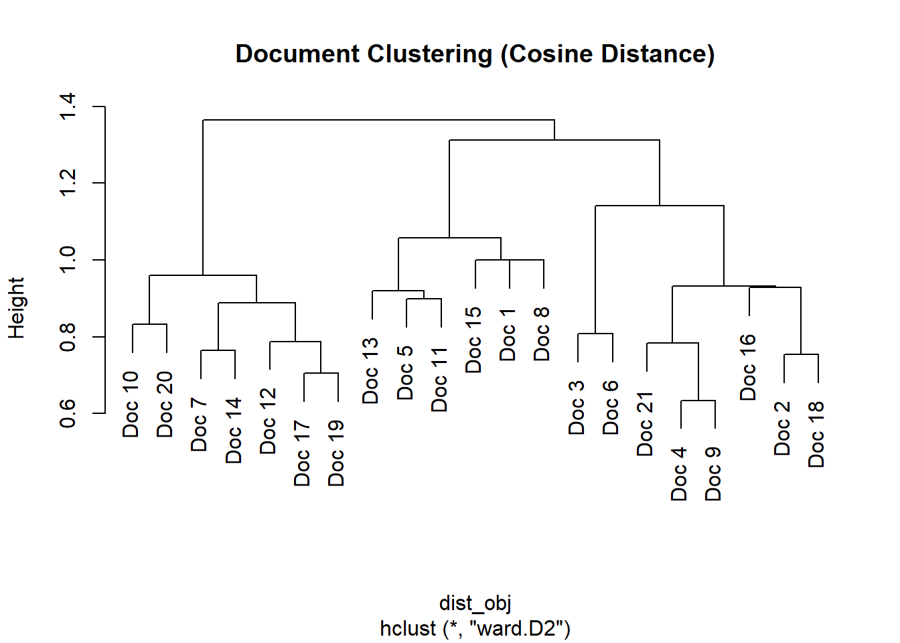
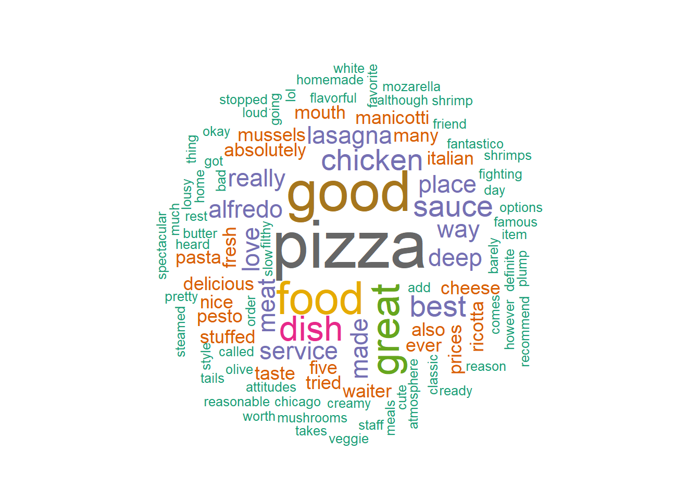

FALSE <<VCorpus>>
FALSE Metadata: corpus specific: 0, document level (indexed): 0
FALSE Content: documents: 21
FALSE
FALSE [[1]]
FALSE <<PlainTextDocument>>
FALSE Metadata: 7
FALSE Content: chars: 60
FALSE
FALSE [[2]]
FALSE <<PlainTextDocument>>
FALSE Metadata: 7
FALSE Content: chars: 130
FALSE
FALSE [[3]]
FALSE <<PlainTextDocument>>
FALSE Metadata: 7
FALSE Content: chars: 65
FALSE
FALSE [[4]]
FALSE <<PlainTextDocument>>
FALSE Metadata: 7
FALSE Content: chars: 50
FALSE
FALSE [[5]]
FALSE <<PlainTextDocument>>
FALSE Metadata: 7
FALSE Content: chars: 142
FALSE
FALSE [[6]]
FALSE <<PlainTextDocument>>
FALSE Metadata: 7
FALSE Content: chars: 17
FALSE
FALSE [[7]]
FALSE <<PlainTextDocument>>
FALSE Metadata: 7
FALSE Content: chars: 46
FALSE
FALSE [[8]]
FALSE <<PlainTextDocument>>
FALSE Metadata: 7
FALSE Content: chars: 61
FALSE
FALSE [[9]]
FALSE <<PlainTextDocument>>
FALSE Metadata: 7
FALSE Content: chars: 109
FALSE
FALSE [[10]]
FALSE <<PlainTextDocument>>
FALSE Metadata: 7
FALSE Content: chars: 132
FALSE
FALSE [[11]]
FALSE <<PlainTextDocument>>
FALSE Metadata: 7
FALSE Content: chars: 130
FALSE
FALSE [[12]]
FALSE <<PlainTextDocument>>
FALSE Metadata: 7
FALSE Content: chars: 172
FALSE
FALSE [[13]]
FALSE <<PlainTextDocument>>
FALSE Metadata: 7
FALSE Content: chars: 56
FALSE
FALSE [[14]]
FALSE <<PlainTextDocument>>
FALSE Metadata: 7
FALSE Content: chars: 25
FALSE
FALSE [[15]]
FALSE <<PlainTextDocument>>
FALSE Metadata: 7
FALSE Content: chars: 50
FALSE
FALSE [[16]]
FALSE <<PlainTextDocument>>
FALSE Metadata: 7
FALSE Content: chars: 68
FALSE
FALSE [[17]]
FALSE <<PlainTextDocument>>
FALSE Metadata: 7
FALSE Content: chars: 88
FALSE
FALSE [[18]]
FALSE <<PlainTextDocument>>
FALSE Metadata: 7
FALSE Content: chars: 68
FALSE
FALSE [[19]]
FALSE <<PlainTextDocument>>
FALSE Metadata: 7
FALSE Content: chars: 93
FALSE
FALSE [[20]]
FALSE <<PlainTextDocument>>
FALSE Metadata: 7
FALSE Content: chars: 109
FALSE
FALSE [[21]]
FALSE <<PlainTextDocument>>
FALSE Metadata: 7
FALSE Content: chars: 131Market Review Analysis
Market Review Analysis
1. Introduction
Customer Review Analysis in analytics refers to the process of examining customer feedback (usually in the form of written reviews, ratings, and comments) to extract insights about:
Customer satisfaction
Product or service performance
Pain points and areas for improvement
Sentiment (positive, negative, or neutral)
Trends in customer needs or preferences
2. Data Pre-processing
FALSE <<DocumentTermMatrix (documents: 21, terms: 185)>>
FALSE Non-/sparse entries: 254/3631
FALSE Sparsity : 93%
FALSE Maximal term length: 11
FALSE Weighting : term frequency (tf)
FALSE Sample :
FALSE Terms
FALSE Docs alfredo best chicken deep dish food good great pizza sauce
FALSE 10 1 0 1 0 0 1 0 0 1 0
FALSE 11 0 0 0 0 0 0 0 0 0 1
FALSE 12 0 1 0 1 1 1 1 0 2 0
FALSE 17 0 0 0 1 1 0 0 0 1 0
FALSE 19 0 1 2 1 1 0 0 0 2 0
FALSE 2 0 0 0 0 0 2 1 0 0 0
FALSE 20 1 0 0 0 1 0 1 0 1 0
FALSE 21 0 0 0 0 1 0 1 2 0 0
FALSE 5 0 0 0 0 0 0 0 0 0 2
FALSE 9 1 0 1 0 0 0 1 1 1 1FALSE Terms
FALSE Terms absolutely add alfredo also although amazing appetizers
FALSE absolutely 0.00 1.00 0.59 1.00 1.00 1.00 1.00
FALSE add 1.00 0.00 1.00 1.00 1.00 1.00 1.00
FALSE alfredo 0.59 1.00 0.00 1.00 0.42 1.00 1.00
FALSE also 1.00 1.00 1.00 0.00 1.00 1.00 1.00
FALSE although 1.00 1.00 0.42 1.00 0.00 1.00 1.00
FALSE amazing 1.00 1.00 1.00 1.00 1.00 0.00 1.00
FALSE appetizers 1.00 1.00 1.00 1.00 1.00 1.00 0.00
FALSE atmosphere 0.29 1.00 1.00 1.00 1.00 1.00 1.00
FALSE attitudes 1.00 1.00 1.00 1.00 1.00 1.00 1.00
FALSE bad 1.00 1.00 1.00 1.00 1.00 1.00 1.00
FALSE barely 1.00 1.00 1.00 1.00 1.00 1.00 1.00
FALSE best 0.65 1.00 1.00 0.65 1.00 1.00 1.00
FALSE better 0.29 1.00 0.42 1.00 1.00 1.00 1.00
FALSE butter 1.00 1.00 0.42 1.00 0.00 1.00 1.00
FALSE caccatore 1.00 1.00 1.00 1.00 1.00 1.00 1.00
FALSE called 1.00 1.00 1.00 0.29 1.00 1.00 1.00
FALSE cheese 1.00 0.29 1.00 1.00 1.00 1.00 1.00
FALSE cheeses 1.00 1.00 1.00 1.00 1.00 1.00 1.00
FALSE chew 1.00 1.00 1.00 1.00 1.00 1.00 1.00
FALSE chicago 1.00 1.00 1.00 0.29 1.00 1.00 1.00
FALSE chicken 1.00 1.00 0.53 1.00 0.59 1.00 1.00
FALSE choose 1.00 1.00 1.00 1.00 1.00 1.00 1.00
FALSE classic 1.00 1.00 1.00 1.00 1.00 1.00 0.00
FALSE comes 1.00 0.00 1.00 1.00 1.00 1.00 1.00
FALSE complaints 1.00 1.00 1.00 1.00 1.00 1.00 1.00
FALSE cooked 1.00 1.00 1.00 1.00 1.00 1.00 1.00
FALSE creamy 1.00 1.00 1.00 1.00 1.00 1.00 1.00
FALSE crepe 1.00 1.00 1.00 1.00 1.00 1.00 1.00
FALSE cute 0.29 1.00 1.00 1.00 1.00 1.00 1.00
FALSE day 1.00 1.00 1.00 1.00 1.00 0.00 1.00
FALSE deep 1.00 1.00 1.00 0.59 1.00 1.00 1.00
FALSE definite 1.00 1.00 1.00 1.00 1.00 1.00 0.00
FALSE definitely 1.00 0.00 1.00 1.00 1.00 1.00 1.00
FALSE delicious 1.00 1.00 1.00 1.00 1.00 1.00 1.00
FALSE deterrent 1.00 1.00 1.00 1.00 1.00 1.00 1.00
FALSE diamond 1.00 1.00 1.00 1.00 1.00 1.00 1.00
FALSE die 1.00 1.00 1.00 1.00 1.00 1.00 1.00
FALSE dish 0.68 0.55 0.74 0.68 1.00 1.00 1.00
FALSE dont 1.00 0.00 1.00 1.00 1.00 1.00 1.00
FALSE dry 1.00 1.00 0.42 1.00 1.00 1.00 1.00
FALSE entire 1.00 0.00 1.00 1.00 1.00 1.00 1.00
FALSE ever 1.00 1.00 1.00 0.50 1.00 1.00 1.00
FALSE excellent 1.00 1.00 1.00 1.00 1.00 1.00 1.00
FALSE eyes 1.00 1.00 1.00 1.00 1.00 1.00 1.00
FALSE famous 1.00 1.00 1.00 1.00 1.00 1.00 1.00
FALSE fantastic 0.29 1.00 1.00 1.00 1.00 1.00 1.00
FALSE fantastico 1.00 1.00 1.00 1.00 1.00 1.00 1.00
FALSE favorite 1.00 1.00 1.00 1.00 1.00 1.00 1.00
FALSE fettuccine 0.29 1.00 0.42 1.00 1.00 1.00 1.00
FALSE fighting 1.00 1.00 1.00 0.29 1.00 1.00 1.00
FALSE filthy 1.00 1.00 1.00 1.00 1.00 1.00 1.00
FALSE five 1.00 1.00 1.00 0.50 1.00 1.00 0.29
FALSE flavorful 1.00 1.00 0.42 1.00 0.00 1.00 1.00
FALSE food 0.76 1.00 0.81 0.53 0.67 1.00 1.00
FALSE fooddo 1.00 1.00 1.00 1.00 1.00 1.00 1.00
FALSE forever 1.00 1.00 1.00 1.00 1.00 1.00 1.00
FALSE fourty 1.00 1.00 1.00 0.29 1.00 1.00 1.00
FALSE fresh 1.00 1.00 0.59 1.00 0.29 1.00 1.00
FALSE friend 1.00 1.00 1.00 1.00 1.00 1.00 1.00
FALSE friendly 1.00 1.00 1.00 1.00 1.00 1.00 1.00
FALSE garden 0.29 1.00 0.42 1.00 1.00 1.00 1.00
FALSE garlic 1.00 1.00 0.42 1.00 0.00 1.00 1.00
FALSE gnocchi 1.00 1.00 1.00 1.00 1.00 1.00 1.00
FALSE going 1.00 1.00 1.00 1.00 1.00 1.00 1.00
FALSE good 0.79 0.70 0.65 0.36 1.00 1.00 1.00
FALSE got 1.00 1.00 1.00 0.29 1.00 1.00 1.00
FALSE great 0.75 0.29 0.80 0.75 1.00 1.00 1.00
FALSE happy 1.00 1.00 1.00 1.00 1.00 0.00 1.00
FALSE heard 1.00 1.00 0.42 1.00 1.00 1.00 1.00
FALSE hiking 1.00 1.00 1.00 1.00 1.00 0.00 1.00
FALSE home 1.00 1.00 1.00 1.00 1.00 1.00 1.00
FALSE homemade 1.00 1.00 1.00 1.00 1.00 1.00 1.00
FALSE house 1.00 1.00 1.00 0.29 1.00 1.00 1.00
FALSE however 1.00 1.00 0.42 1.00 0.00 1.00 1.00
FALSE huge 1.00 1.00 1.00 1.00 1.00 1.00 1.00
FALSE including 1.00 1.00 1.00 1.00 1.00 1.00 1.00
FALSE instead 1.00 1.00 1.00 1.00 1.00 1.00 1.00
FALSE italian 1.00 1.00 1.00 1.00 1.00 1.00 1.00
FALSE item 1.00 1.00 1.00 1.00 1.00 1.00 1.00
FALSE ive 0.29 1.00 0.42 1.00 1.00 1.00 1.00
FALSE just 1.00 1.00 0.42 1.00 1.00 1.00 1.00
FALSE lasagna 1.00 0.11 1.00 1.00 1.00 1.00 1.00
FALSE lasagne 0.29 1.00 0.42 1.00 1.00 1.00 1.00
FALSE left 1.00 1.00 1.00 0.29 1.00 1.00 1.00
FALSE like 1.00 0.00 1.00 1.00 1.00 1.00 1.00
FALSE linguini 1.00 1.00 0.42 1.00 0.00 1.00 1.00
FALSE little 1.00 1.00 1.00 1.00 1.00 1.00 1.00
FALSE lol 0.29 1.00 1.00 1.00 1.00 1.00 1.00
FALSE long 1.00 1.00 1.00 1.00 1.00 0.00 1.00
FALSE loud 1.00 1.00 1.00 1.00 1.00 1.00 1.00
FALSE lousy 1.00 1.00 1.00 1.00 1.00 1.00 1.00
FALSE love 1.00 1.00 1.00 1.00 1.00 1.00 1.00
FALSE lovers 1.00 1.00 1.00 1.00 1.00 1.00 1.00
FALSE made 1.00 0.42 1.00 1.00 1.00 1.00 1.00
FALSE make 1.00 1.00 1.00 1.00 1.00 1.00 1.00
FALSE manicotti 1.00 1.00 1.00 1.00 1.00 1.00 1.00
FALSE many 0.50 1.00 0.59 1.00 1.00 1.00 1.00
FALSE meals 1.00 1.00 1.00 1.00 1.00 1.00 1.00
FALSE meat 1.00 0.42 1.00 1.00 1.00 1.00 1.00
FALSE meatballs 1.00 1.00 1.00 1.00 1.00 0.00 1.00
FALSE melt 1.00 1.00 1.00 1.00 1.00 1.00 1.00
FALSE melts 1.00 1.00 1.00 1.00 1.00 1.00 1.00
FALSE menu 1.00 1.00 1.00 0.29 1.00 1.00 1.00
FALSE minute 1.00 1.00 1.00 0.29 1.00 1.00 1.00
FALSE mouth 1.00 1.00 1.00 1.00 1.00 1.00 1.00
FALSE mozarella 1.00 1.00 1.00 1.00 1.00 1.00 1.00
FALSE much 1.00 1.00 1.00 1.00 1.00 1.00 1.00
FALSE mushrooms 1.00 1.00 1.00 1.00 1.00 1.00 1.00
FALSE mussels 1.00 1.00 0.42 1.00 0.00 1.00 1.00
FALSE nice 1.00 1.00 0.59 0.50 1.00 1.00 1.00
FALSE okay 1.00 1.00 0.42 1.00 1.00 1.00 1.00
FALSE okive 0.29 1.00 0.42 1.00 1.00 1.00 1.00
FALSE olive 0.29 1.00 0.42 1.00 1.00 1.00 1.00
FALSE options 1.00 1.00 1.00 1.00 1.00 1.00 1.00
FALSE order 1.00 1.00 1.00 1.00 1.00 1.00 1.00
FALSE ordered 1.00 1.00 0.42 1.00 0.00 1.00 1.00
FALSE ordering 1.00 1.00 1.00 1.00 1.00 1.00 1.00
FALSE overpower 1.00 0.00 1.00 1.00 1.00 1.00 1.00
FALSE overrated 1.00 1.00 1.00 1.00 1.00 1.00 1.00
FALSE pan 1.00 1.00 1.00 0.29 1.00 1.00 1.00
FALSE parm 1.00 1.00 1.00 1.00 1.00 1.00 1.00
FALSE pasta 1.00 1.00 1.00 1.00 1.00 0.29 1.00
FALSE people 1.00 1.00 1.00 0.29 1.00 1.00 1.00
FALSE perfectly 1.00 1.00 1.00 1.00 1.00 1.00 1.00
FALSE pesto 1.00 1.00 1.00 1.00 1.00 1.00 1.00
FALSE pie 1.00 1.00 1.00 0.29 1.00 1.00 1.00
FALSE pizza 0.82 1.00 0.55 0.45 0.74 1.00 0.74
FALSE pizzas 1.00 1.00 1.00 1.00 1.00 1.00 1.00
FALSE place 1.00 1.00 1.00 1.00 1.00 1.00 1.00
FALSE places 0.29 1.00 0.42 1.00 1.00 1.00 1.00
FALSE plump 1.00 1.00 1.00 1.00 1.00 1.00 1.00
FALSE portions 1.00 1.00 1.00 1.00 1.00 1.00 1.00
FALSE pretty 1.00 1.00 1.00 1.00 1.00 1.00 1.00
FALSE prices 1.00 1.00 1.00 1.00 1.00 1.00 1.00
FALSE ready 1.00 1.00 1.00 0.29 1.00 1.00 1.00
FALSE real 1.00 1.00 1.00 0.29 1.00 1.00 1.00
FALSE really 1.00 0.42 0.67 0.59 1.00 1.00 1.00
FALSE reason 1.00 1.00 1.00 1.00 1.00 1.00 1.00
FALSE reasonable 1.00 1.00 1.00 1.00 1.00 1.00 1.00
FALSE recommend 1.00 1.00 1.00 1.00 1.00 1.00 1.00
FALSE rest 1.00 1.00 1.00 0.29 1.00 1.00 1.00
FALSE ricotta 1.00 0.29 1.00 1.00 1.00 1.00 1.00
FALSE rough 1.00 1.00 1.00 1.00 1.00 1.00 1.00
FALSE sauce 1.00 1.00 0.76 1.00 1.00 1.00 1.00
FALSE seamlessly 1.00 1.00 1.00 1.00 1.00 1.00 1.00
FALSE seating 1.00 1.00 1.00 0.29 1.00 1.00 1.00
FALSE service 1.00 1.00 1.00 0.59 1.00 1.00 1.00
FALSE shrimp 1.00 1.00 1.00 1.00 1.00 1.00 1.00
FALSE shrimps 1.00 1.00 1.00 1.00 1.00 1.00 1.00
FALSE slow 1.00 1.00 1.00 1.00 1.00 1.00 1.00
FALSE spaghetti 1.00 1.00 1.00 1.00 1.00 1.00 1.00
FALSE special 1.00 1.00 1.00 1.00 1.00 1.00 1.00
FALSE spectacular 1.00 1.00 0.42 1.00 1.00 1.00 1.00
FALSE spices 1.00 0.00 1.00 1.00 1.00 1.00 1.00
FALSE staff 1.00 1.00 1.00 1.00 1.00 1.00 1.00
FALSE stars 1.00 1.00 1.00 1.00 1.00 1.00 0.00
FALSE steamed 1.00 1.00 0.42 1.00 0.00 1.00 1.00
FALSE stop 1.00 1.00 1.00 1.00 1.00 0.00 1.00
FALSE stopped 1.00 1.00 1.00 1.00 1.00 1.00 1.00
FALSE stuffed 1.00 1.00 1.00 1.00 1.00 1.00 1.00
FALSE style 1.00 1.00 1.00 0.29 1.00 1.00 1.00
FALSE sublime 1.00 1.00 1.00 1.00 1.00 1.00 1.00
FALSE super 1.00 1.00 1.00 1.00 1.00 1.00 1.00
FALSE tails 1.00 1.00 1.00 1.00 1.00 1.00 1.00
FALSE take 1.00 1.00 1.00 1.00 1.00 1.00 1.00
FALSE takes 1.00 1.00 1.00 1.00 1.00 1.00 1.00
FALSE taste 0.50 1.00 0.18 1.00 0.29 1.00 1.00
FALSE tasted 1.00 1.00 0.42 1.00 1.00 1.00 1.00
FALSE thing 1.00 1.00 0.42 1.00 1.00 1.00 1.00
FALSE time 1.00 1.00 1.00 1.00 1.00 1.00 1.00
FALSE tops 1.00 1.00 1.00 0.29 1.00 1.00 1.00
FALSE tortellini 1.00 1.00 1.00 1.00 1.00 1.00 1.00
FALSE tortellinis 1.00 1.00 1.00 1.00 1.00 1.00 1.00
FALSE tried 0.50 1.00 0.59 1.00 1.00 1.00 1.00
FALSE veggie 1.00 1.00 1.00 1.00 1.00 1.00 1.00
FALSE wait 1.00 1.00 1.00 0.29 1.00 1.00 1.00
FALSE waiter 0.50 1.00 0.59 1.00 1.00 1.00 1.00
FALSE want 1.00 0.00 1.00 1.00 1.00 1.00 1.00
FALSE wasnt 1.00 1.00 0.42 1.00 1.00 1.00 1.00
FALSE watering 1.00 1.00 1.00 1.00 1.00 1.00 1.00
FALSE way 1.00 1.00 1.00 1.00 1.00 1.00 1.00
FALSE white 1.00 1.00 0.42 1.00 0.00 1.00 1.00
FALSE wine 1.00 1.00 0.42 1.00 0.00 1.00 1.00
FALSE worth 1.00 1.00 1.00 0.29 1.00 1.00 1.00
FALSE yummy 1.00 1.00 1.00 1.00 1.00 1.00 1.00
FALSE Terms
FALSE Terms atmosphere attitudes bad barely best better butter caccatore
FALSE absolutely 0.29 1 1 1.00 0.65 0.29 1.00 1.00
FALSE add 1.00 1 1 1.00 1.00 1.00 1.00 1.00
FALSE alfredo 1.00 1 1 1.00 1.00 0.42 0.42 1.00
FALSE also 1.00 1 1 1.00 0.65 1.00 1.00 1.00
FALSE although 1.00 1 1 1.00 1.00 1.00 0.00 1.00
FALSE amazing 1.00 1 1 1.00 1.00 1.00 1.00 1.00
FALSE appetizers 1.00 1 1 1.00 1.00 1.00 1.00 1.00
FALSE atmosphere 0.00 1 1 1.00 0.50 1.00 1.00 1.00
FALSE attitudes 1.00 0 0 1.00 1.00 1.00 1.00 1.00
FALSE bad 1.00 0 0 1.00 1.00 1.00 1.00 1.00
FALSE barely 1.00 1 1 0.00 1.00 1.00 1.00 1.00
FALSE best 0.50 1 1 1.00 0.00 1.00 1.00 0.50
FALSE better 1.00 1 1 1.00 1.00 0.00 1.00 1.00
FALSE butter 1.00 1 1 1.00 1.00 1.00 0.00 1.00
FALSE caccatore 1.00 1 1 1.00 0.50 1.00 1.00 0.00
FALSE called 1.00 1 1 1.00 0.50 1.00 1.00 1.00
FALSE cheese 1.00 1 1 1.00 1.00 1.00 1.00 1.00
FALSE cheeses 1.00 1 1 0.00 1.00 1.00 1.00 1.00
FALSE chew 1.00 1 1 0.00 1.00 1.00 1.00 1.00
FALSE chicago 1.00 1 1 1.00 0.50 1.00 1.00 1.00
FALSE chicken 1.00 1 1 1.00 0.59 1.00 0.59 0.18
FALSE choose 1.00 1 1 1.00 1.00 1.00 1.00 1.00
FALSE classic 1.00 1 1 1.00 1.00 1.00 1.00 1.00
FALSE comes 1.00 1 1 1.00 1.00 1.00 1.00 1.00
FALSE complaints 1.00 1 1 1.00 1.00 1.00 1.00 1.00
FALSE cooked 1.00 1 1 1.00 1.00 1.00 1.00 1.00
FALSE creamy 1.00 1 1 1.00 1.00 1.00 1.00 1.00
FALSE crepe 1.00 1 1 0.00 1.00 1.00 1.00 1.00
FALSE cute 0.00 1 1 1.00 0.50 1.00 1.00 1.00
FALSE day 1.00 1 1 1.00 1.00 1.00 1.00 1.00
FALSE deep 1.00 1 1 1.00 0.42 1.00 1.00 0.42
FALSE definite 1.00 1 1 1.00 1.00 1.00 1.00 1.00
FALSE definitely 1.00 1 1 1.00 1.00 1.00 1.00 1.00
FALSE delicious 1.00 1 1 1.00 1.00 1.00 1.00 1.00
FALSE deterrent 1.00 1 1 1.00 1.00 1.00 1.00 1.00
FALSE diamond 1.00 1 1 1.00 1.00 1.00 1.00 1.00
FALSE die 1.00 1 1 1.00 1.00 1.00 1.00 1.00
FALSE dish 1.00 1 1 1.00 0.55 0.55 1.00 0.55
FALSE dont 1.00 1 1 1.00 1.00 1.00 1.00 1.00
FALSE dry 1.00 1 1 1.00 1.00 1.00 1.00 1.00
FALSE entire 1.00 1 1 1.00 1.00 1.00 1.00 1.00
FALSE ever 1.00 1 1 1.00 0.29 1.00 1.00 1.00
FALSE excellent 1.00 1 1 1.00 1.00 1.00 1.00 1.00
FALSE eyes 1.00 1 1 1.00 1.00 1.00 1.00 1.00
FALSE famous 1.00 1 1 1.00 0.50 1.00 1.00 0.00
FALSE fantastic 0.00 1 1 1.00 0.50 1.00 1.00 1.00
FALSE fantastico 1.00 1 1 1.00 1.00 1.00 1.00 1.00
FALSE favorite 1.00 1 1 1.00 1.00 1.00 1.00 1.00
FALSE fettuccine 1.00 1 1 1.00 1.00 0.00 1.00 1.00
FALSE fighting 1.00 1 1 1.00 0.50 1.00 1.00 1.00
FALSE filthy 1.00 1 1 1.00 1.00 1.00 1.00 1.00
FALSE five 1.00 1 1 1.00 0.65 1.00 1.00 1.00
FALSE flavorful 1.00 1 1 1.00 1.00 1.00 0.00 1.00
FALSE food 0.67 1 1 1.00 0.67 1.00 0.67 1.00
FALSE fooddo 1.00 1 1 1.00 1.00 1.00 1.00 1.00
FALSE forever 1.00 1 1 1.00 1.00 1.00 1.00 1.00
FALSE fourty 1.00 1 1 1.00 0.50 1.00 1.00 1.00
FALSE fresh 1.00 1 1 1.00 1.00 1.00 0.29 1.00
FALSE friend 1.00 1 1 1.00 1.00 1.00 1.00 1.00
FALSE friendly 1.00 1 1 1.00 1.00 1.00 1.00 1.00
FALSE garden 1.00 1 1 1.00 1.00 0.00 1.00 1.00
FALSE garlic 1.00 1 1 1.00 1.00 1.00 0.00 1.00
FALSE gnocchi 1.00 1 1 1.00 0.50 1.00 1.00 1.00
FALSE going 1.00 0 0 1.00 1.00 1.00 1.00 1.00
FALSE good 1.00 1 1 1.00 0.85 0.70 1.00 1.00
FALSE got 1.00 1 1 1.00 0.50 1.00 1.00 1.00
FALSE great 0.65 1 1 1.00 0.82 1.00 1.00 1.00
FALSE happy 1.00 1 1 1.00 1.00 1.00 1.00 1.00
FALSE heard 1.00 1 1 1.00 1.00 1.00 1.00 1.00
FALSE hiking 1.00 1 1 1.00 1.00 1.00 1.00 1.00
FALSE home 1.00 1 1 1.00 1.00 1.00 1.00 1.00
FALSE homemade 1.00 1 1 0.00 1.00 1.00 1.00 1.00
FALSE house 1.00 1 1 1.00 0.50 1.00 1.00 1.00
FALSE however 1.00 1 1 1.00 1.00 1.00 0.00 1.00
FALSE huge 1.00 1 1 1.00 1.00 1.00 1.00 1.00
FALSE including 1.00 1 1 1.00 1.00 1.00 1.00 1.00
FALSE instead 1.00 1 1 0.00 1.00 1.00 1.00 1.00
FALSE italian 1.00 1 1 1.00 1.00 1.00 1.00 1.00
FALSE item 1.00 1 1 1.00 1.00 1.00 1.00 1.00
FALSE ive 1.00 1 1 1.00 1.00 0.00 1.00 1.00
FALSE just 1.00 1 1 1.00 1.00 1.00 1.00 1.00
FALSE lasagna 1.00 1 1 1.00 1.00 1.00 1.00 1.00
FALSE lasagne 1.00 1 1 1.00 1.00 0.00 1.00 1.00
FALSE left 1.00 1 1 1.00 0.50 1.00 1.00 1.00
FALSE like 1.00 1 1 1.00 1.00 1.00 1.00 1.00
FALSE linguini 1.00 1 1 1.00 1.00 1.00 0.00 1.00
FALSE little 1.00 1 1 1.00 1.00 1.00 1.00 1.00
FALSE lol 0.00 1 1 1.00 0.50 1.00 1.00 1.00
FALSE long 1.00 1 1 1.00 1.00 1.00 1.00 1.00
FALSE loud 1.00 1 1 1.00 1.00 1.00 1.00 1.00
FALSE lousy 1.00 0 0 1.00 1.00 1.00 1.00 1.00
FALSE love 1.00 1 1 1.00 1.00 1.00 1.00 1.00
FALSE lovers 1.00 1 1 1.00 1.00 1.00 1.00 1.00
FALSE made 1.00 1 1 0.42 1.00 1.00 1.00 1.00
FALSE make 1.00 1 1 1.00 1.00 1.00 1.00 1.00
FALSE manicotti 1.00 1 1 0.29 1.00 1.00 1.00 1.00
FALSE many 1.00 1 1 1.00 1.00 0.29 1.00 1.00
FALSE meals 1.00 0 0 1.00 1.00 1.00 1.00 1.00
FALSE meat 1.00 1 1 0.42 1.00 1.00 1.00 1.00
FALSE meatballs 1.00 1 1 1.00 1.00 1.00 1.00 1.00
FALSE melt 1.00 1 1 1.00 1.00 1.00 1.00 1.00
FALSE melts 1.00 1 1 0.00 1.00 1.00 1.00 1.00
FALSE menu 1.00 1 1 1.00 0.50 1.00 1.00 1.00
FALSE minute 1.00 1 1 1.00 0.50 1.00 1.00 1.00
FALSE mouth 1.00 1 1 1.00 1.00 1.00 1.00 1.00
FALSE mozarella 1.00 1 1 0.00 1.00 1.00 1.00 1.00
FALSE much 1.00 1 1 1.00 1.00 1.00 1.00 1.00
FALSE mushrooms 1.00 1 1 1.00 1.00 1.00 1.00 1.00
FALSE mussels 1.00 1 1 1.00 1.00 1.00 0.00 1.00
FALSE nice 1.00 1 1 1.00 0.65 1.00 1.00 1.00
FALSE okay 1.00 1 1 1.00 1.00 1.00 1.00 1.00
FALSE okive 1.00 1 1 1.00 1.00 0.00 1.00 1.00
FALSE olive 1.00 1 1 1.00 1.00 0.00 1.00 1.00
FALSE options 1.00 1 1 1.00 1.00 1.00 1.00 1.00
FALSE order 1.00 1 1 1.00 1.00 1.00 1.00 1.00
FALSE ordered 1.00 1 1 1.00 1.00 1.00 0.00 1.00
FALSE ordering 1.00 1 1 0.00 1.00 1.00 1.00 1.00
FALSE overpower 1.00 1 1 1.00 1.00 1.00 1.00 1.00
FALSE overrated 1.00 0 0 1.00 1.00 1.00 1.00 1.00
FALSE pan 1.00 1 1 1.00 0.50 1.00 1.00 1.00
FALSE parm 1.00 1 1 1.00 0.50 1.00 1.00 0.00
FALSE pasta 1.00 1 1 0.29 1.00 1.00 1.00 1.00
FALSE people 1.00 1 1 1.00 0.50 1.00 1.00 1.00
FALSE perfectly 1.00 1 1 1.00 1.00 1.00 1.00 1.00
FALSE pesto 1.00 1 1 1.00 1.00 1.00 1.00 1.00
FALSE pie 1.00 1 1 1.00 1.00 1.00 1.00 1.00
FALSE pizza 1.00 1 1 1.00 0.48 0.74 0.74 0.48
FALSE pizzas 1.00 1 1 1.00 1.00 1.00 1.00 1.00
FALSE place 1.00 1 1 1.00 0.71 1.00 1.00 0.42
FALSE places 1.00 1 1 1.00 1.00 0.00 1.00 1.00
FALSE plump 1.00 1 1 1.00 1.00 1.00 1.00 1.00
FALSE portions 1.00 1 1 1.00 1.00 1.00 1.00 1.00
FALSE pretty 1.00 1 1 1.00 1.00 1.00 1.00 1.00
FALSE prices 1.00 1 1 1.00 1.00 1.00 1.00 1.00
FALSE ready 1.00 1 1 1.00 0.50 1.00 1.00 1.00
FALSE real 1.00 1 1 1.00 0.50 1.00 1.00 1.00
FALSE really 1.00 1 1 1.00 1.00 1.00 1.00 1.00
FALSE reason 1.00 1 1 1.00 0.50 1.00 1.00 0.00
FALSE reasonable 1.00 1 1 1.00 1.00 1.00 1.00 1.00
FALSE recommend 1.00 1 1 0.00 1.00 1.00 1.00 1.00
FALSE rest 1.00 1 1 1.00 0.50 1.00 1.00 1.00
FALSE ricotta 1.00 1 1 0.29 1.00 1.00 1.00 1.00
FALSE rough 1.00 1 1 1.00 1.00 1.00 1.00 1.00
FALSE sauce 1.00 1 1 0.59 1.00 1.00 1.00 1.00
FALSE seamlessly 1.00 1 1 0.00 1.00 1.00 1.00 1.00
FALSE seating 1.00 1 1 1.00 0.50 1.00 1.00 1.00
FALSE service 1.00 1 1 1.00 1.00 1.00 1.00 1.00
FALSE shrimp 1.00 1 1 1.00 1.00 1.00 1.00 1.00
FALSE shrimps 1.00 1 1 1.00 1.00 1.00 1.00 1.00
FALSE slow 1.00 1 1 1.00 1.00 1.00 1.00 1.00
FALSE spaghetti 1.00 1 1 1.00 1.00 1.00 1.00 1.00
FALSE special 1.00 1 1 1.00 1.00 1.00 1.00 1.00
FALSE spectacular 1.00 1 1 1.00 1.00 1.00 1.00 1.00
FALSE spices 1.00 1 1 1.00 1.00 1.00 1.00 1.00
FALSE staff 1.00 1 1 1.00 1.00 1.00 1.00 1.00
FALSE stars 1.00 1 1 1.00 1.00 1.00 1.00 1.00
FALSE steamed 1.00 1 1 1.00 1.00 1.00 0.00 1.00
FALSE stop 1.00 1 1 1.00 1.00 1.00 1.00 1.00
FALSE stopped 1.00 0 0 1.00 1.00 1.00 1.00 1.00
FALSE stuffed 1.00 1 1 1.00 1.00 1.00 1.00 1.00
FALSE style 1.00 1 1 1.00 0.50 1.00 1.00 1.00
FALSE sublime 1.00 1 1 1.00 1.00 1.00 1.00 1.00
FALSE super 1.00 1 1 1.00 1.00 1.00 1.00 1.00
FALSE tails 1.00 1 1 1.00 1.00 1.00 1.00 1.00
FALSE take 1.00 1 1 1.00 1.00 1.00 1.00 1.00
FALSE takes 1.00 1 1 1.00 1.00 1.00 1.00 1.00
FALSE taste 1.00 1 1 1.00 1.00 0.29 0.29 1.00
FALSE tasted 1.00 1 1 1.00 1.00 1.00 1.00 1.00
FALSE thing 1.00 1 1 1.00 1.00 1.00 1.00 1.00
FALSE time 1.00 1 1 1.00 1.00 1.00 1.00 1.00
FALSE tops 1.00 1 1 1.00 0.50 1.00 1.00 1.00
FALSE tortellini 1.00 1 1 1.00 1.00 1.00 1.00 1.00
FALSE tortellinis 1.00 1 1 1.00 1.00 1.00 1.00 1.00
FALSE tried 1.00 1 1 1.00 0.65 0.29 1.00 0.29
FALSE veggie 1.00 1 1 1.00 1.00 1.00 1.00 1.00
FALSE wait 1.00 1 1 1.00 0.50 1.00 1.00 1.00
FALSE waiter 0.29 1 1 1.00 0.65 1.00 1.00 1.00
FALSE want 1.00 1 1 1.00 1.00 1.00 1.00 1.00
FALSE wasnt 1.00 1 1 1.00 1.00 1.00 1.00 1.00
FALSE watering 1.00 1 1 1.00 1.00 1.00 1.00 1.00
FALSE way 1.00 0 0 1.00 1.00 1.00 1.00 1.00
FALSE white 1.00 1 1 1.00 1.00 1.00 0.00 1.00
FALSE wine 1.00 1 1 1.00 1.00 1.00 0.00 1.00
FALSE worth 1.00 1 1 1.00 0.50 1.00 1.00 1.00
FALSE yummy 1.00 1 1 1.00 0.50 1.00 1.00 0.00
FALSE Terms
FALSE Terms called cheese cheeses chew chicago chicken choose classic comes
FALSE absolutely 1.00 1.00 1.00 1.00 1.00 1.00 1.00 1.00 1.00
FALSE add 1.00 0.29 1.00 1.00 1.00 1.00 1.00 1.00 0.00
FALSE alfredo 1.00 1.00 1.00 1.00 1.00 0.53 1.00 1.00 1.00
FALSE also 0.29 1.00 1.00 1.00 0.29 1.00 1.00 1.00 1.00
FALSE although 1.00 1.00 1.00 1.00 1.00 0.59 1.00 1.00 1.00
FALSE amazing 1.00 1.00 1.00 1.00 1.00 1.00 1.00 1.00 1.00
FALSE appetizers 1.00 1.00 1.00 1.00 1.00 1.00 1.00 0.00 1.00
FALSE atmosphere 1.00 1.00 1.00 1.00 1.00 1.00 1.00 1.00 1.00
FALSE attitudes 1.00 1.00 1.00 1.00 1.00 1.00 1.00 1.00 1.00
FALSE bad 1.00 1.00 1.00 1.00 1.00 1.00 1.00 1.00 1.00
FALSE barely 1.00 1.00 0.00 0.00 1.00 1.00 1.00 1.00 1.00
FALSE best 0.50 1.00 1.00 1.00 0.50 0.59 1.00 1.00 1.00
FALSE better 1.00 1.00 1.00 1.00 1.00 1.00 1.00 1.00 1.00
FALSE butter 1.00 1.00 1.00 1.00 1.00 0.59 1.00 1.00 1.00
FALSE caccatore 1.00 1.00 1.00 1.00 1.00 0.18 1.00 1.00 1.00
FALSE called 0.00 1.00 1.00 1.00 0.00 1.00 1.00 1.00 1.00
FALSE cheese 1.00 0.00 1.00 1.00 1.00 1.00 1.00 1.00 0.29
FALSE cheeses 1.00 1.00 0.00 0.00 1.00 1.00 1.00 1.00 1.00
FALSE chew 1.00 1.00 0.00 0.00 1.00 1.00 1.00 1.00 1.00
FALSE chicago 0.00 1.00 1.00 1.00 0.00 1.00 1.00 1.00 1.00
FALSE chicken 1.00 1.00 1.00 1.00 1.00 0.00 1.00 1.00 1.00
FALSE choose 1.00 1.00 1.00 1.00 1.00 1.00 0.00 1.00 1.00
FALSE classic 1.00 1.00 1.00 1.00 1.00 1.00 1.00 0.00 1.00
FALSE comes 1.00 0.29 1.00 1.00 1.00 1.00 1.00 1.00 0.00
FALSE complaints 1.00 1.00 1.00 1.00 1.00 1.00 1.00 1.00 1.00
FALSE cooked 1.00 0.29 1.00 1.00 1.00 1.00 1.00 1.00 1.00
FALSE creamy 1.00 0.29 1.00 1.00 1.00 1.00 1.00 1.00 1.00
FALSE crepe 1.00 1.00 0.00 0.00 1.00 1.00 1.00 1.00 1.00
FALSE cute 1.00 1.00 1.00 1.00 1.00 1.00 1.00 1.00 1.00
FALSE day 1.00 1.00 1.00 1.00 1.00 1.00 1.00 1.00 1.00
FALSE deep 0.42 1.00 1.00 1.00 0.42 0.53 1.00 1.00 1.00
FALSE definite 1.00 1.00 1.00 1.00 1.00 1.00 1.00 0.00 1.00
FALSE definitely 1.00 0.29 1.00 1.00 1.00 1.00 1.00 1.00 0.00
FALSE delicious 1.00 1.00 1.00 1.00 1.00 1.00 0.29 1.00 1.00
FALSE deterrent 1.00 0.29 1.00 1.00 1.00 1.00 1.00 1.00 1.00
FALSE diamond 1.00 1.00 1.00 1.00 1.00 1.00 1.00 1.00 1.00
FALSE die 1.00 1.00 1.00 1.00 1.00 1.00 1.00 1.00 1.00
FALSE dish 0.55 0.68 1.00 1.00 0.55 0.63 1.00 1.00 0.55
FALSE dont 1.00 0.29 1.00 1.00 1.00 1.00 1.00 1.00 0.00
FALSE dry 1.00 1.00 1.00 1.00 1.00 0.59 1.00 1.00 1.00
FALSE entire 1.00 0.29 1.00 1.00 1.00 1.00 1.00 1.00 0.00
FALSE ever 0.29 1.00 1.00 1.00 0.29 1.00 1.00 1.00 1.00
FALSE excellent 1.00 1.00 1.00 1.00 1.00 1.00 1.00 1.00 1.00
FALSE eyes 1.00 1.00 1.00 1.00 1.00 1.00 1.00 1.00 1.00
FALSE famous 1.00 1.00 1.00 1.00 1.00 0.18 1.00 1.00 1.00
FALSE fantastic 1.00 1.00 1.00 1.00 1.00 1.00 1.00 1.00 1.00
FALSE fantastico 1.00 1.00 1.00 1.00 1.00 1.00 1.00 1.00 1.00
FALSE favorite 1.00 1.00 1.00 1.00 1.00 1.00 1.00 1.00 1.00
FALSE fettuccine 1.00 1.00 1.00 1.00 1.00 1.00 1.00 1.00 1.00
FALSE fighting 0.00 1.00 1.00 1.00 0.00 1.00 1.00 1.00 1.00
FALSE filthy 1.00 1.00 1.00 1.00 1.00 1.00 1.00 1.00 1.00
FALSE five 0.29 1.00 1.00 1.00 0.29 1.00 1.00 0.29 1.00
FALSE flavorful 1.00 1.00 1.00 1.00 1.00 0.59 1.00 1.00 1.00
FALSE food 0.67 1.00 1.00 1.00 0.67 0.86 0.33 1.00 1.00
FALSE fooddo 1.00 1.00 1.00 1.00 1.00 1.00 1.00 1.00 1.00
FALSE forever 1.00 1.00 1.00 1.00 1.00 1.00 1.00 1.00 1.00
FALSE fourty 0.00 1.00 1.00 1.00 0.00 1.00 1.00 1.00 1.00
FALSE fresh 1.00 1.00 1.00 1.00 1.00 0.71 0.29 1.00 1.00
FALSE friend 1.00 1.00 1.00 1.00 1.00 1.00 1.00 1.00 1.00
FALSE friendly 1.00 1.00 1.00 1.00 1.00 1.00 1.00 1.00 1.00
FALSE garden 1.00 1.00 1.00 1.00 1.00 1.00 1.00 1.00 1.00
FALSE garlic 1.00 1.00 1.00 1.00 1.00 0.59 1.00 1.00 1.00
FALSE gnocchi 1.00 1.00 1.00 1.00 1.00 1.00 1.00 1.00 1.00
FALSE going 1.00 1.00 1.00 1.00 1.00 1.00 1.00 1.00 1.00
FALSE good 0.70 0.79 1.00 1.00 0.70 0.88 0.70 1.00 0.70
FALSE got 0.00 1.00 1.00 1.00 0.00 1.00 1.00 1.00 1.00
FALSE great 1.00 0.50 1.00 1.00 1.00 0.86 1.00 1.00 0.29
FALSE happy 1.00 1.00 1.00 1.00 1.00 1.00 1.00 1.00 1.00
FALSE heard 1.00 1.00 1.00 1.00 1.00 0.59 1.00 1.00 1.00
FALSE hiking 1.00 1.00 1.00 1.00 1.00 1.00 1.00 1.00 1.00
FALSE home 1.00 1.00 1.00 1.00 1.00 1.00 0.00 1.00 1.00
FALSE homemade 1.00 1.00 0.00 0.00 1.00 1.00 1.00 1.00 1.00
FALSE house 0.00 1.00 1.00 1.00 0.00 1.00 1.00 1.00 1.00
FALSE however 1.00 1.00 1.00 1.00 1.00 0.59 1.00 1.00 1.00
FALSE huge 1.00 1.00 1.00 1.00 1.00 1.00 1.00 1.00 1.00
FALSE including 1.00 1.00 1.00 1.00 1.00 1.00 0.00 1.00 1.00
FALSE instead 1.00 1.00 0.00 0.00 1.00 1.00 1.00 1.00 1.00
FALSE italian 1.00 1.00 1.00 1.00 1.00 1.00 1.00 1.00 1.00
FALSE item 1.00 1.00 1.00 1.00 1.00 1.00 1.00 1.00 1.00
FALSE ive 1.00 1.00 1.00 1.00 1.00 1.00 1.00 1.00 1.00
FALSE just 1.00 1.00 1.00 1.00 1.00 0.59 1.00 1.00 1.00
FALSE lasagna 1.00 0.37 1.00 1.00 1.00 1.00 1.00 1.00 0.11
FALSE lasagne 1.00 1.00 1.00 1.00 1.00 1.00 1.00 1.00 1.00
FALSE left 0.00 1.00 1.00 1.00 0.00 1.00 1.00 1.00 1.00
FALSE like 1.00 0.29 1.00 1.00 1.00 1.00 1.00 1.00 0.00
FALSE linguini 1.00 1.00 1.00 1.00 1.00 0.59 1.00 1.00 1.00
FALSE little 1.00 1.00 1.00 1.00 1.00 1.00 0.00 1.00 1.00
FALSE lol 1.00 1.00 1.00 1.00 1.00 1.00 1.00 1.00 1.00
FALSE long 1.00 1.00 1.00 1.00 1.00 1.00 1.00 1.00 1.00
FALSE loud 1.00 1.00 1.00 1.00 1.00 1.00 1.00 1.00 1.00
FALSE lousy 1.00 1.00 1.00 1.00 1.00 1.00 1.00 1.00 1.00
FALSE love 1.00 1.00 1.00 1.00 1.00 1.00 1.00 1.00 1.00
FALSE lovers 1.00 1.00 1.00 1.00 1.00 1.00 1.00 1.00 1.00
FALSE made 1.00 0.59 0.42 0.42 1.00 1.00 0.42 1.00 0.42
FALSE make 1.00 1.00 1.00 1.00 1.00 1.00 0.00 1.00 1.00
FALSE manicotti 1.00 1.00 0.29 0.29 1.00 1.00 1.00 1.00 1.00
FALSE many 1.00 1.00 1.00 1.00 1.00 1.00 0.29 1.00 1.00
FALSE meals 1.00 1.00 1.00 1.00 1.00 1.00 1.00 1.00 1.00
FALSE meat 1.00 0.59 0.42 0.42 1.00 1.00 1.00 1.00 0.42
FALSE meatballs 1.00 1.00 1.00 1.00 1.00 1.00 1.00 1.00 1.00
FALSE melt 1.00 0.29 1.00 1.00 1.00 1.00 1.00 1.00 1.00
FALSE melts 1.00 1.00 0.00 0.00 1.00 1.00 1.00 1.00 1.00
FALSE menu 0.00 1.00 1.00 1.00 0.00 1.00 1.00 1.00 1.00
FALSE minute 0.00 1.00 1.00 1.00 0.00 1.00 1.00 1.00 1.00
FALSE mouth 1.00 0.50 1.00 1.00 1.00 1.00 1.00 1.00 1.00
FALSE mozarella 1.00 1.00 0.00 0.00 1.00 1.00 1.00 1.00 1.00
FALSE much 1.00 1.00 1.00 1.00 1.00 1.00 1.00 1.00 1.00
FALSE mushrooms 1.00 1.00 1.00 1.00 1.00 1.00 1.00 1.00 1.00
FALSE mussels 1.00 1.00 1.00 1.00 1.00 0.59 1.00 1.00 1.00
FALSE nice 0.29 1.00 1.00 1.00 0.29 0.71 1.00 1.00 1.00
FALSE okay 1.00 1.00 1.00 1.00 1.00 0.59 1.00 1.00 1.00
FALSE okive 1.00 1.00 1.00 1.00 1.00 1.00 1.00 1.00 1.00
FALSE olive 1.00 1.00 1.00 1.00 1.00 1.00 1.00 1.00 1.00
FALSE options 1.00 1.00 1.00 1.00 1.00 1.00 0.00 1.00 1.00
FALSE order 1.00 1.00 1.00 1.00 1.00 1.00 1.00 1.00 1.00
FALSE ordered 1.00 1.00 1.00 1.00 1.00 0.59 1.00 1.00 1.00
FALSE ordering 1.00 1.00 0.00 0.00 1.00 1.00 1.00 1.00 1.00
FALSE overpower 1.00 0.29 1.00 1.00 1.00 1.00 1.00 1.00 0.00
FALSE overrated 1.00 1.00 1.00 1.00 1.00 1.00 1.00 1.00 1.00
FALSE pan 0.00 1.00 1.00 1.00 0.00 1.00 1.00 1.00 1.00
FALSE parm 1.00 1.00 1.00 1.00 1.00 0.18 1.00 1.00 1.00
FALSE pasta 1.00 1.00 0.29 0.29 1.00 1.00 1.00 1.00 1.00
FALSE people 0.00 1.00 1.00 1.00 0.00 1.00 1.00 1.00 1.00
FALSE perfectly 1.00 0.29 1.00 1.00 1.00 1.00 1.00 1.00 1.00
FALSE pesto 1.00 0.29 1.00 1.00 1.00 1.00 1.00 1.00 1.00
FALSE pie 1.00 1.00 1.00 1.00 1.00 1.00 1.00 1.00 1.00
FALSE pizza 0.48 1.00 1.00 1.00 0.48 0.37 1.00 0.74 1.00
FALSE pizzas 1.00 1.00 1.00 1.00 1.00 1.00 1.00 1.00 1.00
FALSE place 1.00 1.00 1.00 1.00 1.00 0.53 1.00 1.00 1.00
FALSE places 1.00 1.00 1.00 1.00 1.00 1.00 1.00 1.00 1.00
FALSE plump 1.00 0.29 1.00 1.00 1.00 1.00 1.00 1.00 1.00
FALSE portions 1.00 1.00 1.00 1.00 1.00 1.00 1.00 1.00 1.00
FALSE pretty 1.00 1.00 1.00 1.00 1.00 1.00 1.00 1.00 1.00
FALSE prices 1.00 1.00 1.00 1.00 1.00 1.00 0.29 1.00 1.00
FALSE ready 0.00 1.00 1.00 1.00 0.00 1.00 1.00 1.00 1.00
FALSE real 0.00 1.00 1.00 1.00 0.00 1.00 1.00 1.00 1.00
FALSE really 1.00 0.59 1.00 1.00 1.00 0.76 1.00 1.00 0.42
FALSE reason 1.00 1.00 1.00 1.00 1.00 0.18 1.00 1.00 1.00
FALSE reasonable 1.00 1.00 1.00 1.00 1.00 1.00 0.00 1.00 1.00
FALSE recommend 1.00 1.00 0.00 0.00 1.00 1.00 1.00 1.00 1.00
FALSE rest 0.00 1.00 1.00 1.00 0.00 1.00 1.00 1.00 1.00
FALSE ricotta 1.00 0.50 0.29 0.29 1.00 1.00 1.00 1.00 0.29
FALSE rough 1.00 1.00 1.00 1.00 1.00 1.00 1.00 1.00 1.00
FALSE sauce 1.00 0.42 0.59 0.59 1.00 0.83 1.00 1.00 1.00
FALSE seamlessly 1.00 1.00 0.00 0.00 1.00 1.00 1.00 1.00 1.00
FALSE seating 0.00 1.00 1.00 1.00 0.00 1.00 1.00 1.00 1.00
FALSE service 1.00 1.00 1.00 1.00 1.00 1.00 0.42 1.00 1.00
FALSE shrimp 1.00 0.29 1.00 1.00 1.00 1.00 1.00 1.00 1.00
FALSE shrimps 1.00 0.29 1.00 1.00 1.00 1.00 1.00 1.00 1.00
FALSE slow 1.00 1.00 1.00 1.00 1.00 1.00 0.00 1.00 1.00
FALSE spaghetti 1.00 1.00 1.00 1.00 1.00 1.00 1.00 1.00 1.00
FALSE special 1.00 0.29 1.00 1.00 1.00 1.00 1.00 1.00 1.00
FALSE spectacular 1.00 1.00 1.00 1.00 1.00 0.59 1.00 1.00 1.00
FALSE spices 1.00 0.29 1.00 1.00 1.00 1.00 1.00 1.00 0.00
FALSE staff 1.00 1.00 1.00 1.00 1.00 1.00 1.00 1.00 1.00
FALSE stars 1.00 1.00 1.00 1.00 1.00 1.00 1.00 0.00 1.00
FALSE steamed 1.00 1.00 1.00 1.00 1.00 0.59 1.00 1.00 1.00
FALSE stop 1.00 1.00 1.00 1.00 1.00 1.00 1.00 1.00 1.00
FALSE stopped 1.00 1.00 1.00 1.00 1.00 1.00 1.00 1.00 1.00
FALSE stuffed 1.00 1.00 1.00 1.00 1.00 1.00 1.00 1.00 1.00
FALSE style 0.00 1.00 1.00 1.00 0.00 1.00 1.00 1.00 1.00
FALSE sublime 1.00 0.29 1.00 1.00 1.00 1.00 1.00 1.00 1.00
FALSE super 1.00 1.00 1.00 1.00 1.00 1.00 1.00 1.00 1.00
FALSE tails 1.00 0.29 1.00 1.00 1.00 1.00 1.00 1.00 1.00
FALSE take 1.00 1.00 1.00 1.00 1.00 1.00 0.00 1.00 1.00
FALSE takes 1.00 1.00 1.00 1.00 1.00 1.00 1.00 1.00 1.00
FALSE taste 1.00 1.00 1.00 1.00 1.00 0.71 1.00 1.00 1.00
FALSE tasted 1.00 1.00 1.00 1.00 1.00 0.59 1.00 1.00 1.00
FALSE thing 1.00 1.00 1.00 1.00 1.00 0.59 1.00 1.00 1.00
FALSE time 1.00 1.00 1.00 1.00 1.00 1.00 0.00 1.00 1.00
FALSE tops 0.00 1.00 1.00 1.00 0.00 1.00 1.00 1.00 1.00
FALSE tortellini 1.00 0.29 1.00 1.00 1.00 1.00 1.00 1.00 1.00
FALSE tortellinis 1.00 0.29 1.00 1.00 1.00 1.00 1.00 1.00 1.00
FALSE tried 1.00 1.00 1.00 1.00 1.00 0.42 1.00 1.00 1.00
FALSE veggie 1.00 1.00 1.00 1.00 1.00 1.00 0.00 1.00 1.00
FALSE wait 0.00 1.00 1.00 1.00 0.00 1.00 1.00 1.00 1.00
FALSE waiter 1.00 1.00 1.00 1.00 1.00 0.71 1.00 1.00 1.00
FALSE want 1.00 0.29 1.00 1.00 1.00 1.00 1.00 1.00 0.00
FALSE wasnt 1.00 1.00 1.00 1.00 1.00 0.59 1.00 1.00 1.00
FALSE watering 1.00 1.00 1.00 1.00 1.00 1.00 1.00 1.00 1.00
FALSE way 1.00 1.00 1.00 1.00 1.00 1.00 1.00 1.00 1.00
FALSE white 1.00 1.00 1.00 1.00 1.00 0.59 1.00 1.00 1.00
FALSE wine 1.00 1.00 1.00 1.00 1.00 0.59 1.00 1.00 1.00
FALSE worth 0.00 1.00 1.00 1.00 0.00 1.00 1.00 1.00 1.00
FALSE yummy 1.00 1.00 1.00 1.00 1.00 0.18 1.00 1.00 1.00
FALSE Terms
FALSE Terms complaints cooked creamy crepe cute day deep definite definitely
FALSE absolutely 1.00 1.00 1.00 1.00 0.29 1.00 1.00 1.00 1.00
FALSE add 1.00 1.00 1.00 1.00 1.00 1.00 1.00 1.00 0.00
FALSE alfredo 1.00 1.00 1.00 1.00 1.00 1.00 1.00 1.00 1.00
FALSE also 1.00 1.00 1.00 1.00 1.00 1.00 0.59 1.00 1.00
FALSE although 1.00 1.00 1.00 1.00 1.00 1.00 1.00 1.00 1.00
FALSE amazing 1.00 1.00 1.00 1.00 1.00 0.00 1.00 1.00 1.00
FALSE appetizers 1.00 1.00 1.00 1.00 1.00 1.00 1.00 0.00 1.00
FALSE atmosphere 1.00 1.00 1.00 1.00 0.00 1.00 1.00 1.00 1.00
FALSE attitudes 1.00 1.00 1.00 1.00 1.00 1.00 1.00 1.00 1.00
FALSE bad 1.00 1.00 1.00 1.00 1.00 1.00 1.00 1.00 1.00
FALSE barely 1.00 1.00 1.00 0.00 1.00 1.00 1.00 1.00 1.00
FALSE best 1.00 1.00 1.00 1.00 0.50 1.00 0.42 1.00 1.00
FALSE better 1.00 1.00 1.00 1.00 1.00 1.00 1.00 1.00 1.00
FALSE butter 1.00 1.00 1.00 1.00 1.00 1.00 1.00 1.00 1.00
FALSE caccatore 1.00 1.00 1.00 1.00 1.00 1.00 0.42 1.00 1.00
FALSE called 1.00 1.00 1.00 1.00 1.00 1.00 0.42 1.00 1.00
FALSE cheese 1.00 0.29 0.29 1.00 1.00 1.00 1.00 1.00 0.29
FALSE cheeses 1.00 1.00 1.00 0.00 1.00 1.00 1.00 1.00 1.00
FALSE chew 1.00 1.00 1.00 0.00 1.00 1.00 1.00 1.00 1.00
FALSE chicago 1.00 1.00 1.00 1.00 1.00 1.00 0.42 1.00 1.00
FALSE chicken 1.00 1.00 1.00 1.00 1.00 1.00 0.53 1.00 1.00
FALSE choose 1.00 1.00 1.00 1.00 1.00 1.00 1.00 1.00 1.00
FALSE classic 1.00 1.00 1.00 1.00 1.00 1.00 1.00 0.00 1.00
FALSE comes 1.00 1.00 1.00 1.00 1.00 1.00 1.00 1.00 0.00
FALSE complaints 0.00 1.00 1.00 1.00 1.00 1.00 1.00 1.00 1.00
FALSE cooked 1.00 0.00 0.00 1.00 1.00 1.00 1.00 1.00 1.00
FALSE creamy 1.00 0.00 0.00 1.00 1.00 1.00 1.00 1.00 1.00
FALSE crepe 1.00 1.00 1.00 0.00 1.00 1.00 1.00 1.00 1.00
FALSE cute 1.00 1.00 1.00 1.00 0.00 1.00 1.00 1.00 1.00
FALSE day 1.00 1.00 1.00 1.00 1.00 0.00 1.00 1.00 1.00
FALSE deep 1.00 1.00 1.00 1.00 1.00 1.00 0.00 1.00 1.00
FALSE definite 1.00 1.00 1.00 1.00 1.00 1.00 1.00 0.00 1.00
FALSE definitely 1.00 1.00 1.00 1.00 1.00 1.00 1.00 1.00 0.00
FALSE delicious 1.00 1.00 1.00 1.00 1.00 1.00 0.59 1.00 1.00
FALSE deterrent 1.00 0.00 0.00 1.00 1.00 1.00 1.00 1.00 1.00
FALSE diamond 1.00 1.00 1.00 1.00 1.00 1.00 0.42 1.00 1.00
FALSE die 1.00 1.00 1.00 1.00 1.00 1.00 1.00 1.00 1.00
FALSE dish 1.00 1.00 1.00 1.00 1.00 1.00 0.23 1.00 0.55
FALSE dont 1.00 1.00 1.00 1.00 1.00 1.00 1.00 1.00 0.00
FALSE dry 1.00 1.00 1.00 1.00 1.00 1.00 1.00 1.00 1.00
FALSE entire 1.00 1.00 1.00 1.00 1.00 1.00 1.00 1.00 0.00
FALSE ever 1.00 1.00 1.00 1.00 1.00 1.00 0.59 1.00 1.00
FALSE excellent 1.00 1.00 1.00 1.00 1.00 1.00 1.00 1.00 1.00
FALSE eyes 1.00 1.00 1.00 1.00 1.00 1.00 1.00 1.00 1.00
FALSE famous 1.00 1.00 1.00 1.00 1.00 1.00 0.42 1.00 1.00
FALSE fantastic 1.00 1.00 1.00 1.00 0.00 1.00 1.00 1.00 1.00
FALSE fantastico 1.00 1.00 1.00 1.00 1.00 1.00 1.00 1.00 1.00
FALSE favorite 0.00 1.00 1.00 1.00 1.00 1.00 1.00 1.00 1.00
FALSE fettuccine 1.00 1.00 1.00 1.00 1.00 1.00 1.00 1.00 1.00
FALSE fighting 1.00 1.00 1.00 1.00 1.00 1.00 0.42 1.00 1.00
FALSE filthy 1.00 1.00 1.00 1.00 1.00 1.00 1.00 1.00 1.00
FALSE five 1.00 1.00 1.00 1.00 1.00 1.00 0.59 0.29 1.00
FALSE flavorful 1.00 1.00 1.00 1.00 1.00 1.00 1.00 1.00 1.00
FALSE food 1.00 1.00 1.00 1.00 0.67 1.00 0.81 1.00 1.00
FALSE fooddo 0.00 1.00 1.00 1.00 1.00 1.00 1.00 1.00 1.00
FALSE forever 1.00 1.00 1.00 1.00 1.00 1.00 1.00 1.00 1.00
FALSE fourty 1.00 1.00 1.00 1.00 1.00 1.00 0.42 1.00 1.00
FALSE fresh 1.00 1.00 1.00 1.00 1.00 1.00 1.00 1.00 1.00
FALSE friend 1.00 1.00 1.00 1.00 1.00 1.00 1.00 1.00 1.00
FALSE friendly 1.00 1.00 1.00 1.00 1.00 1.00 0.42 1.00 1.00
FALSE garden 1.00 1.00 1.00 1.00 1.00 1.00 1.00 1.00 1.00
FALSE garlic 1.00 1.00 1.00 1.00 1.00 1.00 1.00 1.00 1.00
FALSE gnocchi 1.00 1.00 1.00 1.00 1.00 1.00 1.00 1.00 1.00
FALSE going 1.00 1.00 1.00 1.00 1.00 1.00 1.00 1.00 1.00
FALSE good 1.00 1.00 1.00 1.00 1.00 1.00 0.83 1.00 0.70
FALSE got 1.00 1.00 1.00 1.00 1.00 1.00 0.42 1.00 1.00
FALSE great 1.00 1.00 1.00 1.00 0.65 1.00 1.00 1.00 0.29
FALSE happy 1.00 1.00 1.00 1.00 1.00 0.00 1.00 1.00 1.00
FALSE heard 1.00 1.00 1.00 1.00 1.00 1.00 1.00 1.00 1.00
FALSE hiking 1.00 1.00 1.00 1.00 1.00 0.00 1.00 1.00 1.00
FALSE home 1.00 1.00 1.00 1.00 1.00 1.00 1.00 1.00 1.00
FALSE homemade 1.00 1.00 1.00 0.00 1.00 1.00 1.00 1.00 1.00
FALSE house 1.00 1.00 1.00 1.00 1.00 1.00 0.42 1.00 1.00
FALSE however 1.00 1.00 1.00 1.00 1.00 1.00 1.00 1.00 1.00
FALSE huge 1.00 1.00 1.00 1.00 1.00 1.00 1.00 1.00 1.00
FALSE including 1.00 1.00 1.00 1.00 1.00 1.00 1.00 1.00 1.00
FALSE instead 1.00 1.00 1.00 0.00 1.00 1.00 1.00 1.00 1.00
FALSE italian 1.00 1.00 1.00 1.00 1.00 1.00 1.00 1.00 1.00
FALSE item 0.00 1.00 1.00 1.00 1.00 1.00 1.00 1.00 1.00
FALSE ive 1.00 1.00 1.00 1.00 1.00 1.00 1.00 1.00 1.00
FALSE just 1.00 1.00 1.00 1.00 1.00 1.00 1.00 1.00 1.00
FALSE lasagna 1.00 1.00 1.00 1.00 1.00 1.00 1.00 1.00 0.11
FALSE lasagne 1.00 1.00 1.00 1.00 1.00 1.00 1.00 1.00 1.00
FALSE left 1.00 1.00 1.00 1.00 1.00 1.00 0.42 1.00 1.00
FALSE like 1.00 1.00 1.00 1.00 1.00 1.00 1.00 1.00 0.00
FALSE linguini 1.00 1.00 1.00 1.00 1.00 1.00 1.00 1.00 1.00
FALSE little 1.00 1.00 1.00 1.00 1.00 1.00 1.00 1.00 1.00
FALSE lol 1.00 1.00 1.00 1.00 0.00 1.00 1.00 1.00 1.00
FALSE long 1.00 1.00 1.00 1.00 1.00 0.00 1.00 1.00 1.00
FALSE loud 1.00 1.00 1.00 1.00 1.00 1.00 1.00 1.00 1.00
FALSE lousy 1.00 1.00 1.00 1.00 1.00 1.00 1.00 1.00 1.00
FALSE love 0.55 1.00 1.00 1.00 1.00 1.00 0.48 1.00 1.00
FALSE lovers 1.00 1.00 1.00 1.00 1.00 1.00 0.42 1.00 1.00
FALSE made 1.00 1.00 1.00 0.42 1.00 1.00 1.00 1.00 0.42
FALSE make 1.00 1.00 1.00 1.00 1.00 1.00 1.00 1.00 1.00
FALSE manicotti 1.00 1.00 1.00 0.29 1.00 1.00 1.00 1.00 1.00
FALSE many 1.00 1.00 1.00 1.00 1.00 1.00 1.00 1.00 1.00
FALSE meals 1.00 1.00 1.00 1.00 1.00 1.00 1.00 1.00 1.00
FALSE meat 1.00 1.00 1.00 0.42 1.00 1.00 0.67 1.00 0.42
FALSE meatballs 1.00 1.00 1.00 1.00 1.00 0.00 1.00 1.00 1.00
FALSE melt 1.00 0.00 0.00 1.00 1.00 1.00 1.00 1.00 1.00
FALSE melts 1.00 1.00 1.00 0.00 1.00 1.00 1.00 1.00 1.00
FALSE menu 1.00 1.00 1.00 1.00 1.00 1.00 0.42 1.00 1.00
FALSE minute 1.00 1.00 1.00 1.00 1.00 1.00 0.42 1.00 1.00
FALSE mouth 1.00 0.29 0.29 1.00 1.00 1.00 1.00 1.00 1.00
FALSE mozarella 1.00 1.00 1.00 0.00 1.00 1.00 1.00 1.00 1.00
FALSE much 1.00 1.00 1.00 1.00 1.00 1.00 1.00 1.00 1.00
FALSE mushrooms 0.00 1.00 1.00 1.00 1.00 1.00 1.00 1.00 1.00
FALSE mussels 1.00 1.00 1.00 1.00 1.00 1.00 1.00 1.00 1.00
FALSE nice 1.00 1.00 1.00 1.00 1.00 1.00 0.59 1.00 1.00
FALSE okay 1.00 1.00 1.00 1.00 1.00 1.00 1.00 1.00 1.00
FALSE okive 1.00 1.00 1.00 1.00 1.00 1.00 1.00 1.00 1.00
FALSE olive 1.00 1.00 1.00 1.00 1.00 1.00 1.00 1.00 1.00
FALSE options 1.00 1.00 1.00 1.00 1.00 1.00 1.00 1.00 1.00
FALSE order 0.00 1.00 1.00 1.00 1.00 1.00 1.00 1.00 1.00
FALSE ordered 1.00 1.00 1.00 1.00 1.00 1.00 1.00 1.00 1.00
FALSE ordering 1.00 1.00 1.00 0.00 1.00 1.00 1.00 1.00 1.00
FALSE overpower 1.00 1.00 1.00 1.00 1.00 1.00 1.00 1.00 0.00
FALSE overrated 1.00 1.00 1.00 1.00 1.00 1.00 1.00 1.00 1.00
FALSE pan 1.00 1.00 1.00 1.00 1.00 1.00 0.42 1.00 1.00
FALSE parm 1.00 1.00 1.00 1.00 1.00 1.00 0.42 1.00 1.00
FALSE pasta 1.00 1.00 1.00 0.29 1.00 0.29 1.00 1.00 1.00
FALSE people 1.00 1.00 1.00 1.00 1.00 1.00 0.42 1.00 1.00
FALSE perfectly 1.00 0.00 0.00 1.00 1.00 1.00 1.00 1.00 1.00
FALSE pesto 1.00 0.00 0.00 1.00 1.00 1.00 1.00 1.00 1.00
FALSE pie 1.00 1.00 1.00 1.00 1.00 1.00 1.00 1.00 1.00
FALSE pizza 1.00 1.00 1.00 1.00 1.00 1.00 0.25 0.74 1.00
FALSE pizzas 1.00 1.00 1.00 1.00 1.00 1.00 1.00 1.00 1.00
FALSE place 1.00 1.00 1.00 1.00 1.00 1.00 0.33 1.00 1.00
FALSE places 1.00 1.00 1.00 1.00 1.00 1.00 1.00 1.00 1.00
FALSE plump 1.00 0.00 0.00 1.00 1.00 1.00 1.00 1.00 1.00
FALSE portions 1.00 1.00 1.00 1.00 1.00 1.00 1.00 1.00 1.00
FALSE pretty 1.00 1.00 1.00 1.00 1.00 1.00 1.00 1.00 1.00
FALSE prices 1.00 1.00 1.00 1.00 1.00 1.00 1.00 1.00 1.00
FALSE ready 1.00 1.00 1.00 1.00 1.00 1.00 0.42 1.00 1.00
FALSE real 1.00 1.00 1.00 1.00 1.00 1.00 0.42 1.00 1.00
FALSE really 1.00 1.00 1.00 1.00 1.00 1.00 1.00 1.00 0.42
FALSE reason 1.00 1.00 1.00 1.00 1.00 1.00 0.42 1.00 1.00
FALSE reasonable 1.00 1.00 1.00 1.00 1.00 1.00 1.00 1.00 1.00
FALSE recommend 1.00 1.00 1.00 0.00 1.00 1.00 1.00 1.00 1.00
FALSE rest 1.00 1.00 1.00 1.00 1.00 1.00 0.42 1.00 1.00
FALSE ricotta 1.00 1.00 1.00 0.29 1.00 1.00 1.00 1.00 0.29
FALSE rough 1.00 1.00 1.00 1.00 1.00 1.00 0.42 1.00 1.00
FALSE sauce 1.00 0.18 0.18 0.59 1.00 1.00 1.00 1.00 1.00
FALSE seamlessly 1.00 1.00 1.00 0.00 1.00 1.00 1.00 1.00 1.00
FALSE seating 1.00 1.00 1.00 1.00 1.00 1.00 0.42 1.00 1.00
FALSE service 1.00 1.00 1.00 1.00 1.00 1.00 1.00 1.00 1.00
FALSE shrimp 1.00 0.00 0.00 1.00 1.00 1.00 1.00 1.00 1.00
FALSE shrimps 1.00 0.00 0.00 1.00 1.00 1.00 1.00 1.00 1.00
FALSE slow 1.00 1.00 1.00 1.00 1.00 1.00 1.00 1.00 1.00
FALSE spaghetti 1.00 1.00 1.00 1.00 1.00 1.00 1.00 1.00 1.00
FALSE special 1.00 0.00 0.00 1.00 1.00 1.00 1.00 1.00 1.00
FALSE spectacular 1.00 1.00 1.00 1.00 1.00 1.00 1.00 1.00 1.00
FALSE spices 1.00 1.00 1.00 1.00 1.00 1.00 1.00 1.00 0.00
FALSE staff 1.00 1.00 1.00 1.00 1.00 1.00 0.42 1.00 1.00
FALSE stars 1.00 1.00 1.00 1.00 1.00 1.00 1.00 0.00 1.00
FALSE steamed 1.00 1.00 1.00 1.00 1.00 1.00 1.00 1.00 1.00
FALSE stop 1.00 1.00 1.00 1.00 1.00 0.00 1.00 1.00 1.00
FALSE stopped 1.00 1.00 1.00 1.00 1.00 1.00 1.00 1.00 1.00
FALSE stuffed 0.29 1.00 1.00 1.00 1.00 1.00 1.00 1.00 1.00
FALSE style 1.00 1.00 1.00 1.00 1.00 1.00 0.42 1.00 1.00
FALSE sublime 1.00 0.00 0.00 1.00 1.00 1.00 1.00 1.00 1.00
FALSE super 1.00 1.00 1.00 1.00 1.00 1.00 0.42 1.00 1.00
FALSE tails 1.00 0.00 0.00 1.00 1.00 1.00 1.00 1.00 1.00
FALSE take 1.00 1.00 1.00 1.00 1.00 1.00 1.00 1.00 1.00
FALSE takes 1.00 1.00 1.00 1.00 1.00 1.00 1.00 1.00 1.00
FALSE taste 1.00 1.00 1.00 1.00 1.00 1.00 1.00 1.00 1.00
FALSE tasted 1.00 1.00 1.00 1.00 1.00 1.00 1.00 1.00 1.00
FALSE thing 1.00 1.00 1.00 1.00 1.00 1.00 1.00 1.00 1.00
FALSE time 1.00 1.00 1.00 1.00 1.00 1.00 1.00 1.00 1.00
FALSE tops 1.00 1.00 1.00 1.00 1.00 1.00 0.42 1.00 1.00
FALSE tortellini 1.00 0.00 0.00 1.00 1.00 1.00 1.00 1.00 1.00
FALSE tortellinis 1.00 0.00 0.00 1.00 1.00 1.00 1.00 1.00 1.00
FALSE tried 1.00 1.00 1.00 1.00 1.00 1.00 0.59 1.00 1.00
FALSE veggie 1.00 1.00 1.00 1.00 1.00 1.00 1.00 1.00 1.00
FALSE wait 1.00 1.00 1.00 1.00 1.00 1.00 0.42 1.00 1.00
FALSE waiter 1.00 1.00 1.00 1.00 0.29 1.00 1.00 1.00 1.00
FALSE want 1.00 1.00 1.00 1.00 1.00 1.00 1.00 1.00 0.00
FALSE wasnt 1.00 1.00 1.00 1.00 1.00 1.00 1.00 1.00 1.00
FALSE watering 1.00 1.00 1.00 1.00 1.00 1.00 1.00 1.00 1.00
FALSE way 1.00 1.00 1.00 1.00 1.00 1.00 1.00 1.00 1.00
FALSE white 1.00 1.00 1.00 1.00 1.00 1.00 1.00 1.00 1.00
FALSE wine 1.00 1.00 1.00 1.00 1.00 1.00 1.00 1.00 1.00
FALSE worth 1.00 1.00 1.00 1.00 1.00 1.00 0.42 1.00 1.00
FALSE yummy 1.00 1.00 1.00 1.00 1.00 1.00 0.42 1.00 1.00
FALSE Terms
FALSE Terms delicious deterrent diamond die dish dont dry entire ever
FALSE absolutely 1.00 1.00 1.00 1.00 0.68 1.00 1.00 1.00 1.00
FALSE add 1.00 1.00 1.00 1.00 0.55 0.00 1.00 0.00 1.00
FALSE alfredo 1.00 1.00 1.00 1.00 0.74 1.00 0.42 1.00 1.00
FALSE also 1.00 1.00 1.00 1.00 0.68 1.00 1.00 1.00 0.50
FALSE although 1.00 1.00 1.00 1.00 1.00 1.00 1.00 1.00 1.00
FALSE amazing 1.00 1.00 1.00 1.00 1.00 1.00 1.00 1.00 1.00
FALSE appetizers 1.00 1.00 1.00 1.00 1.00 1.00 1.00 1.00 1.00
FALSE atmosphere 1.00 1.00 1.00 1.00 1.00 1.00 1.00 1.00 1.00
FALSE attitudes 1.00 1.00 1.00 1.00 1.00 1.00 1.00 1.00 1.00
FALSE bad 1.00 1.00 1.00 1.00 1.00 1.00 1.00 1.00 1.00
FALSE barely 1.00 1.00 1.00 1.00 1.00 1.00 1.00 1.00 1.00
FALSE best 1.00 1.00 1.00 1.00 0.55 1.00 1.00 1.00 0.29
FALSE better 1.00 1.00 1.00 1.00 0.55 1.00 1.00 1.00 1.00
FALSE butter 1.00 1.00 1.00 1.00 1.00 1.00 1.00 1.00 1.00
FALSE caccatore 1.00 1.00 1.00 1.00 0.55 1.00 1.00 1.00 1.00
FALSE called 1.00 1.00 1.00 1.00 0.55 1.00 1.00 1.00 0.29
FALSE cheese 1.00 0.29 1.00 1.00 0.68 0.29 1.00 0.29 1.00
FALSE cheeses 1.00 1.00 1.00 1.00 1.00 1.00 1.00 1.00 1.00
FALSE chew 1.00 1.00 1.00 1.00 1.00 1.00 1.00 1.00 1.00
FALSE chicago 1.00 1.00 1.00 1.00 0.55 1.00 1.00 1.00 0.29
FALSE chicken 1.00 1.00 1.00 1.00 0.63 1.00 0.59 1.00 1.00
FALSE choose 0.29 1.00 1.00 1.00 1.00 1.00 1.00 1.00 1.00
FALSE classic 1.00 1.00 1.00 1.00 1.00 1.00 1.00 1.00 1.00
FALSE comes 1.00 1.00 1.00 1.00 0.55 0.00 1.00 0.00 1.00
FALSE complaints 1.00 1.00 1.00 1.00 1.00 1.00 1.00 1.00 1.00
FALSE cooked 1.00 0.00 1.00 1.00 1.00 1.00 1.00 1.00 1.00
FALSE creamy 1.00 0.00 1.00 1.00 1.00 1.00 1.00 1.00 1.00
FALSE crepe 1.00 1.00 1.00 1.00 1.00 1.00 1.00 1.00 1.00
FALSE cute 1.00 1.00 1.00 1.00 1.00 1.00 1.00 1.00 1.00
FALSE day 1.00 1.00 1.00 1.00 1.00 1.00 1.00 1.00 1.00
FALSE deep 0.59 1.00 0.42 1.00 0.23 1.00 1.00 1.00 0.59
FALSE definite 1.00 1.00 1.00 1.00 1.00 1.00 1.00 1.00 1.00
FALSE definitely 1.00 1.00 1.00 1.00 0.55 0.00 1.00 0.00 1.00
FALSE delicious 0.00 1.00 0.29 1.00 0.68 1.00 1.00 1.00 1.00
FALSE deterrent 1.00 0.00 1.00 1.00 1.00 1.00 1.00 1.00 1.00
FALSE diamond 0.29 1.00 0.00 1.00 0.55 1.00 1.00 1.00 1.00
FALSE die 1.00 1.00 1.00 0.00 1.00 1.00 1.00 1.00 1.00
FALSE dish 0.68 1.00 0.55 1.00 0.00 0.55 1.00 0.55 0.68
FALSE dont 1.00 1.00 1.00 1.00 0.55 0.00 1.00 0.00 1.00
FALSE dry 1.00 1.00 1.00 1.00 1.00 1.00 0.00 1.00 1.00
FALSE entire 1.00 1.00 1.00 1.00 0.55 0.00 1.00 0.00 1.00
FALSE ever 1.00 1.00 1.00 1.00 0.68 1.00 1.00 1.00 0.00
FALSE excellent 1.00 1.00 1.00 1.00 1.00 1.00 1.00 1.00 1.00
FALSE eyes 1.00 1.00 1.00 1.00 1.00 1.00 1.00 1.00 1.00
FALSE famous 1.00 1.00 1.00 1.00 0.55 1.00 1.00 1.00 1.00
FALSE fantastic 1.00 1.00 1.00 1.00 1.00 1.00 1.00 1.00 1.00
FALSE fantastico 1.00 1.00 1.00 0.00 1.00 1.00 1.00 1.00 1.00
FALSE favorite 1.00 1.00 1.00 1.00 1.00 1.00 1.00 1.00 1.00
FALSE fettuccine 1.00 1.00 1.00 1.00 0.55 1.00 1.00 1.00 1.00
FALSE fighting 1.00 1.00 1.00 1.00 0.55 1.00 1.00 1.00 0.29
FALSE filthy 1.00 1.00 1.00 1.00 1.00 1.00 1.00 1.00 1.00
FALSE five 1.00 1.00 1.00 1.00 0.68 1.00 1.00 1.00 0.50
FALSE flavorful 1.00 1.00 1.00 1.00 1.00 1.00 1.00 1.00 1.00
FALSE food 0.53 1.00 1.00 1.00 0.85 1.00 1.00 1.00 0.76
FALSE fooddo 1.00 1.00 1.00 1.00 1.00 1.00 1.00 1.00 1.00
FALSE forever 1.00 1.00 1.00 1.00 1.00 1.00 1.00 1.00 1.00
FALSE fourty 1.00 1.00 1.00 1.00 0.55 1.00 1.00 1.00 0.29
FALSE fresh 0.50 1.00 1.00 1.00 1.00 1.00 1.00 1.00 1.00
FALSE friend 1.00 1.00 1.00 0.00 1.00 1.00 1.00 1.00 1.00
FALSE friendly 0.29 1.00 0.00 1.00 0.55 1.00 1.00 1.00 1.00
FALSE garden 1.00 1.00 1.00 1.00 0.55 1.00 1.00 1.00 1.00
FALSE garlic 1.00 1.00 1.00 1.00 1.00 1.00 1.00 1.00 1.00
FALSE gnocchi 1.00 1.00 1.00 1.00 1.00 1.00 1.00 1.00 0.29
FALSE going 1.00 1.00 1.00 1.00 1.00 1.00 1.00 1.00 1.00
FALSE good 0.79 1.00 1.00 1.00 0.60 0.70 0.70 0.70 0.79
FALSE got 1.00 1.00 1.00 1.00 0.55 1.00 1.00 1.00 0.29
FALSE great 1.00 1.00 1.00 1.00 0.68 0.29 0.65 0.29 1.00
FALSE happy 1.00 1.00 1.00 1.00 1.00 1.00 1.00 1.00 1.00
FALSE heard 1.00 1.00 1.00 1.00 1.00 1.00 0.00 1.00 1.00
FALSE hiking 1.00 1.00 1.00 1.00 1.00 1.00 1.00 1.00 1.00
FALSE home 0.29 1.00 1.00 1.00 1.00 1.00 1.00 1.00 1.00
FALSE homemade 1.00 1.00 1.00 1.00 1.00 1.00 1.00 1.00 1.00
FALSE house 1.00 1.00 1.00 1.00 0.55 1.00 1.00 1.00 0.29
FALSE however 1.00 1.00 1.00 1.00 1.00 1.00 1.00 1.00 1.00
FALSE huge 1.00 1.00 1.00 1.00 1.00 1.00 1.00 1.00 1.00
FALSE including 0.29 1.00 1.00 1.00 1.00 1.00 1.00 1.00 1.00
FALSE instead 1.00 1.00 1.00 1.00 1.00 1.00 1.00 1.00 1.00
FALSE italian 1.00 1.00 1.00 1.00 1.00 1.00 1.00 1.00 1.00
FALSE item 1.00 1.00 1.00 1.00 1.00 1.00 1.00 1.00 1.00
FALSE ive 1.00 1.00 1.00 1.00 0.55 1.00 1.00 1.00 1.00
FALSE just 1.00 1.00 1.00 1.00 1.00 1.00 0.00 1.00 1.00
FALSE lasagna 1.00 1.00 1.00 0.55 0.60 0.11 1.00 0.11 1.00
FALSE lasagne 1.00 1.00 1.00 1.00 0.55 1.00 1.00 1.00 1.00
FALSE left 1.00 1.00 1.00 1.00 0.55 1.00 1.00 1.00 0.29
FALSE like 1.00 1.00 1.00 1.00 0.55 0.00 1.00 0.00 1.00
FALSE linguini 1.00 1.00 1.00 1.00 1.00 1.00 1.00 1.00 1.00
FALSE little 0.29 1.00 1.00 1.00 1.00 1.00 1.00 1.00 1.00
FALSE lol 1.00 1.00 1.00 1.00 1.00 1.00 1.00 1.00 1.00
FALSE long 1.00 1.00 1.00 1.00 1.00 1.00 1.00 1.00 1.00
FALSE loud 1.00 1.00 1.00 1.00 1.00 1.00 1.00 1.00 1.00
FALSE lousy 1.00 1.00 1.00 1.00 1.00 1.00 1.00 1.00 1.00
FALSE love 0.37 1.00 0.11 1.00 0.60 1.00 1.00 1.00 1.00
FALSE lovers 0.29 1.00 0.00 1.00 0.55 1.00 1.00 1.00 1.00
FALSE made 0.59 1.00 1.00 1.00 0.74 0.42 1.00 0.42 1.00
FALSE make 0.29 1.00 1.00 1.00 1.00 1.00 1.00 1.00 1.00
FALSE manicotti 1.00 1.00 1.00 0.29 1.00 1.00 1.00 1.00 1.00
FALSE many 0.50 1.00 1.00 1.00 0.68 1.00 1.00 1.00 1.00
FALSE meals 1.00 1.00 1.00 1.00 1.00 1.00 1.00 1.00 1.00
FALSE meat 0.59 1.00 0.42 1.00 0.48 0.42 1.00 0.42 1.00
FALSE meatballs 1.00 1.00 1.00 1.00 1.00 1.00 1.00 1.00 1.00
FALSE melt 1.00 0.00 1.00 1.00 1.00 1.00 1.00 1.00 1.00
FALSE melts 1.00 1.00 1.00 1.00 1.00 1.00 1.00 1.00 1.00
FALSE menu 1.00 1.00 1.00 1.00 0.55 1.00 1.00 1.00 0.29
FALSE minute 1.00 1.00 1.00 1.00 0.55 1.00 1.00 1.00 0.29
FALSE mouth 1.00 0.29 1.00 0.29 1.00 1.00 1.00 1.00 1.00
FALSE mozarella 1.00 1.00 1.00 1.00 1.00 1.00 1.00 1.00 1.00
FALSE much 1.00 1.00 1.00 1.00 1.00 1.00 1.00 1.00 1.00
FALSE mushrooms 1.00 1.00 1.00 1.00 1.00 1.00 1.00 1.00 1.00
FALSE mussels 1.00 1.00 1.00 1.00 1.00 1.00 1.00 1.00 1.00
FALSE nice 1.00 1.00 1.00 1.00 0.68 1.00 0.29 1.00 0.50
FALSE okay 1.00 1.00 1.00 1.00 1.00 1.00 0.00 1.00 1.00
FALSE okive 1.00 1.00 1.00 1.00 0.55 1.00 1.00 1.00 1.00
FALSE olive 1.00 1.00 1.00 1.00 0.55 1.00 1.00 1.00 1.00
FALSE options 0.29 1.00 1.00 1.00 1.00 1.00 1.00 1.00 1.00
FALSE order 1.00 1.00 1.00 1.00 1.00 1.00 1.00 1.00 1.00
FALSE ordered 1.00 1.00 1.00 1.00 1.00 1.00 1.00 1.00 1.00
FALSE ordering 1.00 1.00 1.00 1.00 1.00 1.00 1.00 1.00 1.00
FALSE overpower 1.00 1.00 1.00 1.00 0.55 0.00 1.00 0.00 1.00
FALSE overrated 1.00 1.00 1.00 1.00 1.00 1.00 1.00 1.00 1.00
FALSE pan 1.00 1.00 1.00 1.00 0.55 1.00 1.00 1.00 0.29
FALSE parm 1.00 1.00 1.00 1.00 0.55 1.00 1.00 1.00 1.00
FALSE pasta 1.00 1.00 1.00 1.00 1.00 1.00 1.00 1.00 1.00
FALSE people 1.00 1.00 1.00 1.00 0.55 1.00 1.00 1.00 0.29
FALSE perfectly 1.00 0.00 1.00 1.00 1.00 1.00 1.00 1.00 1.00
FALSE pesto 1.00 0.00 1.00 1.00 1.00 1.00 1.00 1.00 1.00
FALSE pie 1.00 1.00 1.00 1.00 1.00 1.00 1.00 1.00 1.00
FALSE pizza 0.82 1.00 0.74 1.00 0.31 1.00 0.74 1.00 0.63
FALSE pizzas 1.00 1.00 1.00 1.00 1.00 1.00 1.00 1.00 1.00
FALSE place 0.59 1.00 0.42 1.00 0.48 1.00 1.00 1.00 1.00
FALSE places 1.00 1.00 1.00 1.00 0.55 1.00 1.00 1.00 1.00
FALSE plump 1.00 0.00 1.00 1.00 1.00 1.00 1.00 1.00 1.00
FALSE portions 1.00 1.00 1.00 1.00 1.00 1.00 1.00 1.00 1.00
FALSE pretty 1.00 1.00 1.00 1.00 1.00 1.00 1.00 1.00 1.00
FALSE prices 0.50 1.00 1.00 1.00 1.00 1.00 1.00 1.00 1.00
FALSE ready 1.00 1.00 1.00 1.00 0.55 1.00 1.00 1.00 0.29
FALSE real 1.00 1.00 1.00 1.00 0.55 1.00 1.00 1.00 0.29
FALSE really 1.00 1.00 1.00 1.00 0.74 0.42 0.42 0.42 1.00
FALSE reason 1.00 1.00 1.00 1.00 0.55 1.00 1.00 1.00 1.00
FALSE reasonable 0.29 1.00 1.00 1.00 1.00 1.00 1.00 1.00 1.00
FALSE recommend 1.00 1.00 1.00 1.00 1.00 1.00 1.00 1.00 1.00
FALSE rest 1.00 1.00 1.00 1.00 0.55 1.00 1.00 1.00 0.29
FALSE ricotta 1.00 1.00 1.00 1.00 0.68 0.29 1.00 0.29 1.00
FALSE rough 0.29 1.00 0.00 1.00 0.55 1.00 1.00 1.00 1.00
FALSE sauce 1.00 0.18 1.00 1.00 1.00 1.00 0.59 1.00 1.00
FALSE seamlessly 1.00 1.00 1.00 1.00 1.00 1.00 1.00 1.00 1.00
FALSE seating 1.00 1.00 1.00 1.00 0.55 1.00 1.00 1.00 0.29
FALSE service 0.59 1.00 1.00 1.00 1.00 1.00 1.00 1.00 1.00
FALSE shrimp 1.00 0.00 1.00 1.00 1.00 1.00 1.00 1.00 1.00
FALSE shrimps 1.00 0.00 1.00 1.00 1.00 1.00 1.00 1.00 1.00
FALSE slow 0.29 1.00 1.00 1.00 1.00 1.00 1.00 1.00 1.00
FALSE spaghetti 1.00 1.00 1.00 1.00 1.00 1.00 1.00 1.00 1.00
FALSE special 1.00 0.00 1.00 1.00 1.00 1.00 1.00 1.00 1.00
FALSE spectacular 1.00 1.00 1.00 1.00 1.00 1.00 0.00 1.00 1.00
FALSE spices 1.00 1.00 1.00 1.00 0.55 0.00 1.00 0.00 1.00
FALSE staff 0.29 1.00 0.00 1.00 0.55 1.00 1.00 1.00 1.00
FALSE stars 1.00 1.00 1.00 1.00 1.00 1.00 1.00 1.00 1.00
FALSE steamed 1.00 1.00 1.00 1.00 1.00 1.00 1.00 1.00 1.00
FALSE stop 1.00 1.00 1.00 1.00 1.00 1.00 1.00 1.00 1.00
FALSE stopped 1.00 1.00 1.00 1.00 1.00 1.00 1.00 1.00 1.00
FALSE stuffed 1.00 1.00 1.00 1.00 1.00 1.00 1.00 1.00 1.00
FALSE style 1.00 1.00 1.00 1.00 0.55 1.00 1.00 1.00 0.29
FALSE sublime 1.00 0.00 1.00 1.00 1.00 1.00 1.00 1.00 1.00
FALSE super 0.29 1.00 0.00 1.00 0.55 1.00 1.00 1.00 1.00
FALSE tails 1.00 0.00 1.00 1.00 1.00 1.00 1.00 1.00 1.00
FALSE take 0.29 1.00 1.00 1.00 1.00 1.00 1.00 1.00 1.00
FALSE takes 1.00 1.00 1.00 1.00 1.00 1.00 1.00 1.00 1.00
FALSE taste 1.00 1.00 1.00 1.00 0.68 1.00 1.00 1.00 1.00
FALSE tasted 1.00 1.00 1.00 1.00 1.00 1.00 0.00 1.00 1.00
FALSE thing 1.00 1.00 1.00 1.00 1.00 1.00 0.00 1.00 1.00
FALSE time 0.29 1.00 1.00 1.00 1.00 1.00 1.00 1.00 1.00
FALSE tops 1.00 1.00 1.00 1.00 0.55 1.00 1.00 1.00 0.29
FALSE tortellini 1.00 0.00 1.00 1.00 1.00 1.00 1.00 1.00 1.00
FALSE tortellinis 1.00 0.00 1.00 1.00 1.00 1.00 1.00 1.00 1.00
FALSE tried 1.00 1.00 1.00 1.00 0.37 1.00 1.00 1.00 1.00
FALSE veggie 0.29 1.00 1.00 1.00 1.00 1.00 1.00 1.00 1.00
FALSE wait 1.00 1.00 1.00 1.00 0.55 1.00 1.00 1.00 0.29
FALSE waiter 1.00 1.00 1.00 1.00 1.00 1.00 0.29 1.00 1.00
FALSE want 1.00 1.00 1.00 1.00 0.55 0.00 1.00 0.00 1.00
FALSE wasnt 1.00 1.00 1.00 1.00 1.00 1.00 0.00 1.00 1.00
FALSE watering 1.00 1.00 1.00 0.00 1.00 1.00 1.00 1.00 1.00
FALSE way 1.00 1.00 1.00 1.00 1.00 1.00 1.00 1.00 1.00
FALSE white 1.00 1.00 1.00 1.00 1.00 1.00 1.00 1.00 1.00
FALSE wine 1.00 1.00 1.00 1.00 1.00 1.00 1.00 1.00 1.00
FALSE worth 1.00 1.00 1.00 1.00 0.55 1.00 1.00 1.00 0.29
FALSE yummy 1.00 1.00 1.00 1.00 0.55 1.00 1.00 1.00 1.00
FALSE Terms
FALSE Terms excellent eyes famous fantastic fantastico favorite fettuccine
FALSE absolutely 1.00 1.00 1.00 0.29 1.00 1.00 0.29
FALSE add 1.00 1.00 1.00 1.00 1.00 1.00 1.00
FALSE alfredo 1.00 1.00 1.00 1.00 1.00 1.00 0.42
FALSE also 1.00 1.00 1.00 1.00 1.00 1.00 1.00
FALSE although 1.00 1.00 1.00 1.00 1.00 1.00 1.00
FALSE amazing 1.00 1.00 1.00 1.00 1.00 1.00 1.00
FALSE appetizers 1.00 1.00 1.00 1.00 1.00 1.00 1.00
FALSE atmosphere 1.00 1.00 1.00 0.00 1.00 1.00 1.00
FALSE attitudes 1.00 1.00 1.00 1.00 1.00 1.00 1.00
FALSE bad 1.00 1.00 1.00 1.00 1.00 1.00 1.00
FALSE barely 1.00 1.00 1.00 1.00 1.00 1.00 1.00
FALSE best 1.00 1.00 0.50 0.50 1.00 1.00 1.00
FALSE better 1.00 1.00 1.00 1.00 1.00 1.00 0.00
FALSE butter 1.00 1.00 1.00 1.00 1.00 1.00 1.00
FALSE caccatore 1.00 1.00 0.00 1.00 1.00 1.00 1.00
FALSE called 1.00 1.00 1.00 1.00 1.00 1.00 1.00
FALSE cheese 1.00 1.00 1.00 1.00 1.00 1.00 1.00
FALSE cheeses 1.00 1.00 1.00 1.00 1.00 1.00 1.00
FALSE chew 1.00 1.00 1.00 1.00 1.00 1.00 1.00
FALSE chicago 1.00 1.00 1.00 1.00 1.00 1.00 1.00
FALSE chicken 1.00 1.00 0.18 1.00 1.00 1.00 1.00
FALSE choose 1.00 1.00 1.00 1.00 1.00 1.00 1.00
FALSE classic 1.00 1.00 1.00 1.00 1.00 1.00 1.00
FALSE comes 1.00 1.00 1.00 1.00 1.00 1.00 1.00
FALSE complaints 1.00 1.00 1.00 1.00 1.00 0.00 1.00
FALSE cooked 1.00 1.00 1.00 1.00 1.00 1.00 1.00
FALSE creamy 1.00 1.00 1.00 1.00 1.00 1.00 1.00
FALSE crepe 1.00 1.00 1.00 1.00 1.00 1.00 1.00
FALSE cute 1.00 1.00 1.00 0.00 1.00 1.00 1.00
FALSE day 1.00 1.00 1.00 1.00 1.00 1.00 1.00
FALSE deep 1.00 1.00 0.42 1.00 1.00 1.00 1.00
FALSE definite 1.00 1.00 1.00 1.00 1.00 1.00 1.00
FALSE definitely 1.00 1.00 1.00 1.00 1.00 1.00 1.00
FALSE delicious 1.00 1.00 1.00 1.00 1.00 1.00 1.00
FALSE deterrent 1.00 1.00 1.00 1.00 1.00 1.00 1.00
FALSE diamond 1.00 1.00 1.00 1.00 1.00 1.00 1.00
FALSE die 1.00 1.00 1.00 1.00 0.00 1.00 1.00
FALSE dish 1.00 1.00 0.55 1.00 1.00 1.00 0.55
FALSE dont 1.00 1.00 1.00 1.00 1.00 1.00 1.00
FALSE dry 1.00 1.00 1.00 1.00 1.00 1.00 1.00
FALSE entire 1.00 1.00 1.00 1.00 1.00 1.00 1.00
FALSE ever 1.00 1.00 1.00 1.00 1.00 1.00 1.00
FALSE excellent 0.00 1.00 1.00 1.00 1.00 1.00 1.00
FALSE eyes 1.00 0.00 1.00 1.00 1.00 1.00 1.00
FALSE famous 1.00 1.00 0.00 1.00 1.00 1.00 1.00
FALSE fantastic 1.00 1.00 1.00 0.00 1.00 1.00 1.00
FALSE fantastico 1.00 1.00 1.00 1.00 0.00 1.00 1.00
FALSE favorite 1.00 1.00 1.00 1.00 1.00 0.00 1.00
FALSE fettuccine 1.00 1.00 1.00 1.00 1.00 1.00 0.00
FALSE fighting 1.00 1.00 1.00 1.00 1.00 1.00 1.00
FALSE filthy 1.00 1.00 1.00 1.00 1.00 1.00 1.00
FALSE five 1.00 1.00 1.00 1.00 1.00 1.00 1.00
FALSE flavorful 1.00 1.00 1.00 1.00 1.00 1.00 1.00
FALSE food 1.00 0.67 1.00 0.67 1.00 1.00 1.00
FALSE fooddo 1.00 1.00 1.00 1.00 1.00 0.00 1.00
FALSE forever 1.00 1.00 1.00 1.00 1.00 1.00 1.00
FALSE fourty 1.00 1.00 1.00 1.00 1.00 1.00 1.00
FALSE fresh 1.00 1.00 1.00 1.00 1.00 1.00 1.00
FALSE friend 1.00 1.00 1.00 1.00 0.00 1.00 1.00
FALSE friendly 1.00 1.00 1.00 1.00 1.00 1.00 1.00
FALSE garden 1.00 1.00 1.00 1.00 1.00 1.00 0.00
FALSE garlic 1.00 1.00 1.00 1.00 1.00 1.00 1.00
FALSE gnocchi 1.00 1.00 1.00 1.00 1.00 1.00 1.00
FALSE going 1.00 1.00 1.00 1.00 1.00 1.00 1.00
FALSE good 1.00 0.70 1.00 1.00 1.00 1.00 0.70
FALSE got 1.00 1.00 1.00 1.00 1.00 1.00 1.00
FALSE great 1.00 0.65 1.00 0.65 1.00 1.00 1.00
FALSE happy 1.00 1.00 1.00 1.00 1.00 1.00 1.00
FALSE heard 1.00 1.00 1.00 1.00 1.00 1.00 1.00
FALSE hiking 1.00 1.00 1.00 1.00 1.00 1.00 1.00
FALSE home 1.00 1.00 1.00 1.00 1.00 1.00 1.00
FALSE homemade 1.00 1.00 1.00 1.00 1.00 1.00 1.00
FALSE house 1.00 1.00 1.00 1.00 1.00 1.00 1.00
FALSE however 1.00 1.00 1.00 1.00 1.00 1.00 1.00
FALSE huge 1.00 0.00 1.00 1.00 1.00 1.00 1.00
FALSE including 1.00 1.00 1.00 1.00 1.00 1.00 1.00
FALSE instead 1.00 1.00 1.00 1.00 1.00 1.00 1.00
FALSE italian 1.00 0.00 1.00 1.00 1.00 1.00 1.00
FALSE item 1.00 1.00 1.00 1.00 1.00 0.00 1.00
FALSE ive 1.00 1.00 1.00 1.00 1.00 1.00 0.00
FALSE just 1.00 1.00 1.00 1.00 1.00 1.00 1.00
FALSE lasagna 1.00 1.00 1.00 1.00 0.55 1.00 1.00
FALSE lasagne 1.00 1.00 1.00 1.00 1.00 1.00 0.00
FALSE left 1.00 1.00 1.00 1.00 1.00 1.00 1.00
FALSE like 1.00 1.00 1.00 1.00 1.00 1.00 1.00
FALSE linguini 1.00 1.00 1.00 1.00 1.00 1.00 1.00
FALSE little 1.00 1.00 1.00 1.00 1.00 1.00 1.00
FALSE lol 1.00 1.00 1.00 0.00 1.00 1.00 1.00
FALSE long 1.00 1.00 1.00 1.00 1.00 1.00 1.00
FALSE loud 1.00 1.00 1.00 1.00 1.00 1.00 1.00
FALSE lousy 1.00 1.00 1.00 1.00 1.00 1.00 1.00
FALSE love 1.00 1.00 1.00 1.00 1.00 0.55 1.00
FALSE lovers 1.00 1.00 1.00 1.00 1.00 1.00 1.00
FALSE made 1.00 1.00 1.00 1.00 1.00 1.00 1.00
FALSE make 1.00 1.00 1.00 1.00 1.00 1.00 1.00
FALSE manicotti 1.00 1.00 1.00 1.00 0.29 1.00 1.00
FALSE many 1.00 1.00 1.00 1.00 1.00 1.00 0.29
FALSE meals 1.00 1.00 1.00 1.00 1.00 1.00 1.00
FALSE meat 1.00 1.00 1.00 1.00 1.00 1.00 1.00
FALSE meatballs 1.00 1.00 1.00 1.00 1.00 1.00 1.00
FALSE melt 1.00 1.00 1.00 1.00 1.00 1.00 1.00
FALSE melts 1.00 1.00 1.00 1.00 1.00 1.00 1.00
FALSE menu 1.00 1.00 1.00 1.00 1.00 1.00 1.00
FALSE minute 1.00 1.00 1.00 1.00 1.00 1.00 1.00
FALSE mouth 1.00 1.00 1.00 1.00 0.29 1.00 1.00
FALSE mozarella 1.00 1.00 1.00 1.00 1.00 1.00 1.00
FALSE much 1.00 1.00 1.00 1.00 1.00 1.00 1.00
FALSE mushrooms 1.00 1.00 1.00 1.00 1.00 0.00 1.00
FALSE mussels 1.00 1.00 1.00 1.00 1.00 1.00 1.00
FALSE nice 1.00 1.00 1.00 1.00 1.00 1.00 1.00
FALSE okay 1.00 1.00 1.00 1.00 1.00 1.00 1.00
FALSE okive 1.00 1.00 1.00 1.00 1.00 1.00 0.00
FALSE olive 1.00 1.00 1.00 1.00 1.00 1.00 0.00
FALSE options 1.00 1.00 1.00 1.00 1.00 1.00 1.00
FALSE order 1.00 1.00 1.00 1.00 1.00 0.00 1.00
FALSE ordered 1.00 1.00 1.00 1.00 1.00 1.00 1.00
FALSE ordering 1.00 1.00 1.00 1.00 1.00 1.00 1.00
FALSE overpower 1.00 1.00 1.00 1.00 1.00 1.00 1.00
FALSE overrated 1.00 1.00 1.00 1.00 1.00 1.00 1.00
FALSE pan 1.00 1.00 1.00 1.00 1.00 1.00 1.00
FALSE parm 1.00 1.00 0.00 1.00 1.00 1.00 1.00
FALSE pasta 1.00 1.00 1.00 1.00 1.00 1.00 1.00
FALSE people 1.00 1.00 1.00 1.00 1.00 1.00 1.00
FALSE perfectly 1.00 1.00 1.00 1.00 1.00 1.00 1.00
FALSE pesto 1.00 1.00 1.00 1.00 1.00 1.00 1.00
FALSE pie 1.00 1.00 1.00 1.00 1.00 1.00 1.00
FALSE pizza 0.74 1.00 0.48 1.00 1.00 1.00 0.74
FALSE pizzas 1.00 1.00 1.00 1.00 1.00 1.00 1.00
FALSE place 1.00 1.00 0.42 1.00 1.00 1.00 1.00
FALSE places 1.00 1.00 1.00 1.00 1.00 1.00 0.00
FALSE plump 1.00 1.00 1.00 1.00 1.00 1.00 1.00
FALSE portions 1.00 0.00 1.00 1.00 1.00 1.00 1.00
FALSE pretty 1.00 0.00 1.00 1.00 1.00 1.00 1.00
FALSE prices 1.00 0.29 1.00 1.00 1.00 1.00 1.00
FALSE ready 1.00 1.00 1.00 1.00 1.00 1.00 1.00
FALSE real 1.00 1.00 1.00 1.00 1.00 1.00 1.00
FALSE really 1.00 1.00 1.00 1.00 1.00 1.00 1.00
FALSE reason 1.00 1.00 0.00 1.00 1.00 1.00 1.00
FALSE reasonable 1.00 1.00 1.00 1.00 1.00 1.00 1.00
FALSE recommend 1.00 1.00 1.00 1.00 1.00 1.00 1.00
FALSE rest 1.00 1.00 1.00 1.00 1.00 1.00 1.00
FALSE ricotta 1.00 1.00 1.00 1.00 1.00 1.00 1.00
FALSE rough 1.00 1.00 1.00 1.00 1.00 1.00 1.00
FALSE sauce 1.00 1.00 1.00 1.00 1.00 1.00 1.00
FALSE seamlessly 1.00 1.00 1.00 1.00 1.00 1.00 1.00
FALSE seating 1.00 1.00 1.00 1.00 1.00 1.00 1.00
FALSE service 1.00 1.00 1.00 1.00 1.00 1.00 1.00
FALSE shrimp 1.00 1.00 1.00 1.00 1.00 1.00 1.00
FALSE shrimps 1.00 1.00 1.00 1.00 1.00 1.00 1.00
FALSE slow 1.00 1.00 1.00 1.00 1.00 1.00 1.00
FALSE spaghetti 1.00 1.00 1.00 1.00 1.00 1.00 1.00
FALSE special 1.00 1.00 1.00 1.00 1.00 1.00 1.00
FALSE spectacular 1.00 1.00 1.00 1.00 1.00 1.00 1.00
FALSE spices 1.00 1.00 1.00 1.00 1.00 1.00 1.00
FALSE staff 1.00 1.00 1.00 1.00 1.00 1.00 1.00
FALSE stars 1.00 1.00 1.00 1.00 1.00 1.00 1.00
FALSE steamed 1.00 1.00 1.00 1.00 1.00 1.00 1.00
FALSE stop 1.00 1.00 1.00 1.00 1.00 1.00 1.00
FALSE stopped 1.00 1.00 1.00 1.00 1.00 1.00 1.00
FALSE stuffed 0.29 1.00 1.00 1.00 1.00 0.29 1.00
FALSE style 1.00 1.00 1.00 1.00 1.00 1.00 1.00
FALSE sublime 1.00 1.00 1.00 1.00 1.00 1.00 1.00
FALSE super 1.00 1.00 1.00 1.00 1.00 1.00 1.00
FALSE tails 1.00 1.00 1.00 1.00 1.00 1.00 1.00
FALSE take 1.00 1.00 1.00 1.00 1.00 1.00 1.00
FALSE takes 1.00 1.00 1.00 1.00 1.00 1.00 1.00
FALSE taste 1.00 1.00 1.00 1.00 1.00 1.00 0.29
FALSE tasted 1.00 1.00 1.00 1.00 1.00 1.00 1.00
FALSE thing 1.00 1.00 1.00 1.00 1.00 1.00 1.00
FALSE time 1.00 1.00 1.00 1.00 1.00 1.00 1.00
FALSE tops 1.00 1.00 1.00 1.00 1.00 1.00 1.00
FALSE tortellini 1.00 1.00 1.00 1.00 1.00 1.00 1.00
FALSE tortellinis 1.00 1.00 1.00 1.00 1.00 1.00 1.00
FALSE tried 1.00 1.00 0.29 1.00 1.00 1.00 0.29
FALSE veggie 1.00 1.00 1.00 1.00 1.00 1.00 1.00
FALSE wait 1.00 1.00 1.00 1.00 1.00 1.00 1.00
FALSE waiter 1.00 1.00 1.00 0.29 1.00 1.00 1.00
FALSE want 1.00 1.00 1.00 1.00 1.00 1.00 1.00
FALSE wasnt 1.00 1.00 1.00 1.00 1.00 1.00 1.00
FALSE watering 1.00 1.00 1.00 1.00 0.00 1.00 1.00
FALSE way 1.00 1.00 1.00 1.00 1.00 1.00 1.00
FALSE white 1.00 1.00 1.00 1.00 1.00 1.00 1.00
FALSE wine 1.00 1.00 1.00 1.00 1.00 1.00 1.00
FALSE worth 1.00 1.00 1.00 1.00 1.00 1.00 1.00
FALSE yummy 1.00 1.00 0.00 1.00 1.00 1.00 1.00
FALSE Terms
FALSE Terms fighting filthy five flavorful food fooddo forever fourty fresh
FALSE absolutely 1.00 1.00 1.00 1.00 0.76 1.00 1.00 1.00 1.00
FALSE add 1.00 1.00 1.00 1.00 1.00 1.00 1.00 1.00 1.00
FALSE alfredo 1.00 1.00 1.00 0.42 0.81 1.00 1.00 1.00 0.59
FALSE also 0.29 1.00 0.50 1.00 0.53 1.00 1.00 0.29 1.00
FALSE although 1.00 1.00 1.00 0.00 0.67 1.00 1.00 1.00 0.29
FALSE amazing 1.00 1.00 1.00 1.00 1.00 1.00 1.00 1.00 1.00
FALSE appetizers 1.00 1.00 0.29 1.00 1.00 1.00 1.00 1.00 1.00
FALSE atmosphere 1.00 1.00 1.00 1.00 0.67 1.00 1.00 1.00 1.00
FALSE attitudes 1.00 1.00 1.00 1.00 1.00 1.00 1.00 1.00 1.00
FALSE bad 1.00 1.00 1.00 1.00 1.00 1.00 1.00 1.00 1.00
FALSE barely 1.00 1.00 1.00 1.00 1.00 1.00 1.00 1.00 1.00
FALSE best 0.50 1.00 0.65 1.00 0.67 1.00 1.00 0.50 1.00
FALSE better 1.00 1.00 1.00 1.00 1.00 1.00 1.00 1.00 1.00
FALSE butter 1.00 1.00 1.00 0.00 0.67 1.00 1.00 1.00 0.29
FALSE caccatore 1.00 1.00 1.00 1.00 1.00 1.00 1.00 1.00 1.00
FALSE called 0.00 1.00 0.29 1.00 0.67 1.00 1.00 0.00 1.00
FALSE cheese 1.00 1.00 1.00 1.00 1.00 1.00 1.00 1.00 1.00
FALSE cheeses 1.00 1.00 1.00 1.00 1.00 1.00 1.00 1.00 1.00
FALSE chew 1.00 1.00 1.00 1.00 1.00 1.00 1.00 1.00 1.00
FALSE chicago 0.00 1.00 0.29 1.00 0.67 1.00 1.00 0.00 1.00
FALSE chicken 1.00 1.00 1.00 0.59 0.86 1.00 1.00 1.00 0.71
FALSE choose 1.00 1.00 1.00 1.00 0.33 1.00 1.00 1.00 0.29
FALSE classic 1.00 1.00 0.29 1.00 1.00 1.00 1.00 1.00 1.00
FALSE comes 1.00 1.00 1.00 1.00 1.00 1.00 1.00 1.00 1.00
FALSE complaints 1.00 1.00 1.00 1.00 1.00 0.00 1.00 1.00 1.00
FALSE cooked 1.00 1.00 1.00 1.00 1.00 1.00 1.00 1.00 1.00
FALSE creamy 1.00 1.00 1.00 1.00 1.00 1.00 1.00 1.00 1.00
FALSE crepe 1.00 1.00 1.00 1.00 1.00 1.00 1.00 1.00 1.00
FALSE cute 1.00 1.00 1.00 1.00 0.67 1.00 1.00 1.00 1.00
FALSE day 1.00 1.00 1.00 1.00 1.00 1.00 1.00 1.00 1.00
FALSE deep 0.42 1.00 0.59 1.00 0.81 1.00 1.00 0.42 1.00
FALSE definite 1.00 1.00 0.29 1.00 1.00 1.00 1.00 1.00 1.00
FALSE definitely 1.00 1.00 1.00 1.00 1.00 1.00 1.00 1.00 1.00
FALSE delicious 1.00 1.00 1.00 1.00 0.53 1.00 1.00 1.00 0.50
FALSE deterrent 1.00 1.00 1.00 1.00 1.00 1.00 1.00 1.00 1.00
FALSE diamond 1.00 1.00 1.00 1.00 1.00 1.00 1.00 1.00 1.00
FALSE die 1.00 1.00 1.00 1.00 1.00 1.00 1.00 1.00 1.00
FALSE dish 0.55 1.00 0.68 1.00 0.85 1.00 1.00 0.55 1.00
FALSE dont 1.00 1.00 1.00 1.00 1.00 1.00 1.00 1.00 1.00
FALSE dry 1.00 1.00 1.00 1.00 1.00 1.00 1.00 1.00 1.00
FALSE entire 1.00 1.00 1.00 1.00 1.00 1.00 1.00 1.00 1.00
FALSE ever 0.29 1.00 0.50 1.00 0.76 1.00 1.00 0.29 1.00
FALSE excellent 1.00 1.00 1.00 1.00 1.00 1.00 1.00 1.00 1.00
FALSE eyes 1.00 1.00 1.00 1.00 0.67 1.00 1.00 1.00 1.00
FALSE famous 1.00 1.00 1.00 1.00 1.00 1.00 1.00 1.00 1.00
FALSE fantastic 1.00 1.00 1.00 1.00 0.67 1.00 1.00 1.00 1.00
FALSE fantastico 1.00 1.00 1.00 1.00 1.00 1.00 1.00 1.00 1.00
FALSE favorite 1.00 1.00 1.00 1.00 1.00 0.00 1.00 1.00 1.00
FALSE fettuccine 1.00 1.00 1.00 1.00 1.00 1.00 1.00 1.00 1.00
FALSE fighting 0.00 1.00 0.29 1.00 0.67 1.00 1.00 0.00 1.00
FALSE filthy 1.00 0.00 1.00 1.00 1.00 1.00 0.00 1.00 1.00
FALSE five 0.29 1.00 0.00 1.00 0.76 1.00 1.00 0.29 1.00
FALSE flavorful 1.00 1.00 1.00 0.00 0.67 1.00 1.00 1.00 0.29
FALSE food 0.67 1.00 0.76 0.67 0.00 1.00 1.00 0.67 0.29
FALSE fooddo 1.00 1.00 1.00 1.00 1.00 0.00 1.00 1.00 1.00
FALSE forever 1.00 0.00 1.00 1.00 1.00 1.00 0.00 1.00 1.00
FALSE fourty 0.00 1.00 0.29 1.00 0.67 1.00 1.00 0.00 1.00
FALSE fresh 1.00 1.00 1.00 0.29 0.29 1.00 1.00 1.00 0.00
FALSE friend 1.00 1.00 1.00 1.00 1.00 1.00 1.00 1.00 1.00
FALSE friendly 1.00 1.00 1.00 1.00 1.00 1.00 1.00 1.00 1.00
FALSE garden 1.00 1.00 1.00 1.00 1.00 1.00 1.00 1.00 1.00
FALSE garlic 1.00 1.00 1.00 0.00 0.67 1.00 1.00 1.00 0.29
FALSE gnocchi 1.00 1.00 1.00 1.00 1.00 1.00 1.00 1.00 1.00
FALSE going 1.00 1.00 1.00 1.00 1.00 1.00 1.00 1.00 1.00
FALSE good 0.70 0.70 0.79 1.00 0.40 1.00 0.70 0.70 0.79
FALSE got 0.00 1.00 0.29 1.00 0.67 1.00 1.00 0.00 1.00
FALSE great 1.00 1.00 1.00 1.00 0.65 1.00 1.00 1.00 1.00
FALSE happy 1.00 1.00 1.00 1.00 1.00 1.00 1.00 1.00 1.00
FALSE heard 1.00 1.00 1.00 1.00 1.00 1.00 1.00 1.00 1.00
FALSE hiking 1.00 1.00 1.00 1.00 1.00 1.00 1.00 1.00 1.00
FALSE home 1.00 1.00 1.00 1.00 0.33 1.00 1.00 1.00 0.29
FALSE homemade 1.00 1.00 1.00 1.00 1.00 1.00 1.00 1.00 1.00
FALSE house 0.00 1.00 0.29 1.00 0.67 1.00 1.00 0.00 1.00
FALSE however 1.00 1.00 1.00 0.00 0.67 1.00 1.00 1.00 0.29
FALSE huge 1.00 1.00 1.00 1.00 0.67 1.00 1.00 1.00 1.00
FALSE including 1.00 1.00 1.00 1.00 0.33 1.00 1.00 1.00 0.29
FALSE instead 1.00 1.00 1.00 1.00 1.00 1.00 1.00 1.00 1.00
FALSE italian 1.00 1.00 1.00 1.00 0.67 1.00 1.00 1.00 1.00
FALSE item 1.00 1.00 1.00 1.00 1.00 0.00 1.00 1.00 1.00
FALSE ive 1.00 1.00 1.00 1.00 1.00 1.00 1.00 1.00 1.00
FALSE just 1.00 1.00 1.00 1.00 1.00 1.00 1.00 1.00 1.00
FALSE lasagna 1.00 1.00 1.00 1.00 1.00 1.00 1.00 1.00 1.00
FALSE lasagne 1.00 1.00 1.00 1.00 1.00 1.00 1.00 1.00 1.00
FALSE left 0.00 1.00 0.29 1.00 0.67 1.00 1.00 0.00 1.00
FALSE like 1.00 1.00 1.00 1.00 1.00 1.00 1.00 1.00 1.00
FALSE linguini 1.00 1.00 1.00 0.00 0.67 1.00 1.00 1.00 0.29
FALSE little 1.00 1.00 1.00 1.00 0.33 1.00 1.00 1.00 0.29
FALSE lol 1.00 1.00 1.00 1.00 0.67 1.00 1.00 1.00 1.00
FALSE long 1.00 1.00 1.00 1.00 1.00 1.00 1.00 1.00 1.00
FALSE loud 1.00 0.00 1.00 1.00 1.00 1.00 0.00 1.00 1.00
FALSE lousy 1.00 1.00 1.00 1.00 1.00 1.00 1.00 1.00 1.00
FALSE love 1.00 1.00 1.00 1.00 1.00 0.55 1.00 1.00 1.00
FALSE lovers 1.00 1.00 1.00 1.00 1.00 1.00 1.00 1.00 1.00
FALSE made 1.00 1.00 1.00 1.00 0.62 1.00 1.00 1.00 0.59
FALSE make 1.00 1.00 1.00 1.00 0.33 1.00 1.00 1.00 0.29
FALSE manicotti 1.00 1.00 1.00 1.00 1.00 1.00 1.00 1.00 1.00
FALSE many 1.00 1.00 1.00 1.00 0.53 1.00 1.00 1.00 0.50
FALSE meals 1.00 1.00 1.00 1.00 1.00 1.00 1.00 1.00 1.00
FALSE meat 1.00 1.00 1.00 1.00 1.00 1.00 1.00 1.00 1.00
FALSE meatballs 1.00 1.00 1.00 1.00 1.00 1.00 1.00 1.00 1.00
FALSE melt 1.00 1.00 1.00 1.00 1.00 1.00 1.00 1.00 1.00
FALSE melts 1.00 1.00 1.00 1.00 1.00 1.00 1.00 1.00 1.00
FALSE menu 0.00 1.00 0.29 1.00 0.67 1.00 1.00 0.00 1.00
FALSE minute 0.00 1.00 0.29 1.00 0.67 1.00 1.00 0.00 1.00
FALSE mouth 1.00 1.00 1.00 1.00 1.00 1.00 1.00 1.00 1.00
FALSE mozarella 1.00 1.00 1.00 1.00 1.00 1.00 1.00 1.00 1.00
FALSE much 1.00 0.00 1.00 1.00 1.00 1.00 0.00 1.00 1.00
FALSE mushrooms 1.00 1.00 1.00 1.00 1.00 0.00 1.00 1.00 1.00
FALSE mussels 1.00 1.00 1.00 0.00 0.67 1.00 1.00 1.00 0.29
FALSE nice 0.29 1.00 0.50 1.00 0.76 1.00 1.00 0.29 1.00
FALSE okay 1.00 1.00 1.00 1.00 1.00 1.00 1.00 1.00 1.00
FALSE okive 1.00 1.00 1.00 1.00 1.00 1.00 1.00 1.00 1.00
FALSE olive 1.00 1.00 1.00 1.00 1.00 1.00 1.00 1.00 1.00
FALSE options 1.00 1.00 1.00 1.00 0.33 1.00 1.00 1.00 0.29
FALSE order 1.00 1.00 1.00 1.00 1.00 0.00 1.00 1.00 1.00
FALSE ordered 1.00 1.00 1.00 0.00 0.67 1.00 1.00 1.00 0.29
FALSE ordering 1.00 1.00 1.00 1.00 1.00 1.00 1.00 1.00 1.00
FALSE overpower 1.00 1.00 1.00 1.00 1.00 1.00 1.00 1.00 1.00
FALSE overrated 1.00 1.00 1.00 1.00 1.00 1.00 1.00 1.00 1.00
FALSE pan 0.00 1.00 0.29 1.00 0.67 1.00 1.00 0.00 1.00
FALSE parm 1.00 1.00 1.00 1.00 1.00 1.00 1.00 1.00 1.00
FALSE pasta 1.00 1.00 1.00 1.00 1.00 1.00 1.00 1.00 1.00
FALSE people 0.00 1.00 0.29 1.00 0.67 1.00 1.00 0.00 1.00
FALSE perfectly 1.00 1.00 1.00 1.00 1.00 1.00 1.00 1.00 1.00
FALSE pesto 1.00 1.00 1.00 1.00 1.00 1.00 1.00 1.00 1.00
FALSE pie 1.00 1.00 1.00 1.00 0.67 1.00 1.00 1.00 1.00
FALSE pizza 0.48 1.00 0.45 0.74 0.66 1.00 1.00 0.48 0.82
FALSE pizzas 1.00 0.00 1.00 1.00 1.00 1.00 0.00 1.00 1.00
FALSE place 1.00 0.42 1.00 1.00 1.00 1.00 0.42 1.00 1.00
FALSE places 1.00 1.00 1.00 1.00 1.00 1.00 1.00 1.00 1.00
FALSE plump 1.00 1.00 1.00 1.00 1.00 1.00 1.00 1.00 1.00
FALSE portions 1.00 1.00 1.00 1.00 0.67 1.00 1.00 1.00 1.00
FALSE pretty 1.00 1.00 1.00 1.00 0.67 1.00 1.00 1.00 1.00
FALSE prices 1.00 1.00 1.00 1.00 0.29 1.00 1.00 1.00 0.50
FALSE ready 0.00 1.00 0.29 1.00 0.67 1.00 1.00 0.00 1.00
FALSE real 0.00 1.00 0.29 1.00 0.67 1.00 1.00 0.00 1.00
FALSE really 1.00 1.00 1.00 1.00 0.81 1.00 1.00 1.00 1.00
FALSE reason 1.00 1.00 1.00 1.00 1.00 1.00 1.00 1.00 1.00
FALSE reasonable 1.00 1.00 1.00 1.00 0.33 1.00 1.00 1.00 0.29
FALSE recommend 1.00 1.00 1.00 1.00 1.00 1.00 1.00 1.00 1.00
FALSE rest 0.00 1.00 0.29 1.00 0.67 1.00 1.00 0.00 1.00
FALSE ricotta 1.00 1.00 1.00 1.00 1.00 1.00 1.00 1.00 1.00
FALSE rough 1.00 1.00 1.00 1.00 1.00 1.00 1.00 1.00 1.00
FALSE sauce 1.00 1.00 1.00 1.00 1.00 1.00 1.00 1.00 1.00
FALSE seamlessly 1.00 1.00 1.00 1.00 1.00 1.00 1.00 1.00 1.00
FALSE seating 0.00 1.00 0.29 1.00 0.67 1.00 1.00 0.00 1.00
FALSE service 1.00 0.42 1.00 1.00 0.42 1.00 0.42 1.00 0.59
FALSE shrimp 1.00 1.00 1.00 1.00 1.00 1.00 1.00 1.00 1.00
FALSE shrimps 1.00 1.00 1.00 1.00 1.00 1.00 1.00 1.00 1.00
FALSE slow 1.00 1.00 1.00 1.00 0.33 1.00 1.00 1.00 0.29
FALSE spaghetti 1.00 0.00 1.00 1.00 1.00 1.00 0.00 1.00 1.00
FALSE special 1.00 1.00 1.00 1.00 1.00 1.00 1.00 1.00 1.00
FALSE spectacular 1.00 1.00 1.00 1.00 1.00 1.00 1.00 1.00 1.00
FALSE spices 1.00 1.00 1.00 1.00 1.00 1.00 1.00 1.00 1.00
FALSE staff 1.00 1.00 1.00 1.00 1.00 1.00 1.00 1.00 1.00
FALSE stars 1.00 1.00 0.29 1.00 1.00 1.00 1.00 1.00 1.00
FALSE steamed 1.00 1.00 1.00 0.00 0.67 1.00 1.00 1.00 0.29
FALSE stop 1.00 1.00 1.00 1.00 1.00 1.00 1.00 1.00 1.00
FALSE stopped 1.00 1.00 1.00 1.00 1.00 1.00 1.00 1.00 1.00
FALSE stuffed 1.00 1.00 1.00 1.00 1.00 0.29 1.00 1.00 1.00
FALSE style 0.00 1.00 0.29 1.00 0.67 1.00 1.00 0.00 1.00
FALSE sublime 1.00 1.00 1.00 1.00 1.00 1.00 1.00 1.00 1.00
FALSE super 1.00 1.00 1.00 1.00 1.00 1.00 1.00 1.00 1.00
FALSE tails 1.00 1.00 1.00 1.00 1.00 1.00 1.00 1.00 1.00
FALSE take 1.00 1.00 1.00 1.00 0.33 1.00 1.00 1.00 0.29
FALSE takes 1.00 0.00 1.00 1.00 1.00 1.00 0.00 1.00 1.00
FALSE taste 1.00 1.00 1.00 0.29 0.76 1.00 1.00 1.00 0.50
FALSE tasted 1.00 1.00 1.00 1.00 1.00 1.00 1.00 1.00 1.00
FALSE thing 1.00 1.00 1.00 1.00 1.00 1.00 1.00 1.00 1.00
FALSE time 1.00 1.00 1.00 1.00 0.33 1.00 1.00 1.00 0.29
FALSE tops 0.00 1.00 0.29 1.00 0.67 1.00 1.00 0.00 1.00
FALSE tortellini 1.00 1.00 1.00 1.00 1.00 1.00 1.00 1.00 1.00
FALSE tortellinis 1.00 1.00 1.00 1.00 1.00 1.00 1.00 1.00 1.00
FALSE tried 1.00 1.00 1.00 1.00 1.00 1.00 1.00 1.00 1.00
FALSE veggie 1.00 1.00 1.00 1.00 0.33 1.00 1.00 1.00 0.29
FALSE wait 0.00 1.00 0.29 1.00 0.67 1.00 1.00 0.00 1.00
FALSE waiter 1.00 1.00 1.00 1.00 0.76 1.00 1.00 1.00 1.00
FALSE want 1.00 1.00 1.00 1.00 1.00 1.00 1.00 1.00 1.00
FALSE wasnt 1.00 1.00 1.00 1.00 1.00 1.00 1.00 1.00 1.00
FALSE watering 1.00 1.00 1.00 1.00 1.00 1.00 1.00 1.00 1.00
FALSE way 1.00 1.00 1.00 1.00 1.00 1.00 1.00 1.00 1.00
FALSE white 1.00 1.00 1.00 0.00 0.67 1.00 1.00 1.00 0.29
FALSE wine 1.00 1.00 1.00 0.00 0.67 1.00 1.00 1.00 0.29
FALSE worth 0.00 1.00 0.29 1.00 0.67 1.00 1.00 0.00 1.00
FALSE yummy 1.00 1.00 1.00 1.00 1.00 1.00 1.00 1.00 1.00
FALSE Terms
FALSE Terms friend friendly garden garlic gnocchi going good got great happy
FALSE absolutely 1.00 1.00 0.29 1.00 1.00 1 0.79 1.00 0.75 1.00
FALSE add 1.00 1.00 1.00 1.00 1.00 1 0.70 1.00 0.29 1.00
FALSE alfredo 1.00 1.00 0.42 0.42 1.00 1 0.65 1.00 0.80 1.00
FALSE also 1.00 1.00 1.00 1.00 1.00 1 0.36 0.29 0.75 1.00
FALSE although 1.00 1.00 1.00 0.00 1.00 1 1.00 1.00 1.00 1.00
FALSE amazing 1.00 1.00 1.00 1.00 1.00 1 1.00 1.00 1.00 0.00
FALSE appetizers 1.00 1.00 1.00 1.00 1.00 1 1.00 1.00 1.00 1.00
FALSE atmosphere 1.00 1.00 1.00 1.00 1.00 1 1.00 1.00 0.65 1.00
FALSE attitudes 1.00 1.00 1.00 1.00 1.00 0 1.00 1.00 1.00 1.00
FALSE bad 1.00 1.00 1.00 1.00 1.00 0 1.00 1.00 1.00 1.00
FALSE barely 1.00 1.00 1.00 1.00 1.00 1 1.00 1.00 1.00 1.00
FALSE best 1.00 1.00 1.00 1.00 0.50 1 0.85 0.50 0.82 1.00
FALSE better 1.00 1.00 0.00 1.00 1.00 1 0.70 1.00 1.00 1.00
FALSE butter 1.00 1.00 1.00 0.00 1.00 1 1.00 1.00 1.00 1.00
FALSE caccatore 1.00 1.00 1.00 1.00 1.00 1 1.00 1.00 1.00 1.00
FALSE called 1.00 1.00 1.00 1.00 1.00 1 0.70 0.00 1.00 1.00
FALSE cheese 1.00 1.00 1.00 1.00 1.00 1 0.79 1.00 0.50 1.00
FALSE cheeses 1.00 1.00 1.00 1.00 1.00 1 1.00 1.00 1.00 1.00
FALSE chew 1.00 1.00 1.00 1.00 1.00 1 1.00 1.00 1.00 1.00
FALSE chicago 1.00 1.00 1.00 1.00 1.00 1 0.70 0.00 1.00 1.00
FALSE chicken 1.00 1.00 1.00 0.59 1.00 1 0.88 1.00 0.86 1.00
FALSE choose 1.00 1.00 1.00 1.00 1.00 1 0.70 1.00 1.00 1.00
FALSE classic 1.00 1.00 1.00 1.00 1.00 1 1.00 1.00 1.00 1.00
FALSE comes 1.00 1.00 1.00 1.00 1.00 1 0.70 1.00 0.29 1.00
FALSE complaints 1.00 1.00 1.00 1.00 1.00 1 1.00 1.00 1.00 1.00
FALSE cooked 1.00 1.00 1.00 1.00 1.00 1 1.00 1.00 1.00 1.00
FALSE creamy 1.00 1.00 1.00 1.00 1.00 1 1.00 1.00 1.00 1.00
FALSE crepe 1.00 1.00 1.00 1.00 1.00 1 1.00 1.00 1.00 1.00
FALSE cute 1.00 1.00 1.00 1.00 1.00 1 1.00 1.00 0.65 1.00
FALSE day 1.00 1.00 1.00 1.00 1.00 1 1.00 1.00 1.00 0.00
FALSE deep 1.00 0.42 1.00 1.00 1.00 1 0.83 0.42 1.00 1.00
FALSE definite 1.00 1.00 1.00 1.00 1.00 1 1.00 1.00 1.00 1.00
FALSE definitely 1.00 1.00 1.00 1.00 1.00 1 0.70 1.00 0.29 1.00
FALSE delicious 1.00 0.29 1.00 1.00 1.00 1 0.79 1.00 1.00 1.00
FALSE deterrent 1.00 1.00 1.00 1.00 1.00 1 1.00 1.00 1.00 1.00
FALSE diamond 1.00 0.00 1.00 1.00 1.00 1 1.00 1.00 1.00 1.00
FALSE die 0.00 1.00 1.00 1.00 1.00 1 1.00 1.00 1.00 1.00
FALSE dish 1.00 0.55 0.55 1.00 1.00 1 0.60 0.55 0.68 1.00
FALSE dont 1.00 1.00 1.00 1.00 1.00 1 0.70 1.00 0.29 1.00
FALSE dry 1.00 1.00 1.00 1.00 1.00 1 0.70 1.00 0.65 1.00
FALSE entire 1.00 1.00 1.00 1.00 1.00 1 0.70 1.00 0.29 1.00
FALSE ever 1.00 1.00 1.00 1.00 0.29 1 0.79 0.29 1.00 1.00
FALSE excellent 1.00 1.00 1.00 1.00 1.00 1 1.00 1.00 1.00 1.00
FALSE eyes 1.00 1.00 1.00 1.00 1.00 1 0.70 1.00 0.65 1.00
FALSE famous 1.00 1.00 1.00 1.00 1.00 1 1.00 1.00 1.00 1.00
FALSE fantastic 1.00 1.00 1.00 1.00 1.00 1 1.00 1.00 0.65 1.00
FALSE fantastico 0.00 1.00 1.00 1.00 1.00 1 1.00 1.00 1.00 1.00
FALSE favorite 1.00 1.00 1.00 1.00 1.00 1 1.00 1.00 1.00 1.00
FALSE fettuccine 1.00 1.00 0.00 1.00 1.00 1 0.70 1.00 1.00 1.00
FALSE fighting 1.00 1.00 1.00 1.00 1.00 1 0.70 0.00 1.00 1.00
FALSE filthy 1.00 1.00 1.00 1.00 1.00 1 0.70 1.00 1.00 1.00
FALSE five 1.00 1.00 1.00 1.00 1.00 1 0.79 0.29 1.00 1.00
FALSE flavorful 1.00 1.00 1.00 0.00 1.00 1 1.00 1.00 1.00 1.00
FALSE food 1.00 1.00 1.00 0.67 1.00 1 0.40 0.67 0.65 1.00
FALSE fooddo 1.00 1.00 1.00 1.00 1.00 1 1.00 1.00 1.00 1.00
FALSE forever 1.00 1.00 1.00 1.00 1.00 1 0.70 1.00 1.00 1.00
FALSE fourty 1.00 1.00 1.00 1.00 1.00 1 0.70 0.00 1.00 1.00
FALSE fresh 1.00 1.00 1.00 0.29 1.00 1 0.79 1.00 1.00 1.00
FALSE friend 0.00 1.00 1.00 1.00 1.00 1 1.00 1.00 1.00 1.00
FALSE friendly 1.00 0.00 1.00 1.00 1.00 1 1.00 1.00 1.00 1.00
FALSE garden 1.00 1.00 0.00 1.00 1.00 1 0.70 1.00 1.00 1.00
FALSE garlic 1.00 1.00 1.00 0.00 1.00 1 1.00 1.00 1.00 1.00
FALSE gnocchi 1.00 1.00 1.00 1.00 0.00 1 1.00 1.00 1.00 1.00
FALSE going 1.00 1.00 1.00 1.00 1.00 0 1.00 1.00 1.00 1.00
FALSE good 1.00 1.00 0.70 1.00 1.00 1 0.00 0.70 0.36 1.00
FALSE got 1.00 1.00 1.00 1.00 1.00 1 0.70 0.00 1.00 1.00
FALSE great 1.00 1.00 1.00 1.00 1.00 1 0.36 1.00 0.00 1.00
FALSE happy 1.00 1.00 1.00 1.00 1.00 1 1.00 1.00 1.00 0.00
FALSE heard 1.00 1.00 1.00 1.00 1.00 1 0.70 1.00 0.65 1.00
FALSE hiking 1.00 1.00 1.00 1.00 1.00 1 1.00 1.00 1.00 0.00
FALSE home 1.00 1.00 1.00 1.00 1.00 1 0.70 1.00 1.00 1.00
FALSE homemade 1.00 1.00 1.00 1.00 1.00 1 1.00 1.00 1.00 1.00
FALSE house 1.00 1.00 1.00 1.00 1.00 1 0.70 0.00 1.00 1.00
FALSE however 1.00 1.00 1.00 0.00 1.00 1 1.00 1.00 1.00 1.00
FALSE huge 1.00 1.00 1.00 1.00 1.00 1 0.70 1.00 0.65 1.00
FALSE including 1.00 1.00 1.00 1.00 1.00 1 0.70 1.00 1.00 1.00
FALSE instead 1.00 1.00 1.00 1.00 1.00 1 1.00 1.00 1.00 1.00
FALSE italian 1.00 1.00 1.00 1.00 1.00 1 0.70 1.00 0.65 1.00
FALSE item 1.00 1.00 1.00 1.00 1.00 1 1.00 1.00 1.00 1.00
FALSE ive 1.00 1.00 0.00 1.00 1.00 1 0.70 1.00 1.00 1.00
FALSE just 1.00 1.00 1.00 1.00 1.00 1 0.70 1.00 0.65 1.00
FALSE lasagna 0.55 1.00 1.00 1.00 1.00 1 0.73 1.00 0.37 1.00
FALSE lasagne 1.00 1.00 0.00 1.00 1.00 1 0.70 1.00 1.00 1.00
FALSE left 1.00 1.00 1.00 1.00 1.00 1 0.70 0.00 1.00 1.00
FALSE like 1.00 1.00 1.00 1.00 1.00 1 0.70 1.00 0.29 1.00
FALSE linguini 1.00 1.00 1.00 0.00 1.00 1 1.00 1.00 1.00 1.00
FALSE little 1.00 1.00 1.00 1.00 1.00 1 0.70 1.00 1.00 1.00
FALSE lol 1.00 1.00 1.00 1.00 1.00 1 1.00 1.00 0.65 1.00
FALSE long 1.00 1.00 1.00 1.00 1.00 1 1.00 1.00 1.00 0.00
FALSE loud 1.00 1.00 1.00 1.00 1.00 1 0.70 1.00 1.00 1.00
FALSE lousy 1.00 1.00 1.00 1.00 1.00 0 1.00 1.00 1.00 1.00
FALSE love 1.00 0.11 1.00 1.00 1.00 1 1.00 1.00 1.00 1.00
FALSE lovers 1.00 0.00 1.00 1.00 1.00 1 1.00 1.00 1.00 1.00
FALSE made 1.00 1.00 1.00 1.00 1.00 1 0.65 1.00 0.59 1.00
FALSE make 1.00 1.00 1.00 1.00 1.00 1 0.70 1.00 1.00 1.00
FALSE manicotti 0.29 1.00 1.00 1.00 1.00 1 1.00 1.00 1.00 1.00
FALSE many 1.00 1.00 0.29 1.00 1.00 1 0.57 1.00 1.00 1.00
FALSE meals 1.00 1.00 1.00 1.00 1.00 0 1.00 1.00 1.00 1.00
FALSE meat 1.00 0.42 1.00 1.00 1.00 1 0.83 1.00 0.59 1.00
FALSE meatballs 1.00 1.00 1.00 1.00 1.00 1 1.00 1.00 1.00 0.00
FALSE melt 1.00 1.00 1.00 1.00 1.00 1 1.00 1.00 1.00 1.00
FALSE melts 1.00 1.00 1.00 1.00 1.00 1 1.00 1.00 1.00 1.00
FALSE menu 1.00 1.00 1.00 1.00 1.00 1 0.70 0.00 1.00 1.00
FALSE minute 1.00 1.00 1.00 1.00 1.00 1 0.70 0.00 1.00 1.00
FALSE mouth 0.29 1.00 1.00 1.00 1.00 1 1.00 1.00 1.00 1.00
FALSE mozarella 1.00 1.00 1.00 1.00 1.00 1 1.00 1.00 1.00 1.00
FALSE much 1.00 1.00 1.00 1.00 1.00 1 0.70 1.00 1.00 1.00
FALSE mushrooms 1.00 1.00 1.00 1.00 1.00 1 1.00 1.00 1.00 1.00
FALSE mussels 1.00 1.00 1.00 0.00 1.00 1 1.00 1.00 1.00 1.00
FALSE nice 1.00 1.00 1.00 1.00 1.00 1 0.57 0.29 0.75 1.00
FALSE okay 1.00 1.00 1.00 1.00 1.00 1 0.70 1.00 0.65 1.00
FALSE okive 1.00 1.00 0.00 1.00 1.00 1 0.70 1.00 1.00 1.00
FALSE olive 1.00 1.00 0.00 1.00 1.00 1 0.70 1.00 1.00 1.00
FALSE options 1.00 1.00 1.00 1.00 1.00 1 0.70 1.00 1.00 1.00
FALSE order 1.00 1.00 1.00 1.00 1.00 1 1.00 1.00 1.00 1.00
FALSE ordered 1.00 1.00 1.00 0.00 1.00 1 1.00 1.00 1.00 1.00
FALSE ordering 1.00 1.00 1.00 1.00 1.00 1 1.00 1.00 1.00 1.00
FALSE overpower 1.00 1.00 1.00 1.00 1.00 1 0.70 1.00 0.29 1.00
FALSE overrated 1.00 1.00 1.00 1.00 1.00 0 1.00 1.00 1.00 1.00
FALSE pan 1.00 1.00 1.00 1.00 1.00 1 0.70 0.00 1.00 1.00
FALSE parm 1.00 1.00 1.00 1.00 1.00 1 1.00 1.00 1.00 1.00
FALSE pasta 1.00 1.00 1.00 1.00 1.00 1 1.00 1.00 1.00 0.29
FALSE people 1.00 1.00 1.00 1.00 1.00 1 0.70 0.00 1.00 1.00
FALSE perfectly 1.00 1.00 1.00 1.00 1.00 1 1.00 1.00 1.00 1.00
FALSE pesto 1.00 1.00 1.00 1.00 1.00 1 1.00 1.00 1.00 1.00
FALSE pie 1.00 1.00 1.00 1.00 1.00 1 0.40 1.00 0.65 1.00
FALSE pizza 1.00 0.74 0.74 0.74 1.00 1 0.53 0.48 0.82 1.00
FALSE pizzas 1.00 1.00 1.00 1.00 1.00 1 0.70 1.00 1.00 1.00
FALSE place 1.00 0.42 1.00 1.00 1.00 1 0.83 1.00 1.00 1.00
FALSE places 1.00 1.00 0.00 1.00 1.00 1 0.70 1.00 1.00 1.00
FALSE plump 1.00 1.00 1.00 1.00 1.00 1 1.00 1.00 1.00 1.00
FALSE portions 1.00 1.00 1.00 1.00 1.00 1 0.70 1.00 0.65 1.00
FALSE pretty 1.00 1.00 1.00 1.00 1.00 1 0.70 1.00 0.65 1.00
FALSE prices 1.00 1.00 1.00 1.00 1.00 1 0.57 1.00 0.75 1.00
FALSE ready 1.00 1.00 1.00 1.00 1.00 1 0.70 0.00 1.00 1.00
FALSE real 1.00 1.00 1.00 1.00 1.00 1 0.70 0.00 1.00 1.00
FALSE really 1.00 1.00 1.00 1.00 1.00 1 0.30 1.00 0.18 1.00
FALSE reason 1.00 1.00 1.00 1.00 1.00 1 1.00 1.00 1.00 1.00
FALSE reasonable 1.00 1.00 1.00 1.00 1.00 1 0.70 1.00 1.00 1.00
FALSE recommend 1.00 1.00 1.00 1.00 1.00 1 1.00 1.00 1.00 1.00
FALSE rest 1.00 1.00 1.00 1.00 1.00 1 0.70 0.00 1.00 1.00
FALSE ricotta 1.00 1.00 1.00 1.00 1.00 1 0.79 1.00 0.50 1.00
FALSE rough 1.00 0.00 1.00 1.00 1.00 1 1.00 1.00 1.00 1.00
FALSE sauce 1.00 1.00 1.00 1.00 1.00 1 0.88 1.00 0.86 1.00
FALSE seamlessly 1.00 1.00 1.00 1.00 1.00 1 1.00 1.00 1.00 1.00
FALSE seating 1.00 1.00 1.00 1.00 1.00 1 0.70 0.00 1.00 1.00
FALSE service 1.00 1.00 1.00 1.00 1.00 1 0.30 1.00 0.80 1.00
FALSE shrimp 1.00 1.00 1.00 1.00 1.00 1 1.00 1.00 1.00 1.00
FALSE shrimps 1.00 1.00 1.00 1.00 1.00 1 1.00 1.00 1.00 1.00
FALSE slow 1.00 1.00 1.00 1.00 1.00 1 0.70 1.00 1.00 1.00
FALSE spaghetti 1.00 1.00 1.00 1.00 1.00 1 0.70 1.00 1.00 1.00
FALSE special 1.00 1.00 1.00 1.00 1.00 1 1.00 1.00 1.00 1.00
FALSE spectacular 1.00 1.00 1.00 1.00 1.00 1 0.70 1.00 0.65 1.00
FALSE spices 1.00 1.00 1.00 1.00 1.00 1 0.70 1.00 0.29 1.00
FALSE staff 1.00 0.00 1.00 1.00 1.00 1 1.00 1.00 1.00 1.00
FALSE stars 1.00 1.00 1.00 1.00 1.00 1 1.00 1.00 1.00 1.00
FALSE steamed 1.00 1.00 1.00 0.00 1.00 1 1.00 1.00 1.00 1.00
FALSE stop 1.00 1.00 1.00 1.00 1.00 1 1.00 1.00 1.00 0.00
FALSE stopped 1.00 1.00 1.00 1.00 1.00 0 1.00 1.00 1.00 1.00
FALSE stuffed 1.00 1.00 1.00 1.00 1.00 1 1.00 1.00 1.00 1.00
FALSE style 1.00 1.00 1.00 1.00 1.00 1 0.70 0.00 1.00 1.00
FALSE sublime 1.00 1.00 1.00 1.00 1.00 1 1.00 1.00 1.00 1.00
FALSE super 1.00 0.00 1.00 1.00 1.00 1 1.00 1.00 1.00 1.00
FALSE tails 1.00 1.00 1.00 1.00 1.00 1 1.00 1.00 1.00 1.00
FALSE take 1.00 1.00 1.00 1.00 1.00 1 0.70 1.00 1.00 1.00
FALSE takes 1.00 1.00 1.00 1.00 1.00 1 0.70 1.00 1.00 1.00
FALSE taste 1.00 1.00 0.29 0.29 1.00 1 0.79 1.00 1.00 1.00
FALSE tasted 1.00 1.00 1.00 1.00 1.00 1 0.70 1.00 0.65 1.00
FALSE thing 1.00 1.00 1.00 1.00 1.00 1 0.70 1.00 0.65 1.00
FALSE time 1.00 1.00 1.00 1.00 1.00 1 0.70 1.00 1.00 1.00
FALSE tops 1.00 1.00 1.00 1.00 1.00 1 0.70 0.00 1.00 1.00
FALSE tortellini 1.00 1.00 1.00 1.00 1.00 1 1.00 1.00 1.00 1.00
FALSE tortellinis 1.00 1.00 1.00 1.00 1.00 1 1.00 1.00 1.00 1.00
FALSE tried 1.00 1.00 0.29 1.00 1.00 1 0.79 1.00 1.00 1.00
FALSE veggie 1.00 1.00 1.00 1.00 1.00 1 0.70 1.00 1.00 1.00
FALSE wait 1.00 1.00 1.00 1.00 1.00 1 0.70 0.00 1.00 1.00
FALSE waiter 1.00 1.00 1.00 1.00 1.00 1 0.79 1.00 0.50 1.00
FALSE want 1.00 1.00 1.00 1.00 1.00 1 0.70 1.00 0.29 1.00
FALSE wasnt 1.00 1.00 1.00 1.00 1.00 1 0.70 1.00 0.65 1.00
FALSE watering 0.00 1.00 1.00 1.00 1.00 1 1.00 1.00 1.00 1.00
FALSE way 1.00 1.00 1.00 1.00 1.00 0 1.00 1.00 1.00 1.00
FALSE white 1.00 1.00 1.00 0.00 1.00 1 1.00 1.00 1.00 1.00
FALSE wine 1.00 1.00 1.00 0.00 1.00 1 1.00 1.00 1.00 1.00
FALSE worth 1.00 1.00 1.00 1.00 1.00 1 0.70 0.00 1.00 1.00
FALSE yummy 1.00 1.00 1.00 1.00 1.00 1 1.00 1.00 1.00 1.00
FALSE Terms
FALSE Terms heard hiking home homemade house however huge including instead
FALSE absolutely 1.00 1.00 1.00 1.00 1.00 1.00 1.00 1.00 1.00
FALSE add 1.00 1.00 1.00 1.00 1.00 1.00 1.00 1.00 1.00
FALSE alfredo 0.42 1.00 1.00 1.00 1.00 0.42 1.00 1.00 1.00
FALSE also 1.00 1.00 1.00 1.00 0.29 1.00 1.00 1.00 1.00
FALSE although 1.00 1.00 1.00 1.00 1.00 0.00 1.00 1.00 1.00
FALSE amazing 1.00 0.00 1.00 1.00 1.00 1.00 1.00 1.00 1.00
FALSE appetizers 1.00 1.00 1.00 1.00 1.00 1.00 1.00 1.00 1.00
FALSE atmosphere 1.00 1.00 1.00 1.00 1.00 1.00 1.00 1.00 1.00
FALSE attitudes 1.00 1.00 1.00 1.00 1.00 1.00 1.00 1.00 1.00
FALSE bad 1.00 1.00 1.00 1.00 1.00 1.00 1.00 1.00 1.00
FALSE barely 1.00 1.00 1.00 0.00 1.00 1.00 1.00 1.00 0.00
FALSE best 1.00 1.00 1.00 1.00 0.50 1.00 1.00 1.00 1.00
FALSE better 1.00 1.00 1.00 1.00 1.00 1.00 1.00 1.00 1.00
FALSE butter 1.00 1.00 1.00 1.00 1.00 0.00 1.00 1.00 1.00
FALSE caccatore 1.00 1.00 1.00 1.00 1.00 1.00 1.00 1.00 1.00
FALSE called 1.00 1.00 1.00 1.00 0.00 1.00 1.00 1.00 1.00
FALSE cheese 1.00 1.00 1.00 1.00 1.00 1.00 1.00 1.00 1.00
FALSE cheeses 1.00 1.00 1.00 0.00 1.00 1.00 1.00 1.00 0.00
FALSE chew 1.00 1.00 1.00 0.00 1.00 1.00 1.00 1.00 0.00
FALSE chicago 1.00 1.00 1.00 1.00 0.00 1.00 1.00 1.00 1.00
FALSE chicken 0.59 1.00 1.00 1.00 1.00 0.59 1.00 1.00 1.00
FALSE choose 1.00 1.00 0.00 1.00 1.00 1.00 1.00 0.00 1.00
FALSE classic 1.00 1.00 1.00 1.00 1.00 1.00 1.00 1.00 1.00
FALSE comes 1.00 1.00 1.00 1.00 1.00 1.00 1.00 1.00 1.00
FALSE complaints 1.00 1.00 1.00 1.00 1.00 1.00 1.00 1.00 1.00
FALSE cooked 1.00 1.00 1.00 1.00 1.00 1.00 1.00 1.00 1.00
FALSE creamy 1.00 1.00 1.00 1.00 1.00 1.00 1.00 1.00 1.00
FALSE crepe 1.00 1.00 1.00 0.00 1.00 1.00 1.00 1.00 0.00
FALSE cute 1.00 1.00 1.00 1.00 1.00 1.00 1.00 1.00 1.00
FALSE day 1.00 0.00 1.00 1.00 1.00 1.00 1.00 1.00 1.00
FALSE deep 1.00 1.00 1.00 1.00 0.42 1.00 1.00 1.00 1.00
FALSE definite 1.00 1.00 1.00 1.00 1.00 1.00 1.00 1.00 1.00
FALSE definitely 1.00 1.00 1.00 1.00 1.00 1.00 1.00 1.00 1.00
FALSE delicious 1.00 1.00 0.29 1.00 1.00 1.00 1.00 0.29 1.00
FALSE deterrent 1.00 1.00 1.00 1.00 1.00 1.00 1.00 1.00 1.00
FALSE diamond 1.00 1.00 1.00 1.00 1.00 1.00 1.00 1.00 1.00
FALSE die 1.00 1.00 1.00 1.00 1.00 1.00 1.00 1.00 1.00
FALSE dish 1.00 1.00 1.00 1.00 0.55 1.00 1.00 1.00 1.00
FALSE dont 1.00 1.00 1.00 1.00 1.00 1.00 1.00 1.00 1.00
FALSE dry 0.00 1.00 1.00 1.00 1.00 1.00 1.00 1.00 1.00
FALSE entire 1.00 1.00 1.00 1.00 1.00 1.00 1.00 1.00 1.00
FALSE ever 1.00 1.00 1.00 1.00 0.29 1.00 1.00 1.00 1.00
FALSE excellent 1.00 1.00 1.00 1.00 1.00 1.00 1.00 1.00 1.00
FALSE eyes 1.00 1.00 1.00 1.00 1.00 1.00 0.00 1.00 1.00
FALSE famous 1.00 1.00 1.00 1.00 1.00 1.00 1.00 1.00 1.00
FALSE fantastic 1.00 1.00 1.00 1.00 1.00 1.00 1.00 1.00 1.00
FALSE fantastico 1.00 1.00 1.00 1.00 1.00 1.00 1.00 1.00 1.00
FALSE favorite 1.00 1.00 1.00 1.00 1.00 1.00 1.00 1.00 1.00
FALSE fettuccine 1.00 1.00 1.00 1.00 1.00 1.00 1.00 1.00 1.00
FALSE fighting 1.00 1.00 1.00 1.00 0.00 1.00 1.00 1.00 1.00
FALSE filthy 1.00 1.00 1.00 1.00 1.00 1.00 1.00 1.00 1.00
FALSE five 1.00 1.00 1.00 1.00 0.29 1.00 1.00 1.00 1.00
FALSE flavorful 1.00 1.00 1.00 1.00 1.00 0.00 1.00 1.00 1.00
FALSE food 1.00 1.00 0.33 1.00 0.67 0.67 0.67 0.33 1.00
FALSE fooddo 1.00 1.00 1.00 1.00 1.00 1.00 1.00 1.00 1.00
FALSE forever 1.00 1.00 1.00 1.00 1.00 1.00 1.00 1.00 1.00
FALSE fourty 1.00 1.00 1.00 1.00 0.00 1.00 1.00 1.00 1.00
FALSE fresh 1.00 1.00 0.29 1.00 1.00 0.29 1.00 0.29 1.00
FALSE friend 1.00 1.00 1.00 1.00 1.00 1.00 1.00 1.00 1.00
FALSE friendly 1.00 1.00 1.00 1.00 1.00 1.00 1.00 1.00 1.00
FALSE garden 1.00 1.00 1.00 1.00 1.00 1.00 1.00 1.00 1.00
FALSE garlic 1.00 1.00 1.00 1.00 1.00 0.00 1.00 1.00 1.00
FALSE gnocchi 1.00 1.00 1.00 1.00 1.00 1.00 1.00 1.00 1.00
FALSE going 1.00 1.00 1.00 1.00 1.00 1.00 1.00 1.00 1.00
FALSE good 0.70 1.00 0.70 1.00 0.70 1.00 0.70 0.70 1.00
FALSE got 1.00 1.00 1.00 1.00 0.00 1.00 1.00 1.00 1.00
FALSE great 0.65 1.00 1.00 1.00 1.00 1.00 0.65 1.00 1.00
FALSE happy 1.00 0.00 1.00 1.00 1.00 1.00 1.00 1.00 1.00
FALSE heard 0.00 1.00 1.00 1.00 1.00 1.00 1.00 1.00 1.00
FALSE hiking 1.00 0.00 1.00 1.00 1.00 1.00 1.00 1.00 1.00
FALSE home 1.00 1.00 0.00 1.00 1.00 1.00 1.00 0.00 1.00
FALSE homemade 1.00 1.00 1.00 0.00 1.00 1.00 1.00 1.00 0.00
FALSE house 1.00 1.00 1.00 1.00 0.00 1.00 1.00 1.00 1.00
FALSE however 1.00 1.00 1.00 1.00 1.00 0.00 1.00 1.00 1.00
FALSE huge 1.00 1.00 1.00 1.00 1.00 1.00 0.00 1.00 1.00
FALSE including 1.00 1.00 0.00 1.00 1.00 1.00 1.00 0.00 1.00
FALSE instead 1.00 1.00 1.00 0.00 1.00 1.00 1.00 1.00 0.00
FALSE italian 1.00 1.00 1.00 1.00 1.00 1.00 0.00 1.00 1.00
FALSE item 1.00 1.00 1.00 1.00 1.00 1.00 1.00 1.00 1.00
FALSE ive 1.00 1.00 1.00 1.00 1.00 1.00 1.00 1.00 1.00
FALSE just 0.00 1.00 1.00 1.00 1.00 1.00 1.00 1.00 1.00
FALSE lasagna 1.00 1.00 1.00 1.00 1.00 1.00 1.00 1.00 1.00
FALSE lasagne 1.00 1.00 1.00 1.00 1.00 1.00 1.00 1.00 1.00
FALSE left 1.00 1.00 1.00 1.00 0.00 1.00 1.00 1.00 1.00
FALSE like 1.00 1.00 1.00 1.00 1.00 1.00 1.00 1.00 1.00
FALSE linguini 1.00 1.00 1.00 1.00 1.00 0.00 1.00 1.00 1.00
FALSE little 1.00 1.00 0.00 1.00 1.00 1.00 1.00 0.00 1.00
FALSE lol 1.00 1.00 1.00 1.00 1.00 1.00 1.00 1.00 1.00
FALSE long 1.00 0.00 1.00 1.00 1.00 1.00 1.00 1.00 1.00
FALSE loud 1.00 1.00 1.00 1.00 1.00 1.00 1.00 1.00 1.00
FALSE lousy 1.00 1.00 1.00 1.00 1.00 1.00 1.00 1.00 1.00
FALSE love 1.00 1.00 1.00 1.00 1.00 1.00 1.00 1.00 1.00
FALSE lovers 1.00 1.00 1.00 1.00 1.00 1.00 1.00 1.00 1.00
FALSE made 1.00 1.00 0.42 0.42 1.00 1.00 1.00 0.42 0.42
FALSE make 1.00 1.00 0.00 1.00 1.00 1.00 1.00 0.00 1.00
FALSE manicotti 1.00 1.00 1.00 0.29 1.00 1.00 1.00 1.00 0.29
FALSE many 1.00 1.00 0.29 1.00 1.00 1.00 1.00 0.29 1.00
FALSE meals 1.00 1.00 1.00 1.00 1.00 1.00 1.00 1.00 1.00
FALSE meat 1.00 1.00 1.00 0.42 1.00 1.00 1.00 1.00 0.42
FALSE meatballs 1.00 0.00 1.00 1.00 1.00 1.00 1.00 1.00 1.00
FALSE melt 1.00 1.00 1.00 1.00 1.00 1.00 1.00 1.00 1.00
FALSE melts 1.00 1.00 1.00 0.00 1.00 1.00 1.00 1.00 0.00
FALSE menu 1.00 1.00 1.00 1.00 0.00 1.00 1.00 1.00 1.00
FALSE minute 1.00 1.00 1.00 1.00 0.00 1.00 1.00 1.00 1.00
FALSE mouth 1.00 1.00 1.00 1.00 1.00 1.00 1.00 1.00 1.00
FALSE mozarella 1.00 1.00 1.00 0.00 1.00 1.00 1.00 1.00 0.00
FALSE much 1.00 1.00 1.00 1.00 1.00 1.00 1.00 1.00 1.00
FALSE mushrooms 1.00 1.00 1.00 1.00 1.00 1.00 1.00 1.00 1.00
FALSE mussels 1.00 1.00 1.00 1.00 1.00 0.00 1.00 1.00 1.00
FALSE nice 0.29 1.00 1.00 1.00 0.29 1.00 1.00 1.00 1.00
FALSE okay 0.00 1.00 1.00 1.00 1.00 1.00 1.00 1.00 1.00
FALSE okive 1.00 1.00 1.00 1.00 1.00 1.00 1.00 1.00 1.00
FALSE olive 1.00 1.00 1.00 1.00 1.00 1.00 1.00 1.00 1.00
FALSE options 1.00 1.00 0.00 1.00 1.00 1.00 1.00 0.00 1.00
FALSE order 1.00 1.00 1.00 1.00 1.00 1.00 1.00 1.00 1.00
FALSE ordered 1.00 1.00 1.00 1.00 1.00 0.00 1.00 1.00 1.00
FALSE ordering 1.00 1.00 1.00 0.00 1.00 1.00 1.00 1.00 0.00
FALSE overpower 1.00 1.00 1.00 1.00 1.00 1.00 1.00 1.00 1.00
FALSE overrated 1.00 1.00 1.00 1.00 1.00 1.00 1.00 1.00 1.00
FALSE pan 1.00 1.00 1.00 1.00 0.00 1.00 1.00 1.00 1.00
FALSE parm 1.00 1.00 1.00 1.00 1.00 1.00 1.00 1.00 1.00
FALSE pasta 1.00 0.29 1.00 0.29 1.00 1.00 1.00 1.00 0.29
FALSE people 1.00 1.00 1.00 1.00 0.00 1.00 1.00 1.00 1.00
FALSE perfectly 1.00 1.00 1.00 1.00 1.00 1.00 1.00 1.00 1.00
FALSE pesto 1.00 1.00 1.00 1.00 1.00 1.00 1.00 1.00 1.00
FALSE pie 1.00 1.00 1.00 1.00 1.00 1.00 1.00 1.00 1.00
FALSE pizza 0.74 1.00 1.00 1.00 0.48 0.74 1.00 1.00 1.00
FALSE pizzas 1.00 1.00 1.00 1.00 1.00 1.00 1.00 1.00 1.00
FALSE place 1.00 1.00 1.00 1.00 1.00 1.00 1.00 1.00 1.00
FALSE places 1.00 1.00 1.00 1.00 1.00 1.00 1.00 1.00 1.00
FALSE plump 1.00 1.00 1.00 1.00 1.00 1.00 1.00 1.00 1.00
FALSE portions 1.00 1.00 1.00 1.00 1.00 1.00 0.00 1.00 1.00
FALSE pretty 1.00 1.00 1.00 1.00 1.00 1.00 0.00 1.00 1.00
FALSE prices 1.00 1.00 0.29 1.00 1.00 1.00 0.29 0.29 1.00
FALSE ready 1.00 1.00 1.00 1.00 0.00 1.00 1.00 1.00 1.00
FALSE real 1.00 1.00 1.00 1.00 0.00 1.00 1.00 1.00 1.00
FALSE really 0.42 1.00 1.00 1.00 1.00 1.00 1.00 1.00 1.00
FALSE reason 1.00 1.00 1.00 1.00 1.00 1.00 1.00 1.00 1.00
FALSE reasonable 1.00 1.00 0.00 1.00 1.00 1.00 1.00 0.00 1.00
FALSE recommend 1.00 1.00 1.00 0.00 1.00 1.00 1.00 1.00 0.00
FALSE rest 1.00 1.00 1.00 1.00 0.00 1.00 1.00 1.00 1.00
FALSE ricotta 1.00 1.00 1.00 0.29 1.00 1.00 1.00 1.00 0.29
FALSE rough 1.00 1.00 1.00 1.00 1.00 1.00 1.00 1.00 1.00
FALSE sauce 0.59 1.00 1.00 0.59 1.00 1.00 1.00 1.00 0.59
FALSE seamlessly 1.00 1.00 1.00 0.00 1.00 1.00 1.00 1.00 0.00
FALSE seating 1.00 1.00 1.00 1.00 0.00 1.00 1.00 1.00 1.00
FALSE service 1.00 1.00 0.42 1.00 1.00 1.00 1.00 0.42 1.00
FALSE shrimp 1.00 1.00 1.00 1.00 1.00 1.00 1.00 1.00 1.00
FALSE shrimps 1.00 1.00 1.00 1.00 1.00 1.00 1.00 1.00 1.00
FALSE slow 1.00 1.00 0.00 1.00 1.00 1.00 1.00 0.00 1.00
FALSE spaghetti 1.00 1.00 1.00 1.00 1.00 1.00 1.00 1.00 1.00
FALSE special 1.00 1.00 1.00 1.00 1.00 1.00 1.00 1.00 1.00
FALSE spectacular 0.00 1.00 1.00 1.00 1.00 1.00 1.00 1.00 1.00
FALSE spices 1.00 1.00 1.00 1.00 1.00 1.00 1.00 1.00 1.00
FALSE staff 1.00 1.00 1.00 1.00 1.00 1.00 1.00 1.00 1.00
FALSE stars 1.00 1.00 1.00 1.00 1.00 1.00 1.00 1.00 1.00
FALSE steamed 1.00 1.00 1.00 1.00 1.00 0.00 1.00 1.00 1.00
FALSE stop 1.00 0.00 1.00 1.00 1.00 1.00 1.00 1.00 1.00
FALSE stopped 1.00 1.00 1.00 1.00 1.00 1.00 1.00 1.00 1.00
FALSE stuffed 1.00 1.00 1.00 1.00 1.00 1.00 1.00 1.00 1.00
FALSE style 1.00 1.00 1.00 1.00 0.00 1.00 1.00 1.00 1.00
FALSE sublime 1.00 1.00 1.00 1.00 1.00 1.00 1.00 1.00 1.00
FALSE super 1.00 1.00 1.00 1.00 1.00 1.00 1.00 1.00 1.00
FALSE tails 1.00 1.00 1.00 1.00 1.00 1.00 1.00 1.00 1.00
FALSE take 1.00 1.00 0.00 1.00 1.00 1.00 1.00 0.00 1.00
FALSE takes 1.00 1.00 1.00 1.00 1.00 1.00 1.00 1.00 1.00
FALSE taste 1.00 1.00 1.00 1.00 1.00 0.29 1.00 1.00 1.00
FALSE tasted 0.00 1.00 1.00 1.00 1.00 1.00 1.00 1.00 1.00
FALSE thing 0.00 1.00 1.00 1.00 1.00 1.00 1.00 1.00 1.00
FALSE time 1.00 1.00 0.00 1.00 1.00 1.00 1.00 0.00 1.00
FALSE tops 1.00 1.00 1.00 1.00 0.00 1.00 1.00 1.00 1.00
FALSE tortellini 1.00 1.00 1.00 1.00 1.00 1.00 1.00 1.00 1.00
FALSE tortellinis 1.00 1.00 1.00 1.00 1.00 1.00 1.00 1.00 1.00
FALSE tried 1.00 1.00 1.00 1.00 1.00 1.00 1.00 1.00 1.00
FALSE veggie 1.00 1.00 0.00 1.00 1.00 1.00 1.00 0.00 1.00
FALSE wait 1.00 1.00 1.00 1.00 0.00 1.00 1.00 1.00 1.00
FALSE waiter 0.29 1.00 1.00 1.00 1.00 1.00 1.00 1.00 1.00
FALSE want 1.00 1.00 1.00 1.00 1.00 1.00 1.00 1.00 1.00
FALSE wasnt 0.00 1.00 1.00 1.00 1.00 1.00 1.00 1.00 1.00
FALSE watering 1.00 1.00 1.00 1.00 1.00 1.00 1.00 1.00 1.00
FALSE way 1.00 1.00 1.00 1.00 1.00 1.00 1.00 1.00 1.00
FALSE white 1.00 1.00 1.00 1.00 1.00 0.00 1.00 1.00 1.00
FALSE wine 1.00 1.00 1.00 1.00 1.00 0.00 1.00 1.00 1.00
FALSE worth 1.00 1.00 1.00 1.00 0.00 1.00 1.00 1.00 1.00
FALSE yummy 1.00 1.00 1.00 1.00 1.00 1.00 1.00 1.00 1.00
FALSE Terms
FALSE Terms italian item ive just lasagna lasagne left like linguini little
FALSE absolutely 1.00 1.00 0.29 1.00 1.00 0.29 1.00 1.00 1.00 1.00
FALSE add 1.00 1.00 1.00 1.00 0.11 1.00 1.00 0.00 1.00 1.00
FALSE alfredo 1.00 1.00 0.42 0.42 1.00 0.42 1.00 1.00 0.42 1.00
FALSE also 1.00 1.00 1.00 1.00 1.00 1.00 0.29 1.00 1.00 1.00
FALSE although 1.00 1.00 1.00 1.00 1.00 1.00 1.00 1.00 0.00 1.00
FALSE amazing 1.00 1.00 1.00 1.00 1.00 1.00 1.00 1.00 1.00 1.00
FALSE appetizers 1.00 1.00 1.00 1.00 1.00 1.00 1.00 1.00 1.00 1.00
FALSE atmosphere 1.00 1.00 1.00 1.00 1.00 1.00 1.00 1.00 1.00 1.00
FALSE attitudes 1.00 1.00 1.00 1.00 1.00 1.00 1.00 1.00 1.00 1.00
FALSE bad 1.00 1.00 1.00 1.00 1.00 1.00 1.00 1.00 1.00 1.00
FALSE barely 1.00 1.00 1.00 1.00 1.00 1.00 1.00 1.00 1.00 1.00
FALSE best 1.00 1.00 1.00 1.00 1.00 1.00 0.50 1.00 1.00 1.00
FALSE better 1.00 1.00 0.00 1.00 1.00 0.00 1.00 1.00 1.00 1.00
FALSE butter 1.00 1.00 1.00 1.00 1.00 1.00 1.00 1.00 0.00 1.00
FALSE caccatore 1.00 1.00 1.00 1.00 1.00 1.00 1.00 1.00 1.00 1.00
FALSE called 1.00 1.00 1.00 1.00 1.00 1.00 0.00 1.00 1.00 1.00
FALSE cheese 1.00 1.00 1.00 1.00 0.37 1.00 1.00 0.29 1.00 1.00
FALSE cheeses 1.00 1.00 1.00 1.00 1.00 1.00 1.00 1.00 1.00 1.00
FALSE chew 1.00 1.00 1.00 1.00 1.00 1.00 1.00 1.00 1.00 1.00
FALSE chicago 1.00 1.00 1.00 1.00 1.00 1.00 0.00 1.00 1.00 1.00
FALSE chicken 1.00 1.00 1.00 0.59 1.00 1.00 1.00 1.00 0.59 1.00
FALSE choose 1.00 1.00 1.00 1.00 1.00 1.00 1.00 1.00 1.00 0.00
FALSE classic 1.00 1.00 1.00 1.00 1.00 1.00 1.00 1.00 1.00 1.00
FALSE comes 1.00 1.00 1.00 1.00 0.11 1.00 1.00 0.00 1.00 1.00
FALSE complaints 1.00 0.00 1.00 1.00 1.00 1.00 1.00 1.00 1.00 1.00
FALSE cooked 1.00 1.00 1.00 1.00 1.00 1.00 1.00 1.00 1.00 1.00
FALSE creamy 1.00 1.00 1.00 1.00 1.00 1.00 1.00 1.00 1.00 1.00
FALSE crepe 1.00 1.00 1.00 1.00 1.00 1.00 1.00 1.00 1.00 1.00
FALSE cute 1.00 1.00 1.00 1.00 1.00 1.00 1.00 1.00 1.00 1.00
FALSE day 1.00 1.00 1.00 1.00 1.00 1.00 1.00 1.00 1.00 1.00
FALSE deep 1.00 1.00 1.00 1.00 1.00 1.00 0.42 1.00 1.00 1.00
FALSE definite 1.00 1.00 1.00 1.00 1.00 1.00 1.00 1.00 1.00 1.00
FALSE definitely 1.00 1.00 1.00 1.00 0.11 1.00 1.00 0.00 1.00 1.00
FALSE delicious 1.00 1.00 1.00 1.00 1.00 1.00 1.00 1.00 1.00 0.29
FALSE deterrent 1.00 1.00 1.00 1.00 1.00 1.00 1.00 1.00 1.00 1.00
FALSE diamond 1.00 1.00 1.00 1.00 1.00 1.00 1.00 1.00 1.00 1.00
FALSE die 1.00 1.00 1.00 1.00 0.55 1.00 1.00 1.00 1.00 1.00
FALSE dish 1.00 1.00 0.55 1.00 0.60 0.55 0.55 0.55 1.00 1.00
FALSE dont 1.00 1.00 1.00 1.00 0.11 1.00 1.00 0.00 1.00 1.00
FALSE dry 1.00 1.00 1.00 0.00 1.00 1.00 1.00 1.00 1.00 1.00
FALSE entire 1.00 1.00 1.00 1.00 0.11 1.00 1.00 0.00 1.00 1.00
FALSE ever 1.00 1.00 1.00 1.00 1.00 1.00 0.29 1.00 1.00 1.00
FALSE excellent 1.00 1.00 1.00 1.00 1.00 1.00 1.00 1.00 1.00 1.00
FALSE eyes 0.00 1.00 1.00 1.00 1.00 1.00 1.00 1.00 1.00 1.00
FALSE famous 1.00 1.00 1.00 1.00 1.00 1.00 1.00 1.00 1.00 1.00
FALSE fantastic 1.00 1.00 1.00 1.00 1.00 1.00 1.00 1.00 1.00 1.00
FALSE fantastico 1.00 1.00 1.00 1.00 0.55 1.00 1.00 1.00 1.00 1.00
FALSE favorite 1.00 0.00 1.00 1.00 1.00 1.00 1.00 1.00 1.00 1.00
FALSE fettuccine 1.00 1.00 0.00 1.00 1.00 0.00 1.00 1.00 1.00 1.00
FALSE fighting 1.00 1.00 1.00 1.00 1.00 1.00 0.00 1.00 1.00 1.00
FALSE filthy 1.00 1.00 1.00 1.00 1.00 1.00 1.00 1.00 1.00 1.00
FALSE five 1.00 1.00 1.00 1.00 1.00 1.00 0.29 1.00 1.00 1.00
FALSE flavorful 1.00 1.00 1.00 1.00 1.00 1.00 1.00 1.00 0.00 1.00
FALSE food 0.67 1.00 1.00 1.00 1.00 1.00 0.67 1.00 0.67 0.33
FALSE fooddo 1.00 0.00 1.00 1.00 1.00 1.00 1.00 1.00 1.00 1.00
FALSE forever 1.00 1.00 1.00 1.00 1.00 1.00 1.00 1.00 1.00 1.00
FALSE fourty 1.00 1.00 1.00 1.00 1.00 1.00 0.00 1.00 1.00 1.00
FALSE fresh 1.00 1.00 1.00 1.00 1.00 1.00 1.00 1.00 0.29 0.29
FALSE friend 1.00 1.00 1.00 1.00 0.55 1.00 1.00 1.00 1.00 1.00
FALSE friendly 1.00 1.00 1.00 1.00 1.00 1.00 1.00 1.00 1.00 1.00
FALSE garden 1.00 1.00 0.00 1.00 1.00 0.00 1.00 1.00 1.00 1.00
FALSE garlic 1.00 1.00 1.00 1.00 1.00 1.00 1.00 1.00 0.00 1.00
FALSE gnocchi 1.00 1.00 1.00 1.00 1.00 1.00 1.00 1.00 1.00 1.00
FALSE going 1.00 1.00 1.00 1.00 1.00 1.00 1.00 1.00 1.00 1.00
FALSE good 0.70 1.00 0.70 0.70 0.73 0.70 0.70 0.70 1.00 0.70
FALSE got 1.00 1.00 1.00 1.00 1.00 1.00 0.00 1.00 1.00 1.00
FALSE great 0.65 1.00 1.00 0.65 0.37 1.00 1.00 0.29 1.00 1.00
FALSE happy 1.00 1.00 1.00 1.00 1.00 1.00 1.00 1.00 1.00 1.00
FALSE heard 1.00 1.00 1.00 0.00 1.00 1.00 1.00 1.00 1.00 1.00
FALSE hiking 1.00 1.00 1.00 1.00 1.00 1.00 1.00 1.00 1.00 1.00
FALSE home 1.00 1.00 1.00 1.00 1.00 1.00 1.00 1.00 1.00 0.00
FALSE homemade 1.00 1.00 1.00 1.00 1.00 1.00 1.00 1.00 1.00 1.00
FALSE house 1.00 1.00 1.00 1.00 1.00 1.00 0.00 1.00 1.00 1.00
FALSE however 1.00 1.00 1.00 1.00 1.00 1.00 1.00 1.00 0.00 1.00
FALSE huge 0.00 1.00 1.00 1.00 1.00 1.00 1.00 1.00 1.00 1.00
FALSE including 1.00 1.00 1.00 1.00 1.00 1.00 1.00 1.00 1.00 0.00
FALSE instead 1.00 1.00 1.00 1.00 1.00 1.00 1.00 1.00 1.00 1.00
FALSE italian 0.00 1.00 1.00 1.00 1.00 1.00 1.00 1.00 1.00 1.00
FALSE item 1.00 0.00 1.00 1.00 1.00 1.00 1.00 1.00 1.00 1.00
FALSE ive 1.00 1.00 0.00 1.00 1.00 0.00 1.00 1.00 1.00 1.00
FALSE just 1.00 1.00 1.00 0.00 1.00 1.00 1.00 1.00 1.00 1.00
FALSE lasagna 1.00 1.00 1.00 1.00 0.00 1.00 1.00 0.11 1.00 1.00
FALSE lasagne 1.00 1.00 0.00 1.00 1.00 0.00 1.00 1.00 1.00 1.00
FALSE left 1.00 1.00 1.00 1.00 1.00 1.00 0.00 1.00 1.00 1.00
FALSE like 1.00 1.00 1.00 1.00 0.11 1.00 1.00 0.00 1.00 1.00
FALSE linguini 1.00 1.00 1.00 1.00 1.00 1.00 1.00 1.00 0.00 1.00
FALSE little 1.00 1.00 1.00 1.00 1.00 1.00 1.00 1.00 1.00 0.00
FALSE lol 1.00 1.00 1.00 1.00 1.00 1.00 1.00 1.00 1.00 1.00
FALSE long 1.00 1.00 1.00 1.00 1.00 1.00 1.00 1.00 1.00 1.00
FALSE loud 1.00 1.00 1.00 1.00 1.00 1.00 1.00 1.00 1.00 1.00
FALSE lousy 1.00 1.00 1.00 1.00 1.00 1.00 1.00 1.00 1.00 1.00
FALSE love 1.00 0.55 1.00 1.00 1.00 1.00 1.00 1.00 1.00 1.00
FALSE lovers 1.00 1.00 1.00 1.00 1.00 1.00 1.00 1.00 1.00 1.00
FALSE made 1.00 1.00 1.00 1.00 0.48 1.00 1.00 0.42 1.00 0.42
FALSE make 1.00 1.00 1.00 1.00 1.00 1.00 1.00 1.00 1.00 0.00
FALSE manicotti 1.00 1.00 1.00 1.00 0.68 1.00 1.00 1.00 1.00 1.00
FALSE many 1.00 1.00 0.29 1.00 1.00 0.29 1.00 1.00 1.00 0.29
FALSE meals 1.00 1.00 1.00 1.00 1.00 1.00 1.00 1.00 1.00 1.00
FALSE meat 1.00 1.00 1.00 1.00 0.48 1.00 1.00 0.42 1.00 1.00
FALSE meatballs 1.00 1.00 1.00 1.00 1.00 1.00 1.00 1.00 1.00 1.00
FALSE melt 1.00 1.00 1.00 1.00 1.00 1.00 1.00 1.00 1.00 1.00
FALSE melts 1.00 1.00 1.00 1.00 1.00 1.00 1.00 1.00 1.00 1.00
FALSE menu 1.00 1.00 1.00 1.00 1.00 1.00 0.00 1.00 1.00 1.00
FALSE minute 1.00 1.00 1.00 1.00 1.00 1.00 0.00 1.00 1.00 1.00
FALSE mouth 1.00 1.00 1.00 1.00 0.68 1.00 1.00 1.00 1.00 1.00
FALSE mozarella 1.00 1.00 1.00 1.00 1.00 1.00 1.00 1.00 1.00 1.00
FALSE much 1.00 1.00 1.00 1.00 1.00 1.00 1.00 1.00 1.00 1.00
FALSE mushrooms 1.00 0.00 1.00 1.00 1.00 1.00 1.00 1.00 1.00 1.00
FALSE mussels 1.00 1.00 1.00 1.00 1.00 1.00 1.00 1.00 0.00 1.00
FALSE nice 1.00 1.00 1.00 0.29 1.00 1.00 0.29 1.00 1.00 1.00
FALSE okay 1.00 1.00 1.00 0.00 1.00 1.00 1.00 1.00 1.00 1.00
FALSE okive 1.00 1.00 0.00 1.00 1.00 0.00 1.00 1.00 1.00 1.00
FALSE olive 1.00 1.00 0.00 1.00 1.00 0.00 1.00 1.00 1.00 1.00
FALSE options 1.00 1.00 1.00 1.00 1.00 1.00 1.00 1.00 1.00 0.00
FALSE order 1.00 0.00 1.00 1.00 1.00 1.00 1.00 1.00 1.00 1.00
FALSE ordered 1.00 1.00 1.00 1.00 1.00 1.00 1.00 1.00 0.00 1.00
FALSE ordering 1.00 1.00 1.00 1.00 1.00 1.00 1.00 1.00 1.00 1.00
FALSE overpower 1.00 1.00 1.00 1.00 0.11 1.00 1.00 0.00 1.00 1.00
FALSE overrated 1.00 1.00 1.00 1.00 1.00 1.00 1.00 1.00 1.00 1.00
FALSE pan 1.00 1.00 1.00 1.00 1.00 1.00 0.00 1.00 1.00 1.00
FALSE parm 1.00 1.00 1.00 1.00 1.00 1.00 1.00 1.00 1.00 1.00
FALSE pasta 1.00 1.00 1.00 1.00 1.00 1.00 1.00 1.00 1.00 1.00
FALSE people 1.00 1.00 1.00 1.00 1.00 1.00 0.00 1.00 1.00 1.00
FALSE perfectly 1.00 1.00 1.00 1.00 1.00 1.00 1.00 1.00 1.00 1.00
FALSE pesto 1.00 1.00 1.00 1.00 1.00 1.00 1.00 1.00 1.00 1.00
FALSE pie 1.00 1.00 1.00 1.00 1.00 1.00 1.00 1.00 1.00 1.00
FALSE pizza 1.00 1.00 0.74 0.74 1.00 0.74 0.48 1.00 0.74 1.00
FALSE pizzas 1.00 1.00 1.00 1.00 1.00 1.00 1.00 1.00 1.00 1.00
FALSE place 1.00 1.00 1.00 1.00 1.00 1.00 1.00 1.00 1.00 1.00
FALSE places 1.00 1.00 0.00 1.00 1.00 0.00 1.00 1.00 1.00 1.00
FALSE plump 1.00 1.00 1.00 1.00 1.00 1.00 1.00 1.00 1.00 1.00
FALSE portions 0.00 1.00 1.00 1.00 1.00 1.00 1.00 1.00 1.00 1.00
FALSE pretty 0.00 1.00 1.00 1.00 1.00 1.00 1.00 1.00 1.00 1.00
FALSE prices 0.29 1.00 1.00 1.00 1.00 1.00 1.00 1.00 1.00 0.29
FALSE ready 1.00 1.00 1.00 1.00 1.00 1.00 0.00 1.00 1.00 1.00
FALSE real 1.00 1.00 1.00 1.00 1.00 1.00 0.00 1.00 1.00 1.00
FALSE really 1.00 1.00 1.00 0.42 0.48 1.00 1.00 0.42 1.00 1.00
FALSE reason 1.00 1.00 1.00 1.00 1.00 1.00 1.00 1.00 1.00 1.00
FALSE reasonable 1.00 1.00 1.00 1.00 1.00 1.00 1.00 1.00 1.00 0.00
FALSE recommend 1.00 1.00 1.00 1.00 1.00 1.00 1.00 1.00 1.00 1.00
FALSE rest 1.00 1.00 1.00 1.00 1.00 1.00 0.00 1.00 1.00 1.00
FALSE ricotta 1.00 1.00 1.00 1.00 0.37 1.00 1.00 0.29 1.00 1.00
FALSE rough 1.00 1.00 1.00 1.00 1.00 1.00 1.00 1.00 1.00 1.00
FALSE sauce 1.00 1.00 1.00 0.59 1.00 1.00 1.00 1.00 1.00 1.00
FALSE seamlessly 1.00 1.00 1.00 1.00 1.00 1.00 1.00 1.00 1.00 1.00
FALSE seating 1.00 1.00 1.00 1.00 1.00 1.00 0.00 1.00 1.00 1.00
FALSE service 1.00 1.00 1.00 1.00 1.00 1.00 1.00 1.00 1.00 0.42
FALSE shrimp 1.00 1.00 1.00 1.00 1.00 1.00 1.00 1.00 1.00 1.00
FALSE shrimps 1.00 1.00 1.00 1.00 1.00 1.00 1.00 1.00 1.00 1.00
FALSE slow 1.00 1.00 1.00 1.00 1.00 1.00 1.00 1.00 1.00 0.00
FALSE spaghetti 1.00 1.00 1.00 1.00 1.00 1.00 1.00 1.00 1.00 1.00
FALSE special 1.00 1.00 1.00 1.00 1.00 1.00 1.00 1.00 1.00 1.00
FALSE spectacular 1.00 1.00 1.00 0.00 1.00 1.00 1.00 1.00 1.00 1.00
FALSE spices 1.00 1.00 1.00 1.00 0.11 1.00 1.00 0.00 1.00 1.00
FALSE staff 1.00 1.00 1.00 1.00 1.00 1.00 1.00 1.00 1.00 1.00
FALSE stars 1.00 1.00 1.00 1.00 1.00 1.00 1.00 1.00 1.00 1.00
FALSE steamed 1.00 1.00 1.00 1.00 1.00 1.00 1.00 1.00 0.00 1.00
FALSE stop 1.00 1.00 1.00 1.00 1.00 1.00 1.00 1.00 1.00 1.00
FALSE stopped 1.00 1.00 1.00 1.00 1.00 1.00 1.00 1.00 1.00 1.00
FALSE stuffed 1.00 0.29 1.00 1.00 1.00 1.00 1.00 1.00 1.00 1.00
FALSE style 1.00 1.00 1.00 1.00 1.00 1.00 0.00 1.00 1.00 1.00
FALSE sublime 1.00 1.00 1.00 1.00 1.00 1.00 1.00 1.00 1.00 1.00
FALSE super 1.00 1.00 1.00 1.00 1.00 1.00 1.00 1.00 1.00 1.00
FALSE tails 1.00 1.00 1.00 1.00 1.00 1.00 1.00 1.00 1.00 1.00
FALSE take 1.00 1.00 1.00 1.00 1.00 1.00 1.00 1.00 1.00 0.00
FALSE takes 1.00 1.00 1.00 1.00 1.00 1.00 1.00 1.00 1.00 1.00
FALSE taste 1.00 1.00 0.29 1.00 1.00 0.29 1.00 1.00 0.29 1.00
FALSE tasted 1.00 1.00 1.00 0.00 1.00 1.00 1.00 1.00 1.00 1.00
FALSE thing 1.00 1.00 1.00 0.00 1.00 1.00 1.00 1.00 1.00 1.00
FALSE time 1.00 1.00 1.00 1.00 1.00 1.00 1.00 1.00 1.00 0.00
FALSE tops 1.00 1.00 1.00 1.00 1.00 1.00 0.00 1.00 1.00 1.00
FALSE tortellini 1.00 1.00 1.00 1.00 1.00 1.00 1.00 1.00 1.00 1.00
FALSE tortellinis 1.00 1.00 1.00 1.00 1.00 1.00 1.00 1.00 1.00 1.00
FALSE tried 1.00 1.00 0.29 1.00 1.00 0.29 1.00 1.00 1.00 1.00
FALSE veggie 1.00 1.00 1.00 1.00 1.00 1.00 1.00 1.00 1.00 0.00
FALSE wait 1.00 1.00 1.00 1.00 1.00 1.00 0.00 1.00 1.00 1.00
FALSE waiter 1.00 1.00 1.00 0.29 1.00 1.00 1.00 1.00 1.00 1.00
FALSE want 1.00 1.00 1.00 1.00 0.11 1.00 1.00 0.00 1.00 1.00
FALSE wasnt 1.00 1.00 1.00 0.00 1.00 1.00 1.00 1.00 1.00 1.00
FALSE watering 1.00 1.00 1.00 1.00 0.55 1.00 1.00 1.00 1.00 1.00
FALSE way 1.00 1.00 1.00 1.00 1.00 1.00 1.00 1.00 1.00 1.00
FALSE white 1.00 1.00 1.00 1.00 1.00 1.00 1.00 1.00 0.00 1.00
FALSE wine 1.00 1.00 1.00 1.00 1.00 1.00 1.00 1.00 0.00 1.00
FALSE worth 1.00 1.00 1.00 1.00 1.00 1.00 0.00 1.00 1.00 1.00
FALSE yummy 1.00 1.00 1.00 1.00 1.00 1.00 1.00 1.00 1.00 1.00
FALSE Terms
FALSE Terms lol long loud lousy love lovers made make manicotti many meals
FALSE absolutely 0.29 1.00 1.00 1 1.00 1.00 1.00 1.00 1.00 0.50 1
FALSE add 1.00 1.00 1.00 1 1.00 1.00 0.42 1.00 1.00 1.00 1
FALSE alfredo 1.00 1.00 1.00 1 1.00 1.00 1.00 1.00 1.00 0.59 1
FALSE also 1.00 1.00 1.00 1 1.00 1.00 1.00 1.00 1.00 1.00 1
FALSE although 1.00 1.00 1.00 1 1.00 1.00 1.00 1.00 1.00 1.00 1
FALSE amazing 1.00 0.00 1.00 1 1.00 1.00 1.00 1.00 1.00 1.00 1
FALSE appetizers 1.00 1.00 1.00 1 1.00 1.00 1.00 1.00 1.00 1.00 1
FALSE atmosphere 0.00 1.00 1.00 1 1.00 1.00 1.00 1.00 1.00 1.00 1
FALSE attitudes 1.00 1.00 1.00 0 1.00 1.00 1.00 1.00 1.00 1.00 0
FALSE bad 1.00 1.00 1.00 0 1.00 1.00 1.00 1.00 1.00 1.00 0
FALSE barely 1.00 1.00 1.00 1 1.00 1.00 0.42 1.00 0.29 1.00 1
FALSE best 0.50 1.00 1.00 1 1.00 1.00 1.00 1.00 1.00 1.00 1
FALSE better 1.00 1.00 1.00 1 1.00 1.00 1.00 1.00 1.00 0.29 1
FALSE butter 1.00 1.00 1.00 1 1.00 1.00 1.00 1.00 1.00 1.00 1
FALSE caccatore 1.00 1.00 1.00 1 1.00 1.00 1.00 1.00 1.00 1.00 1
FALSE called 1.00 1.00 1.00 1 1.00 1.00 1.00 1.00 1.00 1.00 1
FALSE cheese 1.00 1.00 1.00 1 1.00 1.00 0.59 1.00 1.00 1.00 1
FALSE cheeses 1.00 1.00 1.00 1 1.00 1.00 0.42 1.00 0.29 1.00 1
FALSE chew 1.00 1.00 1.00 1 1.00 1.00 0.42 1.00 0.29 1.00 1
FALSE chicago 1.00 1.00 1.00 1 1.00 1.00 1.00 1.00 1.00 1.00 1
FALSE chicken 1.00 1.00 1.00 1 1.00 1.00 1.00 1.00 1.00 1.00 1
FALSE choose 1.00 1.00 1.00 1 1.00 1.00 0.42 0.00 1.00 0.29 1
FALSE classic 1.00 1.00 1.00 1 1.00 1.00 1.00 1.00 1.00 1.00 1
FALSE comes 1.00 1.00 1.00 1 1.00 1.00 0.42 1.00 1.00 1.00 1
FALSE complaints 1.00 1.00 1.00 1 0.55 1.00 1.00 1.00 1.00 1.00 1
FALSE cooked 1.00 1.00 1.00 1 1.00 1.00 1.00 1.00 1.00 1.00 1
FALSE creamy 1.00 1.00 1.00 1 1.00 1.00 1.00 1.00 1.00 1.00 1
FALSE crepe 1.00 1.00 1.00 1 1.00 1.00 0.42 1.00 0.29 1.00 1
FALSE cute 0.00 1.00 1.00 1 1.00 1.00 1.00 1.00 1.00 1.00 1
FALSE day 1.00 0.00 1.00 1 1.00 1.00 1.00 1.00 1.00 1.00 1
FALSE deep 1.00 1.00 1.00 1 0.48 0.42 1.00 1.00 1.00 1.00 1
FALSE definite 1.00 1.00 1.00 1 1.00 1.00 1.00 1.00 1.00 1.00 1
FALSE definitely 1.00 1.00 1.00 1 1.00 1.00 0.42 1.00 1.00 1.00 1
FALSE delicious 1.00 1.00 1.00 1 0.37 0.29 0.59 0.29 1.00 0.50 1
FALSE deterrent 1.00 1.00 1.00 1 1.00 1.00 1.00 1.00 1.00 1.00 1
FALSE diamond 1.00 1.00 1.00 1 0.11 0.00 1.00 1.00 1.00 1.00 1
FALSE die 1.00 1.00 1.00 1 1.00 1.00 1.00 1.00 0.29 1.00 1
FALSE dish 1.00 1.00 1.00 1 0.60 0.55 0.74 1.00 1.00 0.68 1
FALSE dont 1.00 1.00 1.00 1 1.00 1.00 0.42 1.00 1.00 1.00 1
FALSE dry 1.00 1.00 1.00 1 1.00 1.00 1.00 1.00 1.00 1.00 1
FALSE entire 1.00 1.00 1.00 1 1.00 1.00 0.42 1.00 1.00 1.00 1
FALSE ever 1.00 1.00 1.00 1 1.00 1.00 1.00 1.00 1.00 1.00 1
FALSE excellent 1.00 1.00 1.00 1 1.00 1.00 1.00 1.00 1.00 1.00 1
FALSE eyes 1.00 1.00 1.00 1 1.00 1.00 1.00 1.00 1.00 1.00 1
FALSE famous 1.00 1.00 1.00 1 1.00 1.00 1.00 1.00 1.00 1.00 1
FALSE fantastic 0.00 1.00 1.00 1 1.00 1.00 1.00 1.00 1.00 1.00 1
FALSE fantastico 1.00 1.00 1.00 1 1.00 1.00 1.00 1.00 0.29 1.00 1
FALSE favorite 1.00 1.00 1.00 1 0.55 1.00 1.00 1.00 1.00 1.00 1
FALSE fettuccine 1.00 1.00 1.00 1 1.00 1.00 1.00 1.00 1.00 0.29 1
FALSE fighting 1.00 1.00 1.00 1 1.00 1.00 1.00 1.00 1.00 1.00 1
FALSE filthy 1.00 1.00 0.00 1 1.00 1.00 1.00 1.00 1.00 1.00 1
FALSE five 1.00 1.00 1.00 1 1.00 1.00 1.00 1.00 1.00 1.00 1
FALSE flavorful 1.00 1.00 1.00 1 1.00 1.00 1.00 1.00 1.00 1.00 1
FALSE food 0.67 1.00 1.00 1 1.00 1.00 0.62 0.33 1.00 0.53 1
FALSE fooddo 1.00 1.00 1.00 1 0.55 1.00 1.00 1.00 1.00 1.00 1
FALSE forever 1.00 1.00 0.00 1 1.00 1.00 1.00 1.00 1.00 1.00 1
FALSE fourty 1.00 1.00 1.00 1 1.00 1.00 1.00 1.00 1.00 1.00 1
FALSE fresh 1.00 1.00 1.00 1 1.00 1.00 0.59 0.29 1.00 0.50 1
FALSE friend 1.00 1.00 1.00 1 1.00 1.00 1.00 1.00 0.29 1.00 1
FALSE friendly 1.00 1.00 1.00 1 0.11 0.00 1.00 1.00 1.00 1.00 1
FALSE garden 1.00 1.00 1.00 1 1.00 1.00 1.00 1.00 1.00 0.29 1
FALSE garlic 1.00 1.00 1.00 1 1.00 1.00 1.00 1.00 1.00 1.00 1
FALSE gnocchi 1.00 1.00 1.00 1 1.00 1.00 1.00 1.00 1.00 1.00 1
FALSE going 1.00 1.00 1.00 0 1.00 1.00 1.00 1.00 1.00 1.00 0
FALSE good 1.00 1.00 0.70 1 1.00 1.00 0.65 0.70 1.00 0.57 1
FALSE got 1.00 1.00 1.00 1 1.00 1.00 1.00 1.00 1.00 1.00 1
FALSE great 0.65 1.00 1.00 1 1.00 1.00 0.59 1.00 1.00 1.00 1
FALSE happy 1.00 0.00 1.00 1 1.00 1.00 1.00 1.00 1.00 1.00 1
FALSE heard 1.00 1.00 1.00 1 1.00 1.00 1.00 1.00 1.00 1.00 1
FALSE hiking 1.00 0.00 1.00 1 1.00 1.00 1.00 1.00 1.00 1.00 1
FALSE home 1.00 1.00 1.00 1 1.00 1.00 0.42 0.00 1.00 0.29 1
FALSE homemade 1.00 1.00 1.00 1 1.00 1.00 0.42 1.00 0.29 1.00 1
FALSE house 1.00 1.00 1.00 1 1.00 1.00 1.00 1.00 1.00 1.00 1
FALSE however 1.00 1.00 1.00 1 1.00 1.00 1.00 1.00 1.00 1.00 1
FALSE huge 1.00 1.00 1.00 1 1.00 1.00 1.00 1.00 1.00 1.00 1
FALSE including 1.00 1.00 1.00 1 1.00 1.00 0.42 0.00 1.00 0.29 1
FALSE instead 1.00 1.00 1.00 1 1.00 1.00 0.42 1.00 0.29 1.00 1
FALSE italian 1.00 1.00 1.00 1 1.00 1.00 1.00 1.00 1.00 1.00 1
FALSE item 1.00 1.00 1.00 1 0.55 1.00 1.00 1.00 1.00 1.00 1
FALSE ive 1.00 1.00 1.00 1 1.00 1.00 1.00 1.00 1.00 0.29 1
FALSE just 1.00 1.00 1.00 1 1.00 1.00 1.00 1.00 1.00 1.00 1
FALSE lasagna 1.00 1.00 1.00 1 1.00 1.00 0.48 1.00 0.68 1.00 1
FALSE lasagne 1.00 1.00 1.00 1 1.00 1.00 1.00 1.00 1.00 0.29 1
FALSE left 1.00 1.00 1.00 1 1.00 1.00 1.00 1.00 1.00 1.00 1
FALSE like 1.00 1.00 1.00 1 1.00 1.00 0.42 1.00 1.00 1.00 1
FALSE linguini 1.00 1.00 1.00 1 1.00 1.00 1.00 1.00 1.00 1.00 1
FALSE little 1.00 1.00 1.00 1 1.00 1.00 0.42 0.00 1.00 0.29 1
FALSE lol 0.00 1.00 1.00 1 1.00 1.00 1.00 1.00 1.00 1.00 1
FALSE long 1.00 0.00 1.00 1 1.00 1.00 1.00 1.00 1.00 1.00 1
FALSE loud 1.00 1.00 0.00 1 1.00 1.00 1.00 1.00 1.00 1.00 1
FALSE lousy 1.00 1.00 1.00 0 1.00 1.00 1.00 1.00 1.00 1.00 0
FALSE love 1.00 1.00 1.00 1 0.00 0.11 1.00 1.00 1.00 1.00 1
FALSE lovers 1.00 1.00 1.00 1 0.11 0.00 1.00 1.00 1.00 1.00 1
FALSE made 1.00 1.00 1.00 1 1.00 1.00 0.00 0.42 0.59 0.59 1
FALSE make 1.00 1.00 1.00 1 1.00 1.00 0.42 0.00 1.00 0.29 1
FALSE manicotti 1.00 1.00 1.00 1 1.00 1.00 0.59 1.00 0.00 1.00 1
FALSE many 1.00 1.00 1.00 1 1.00 1.00 0.59 0.29 1.00 0.00 1
FALSE meals 1.00 1.00 1.00 0 1.00 1.00 1.00 1.00 1.00 1.00 0
FALSE meat 1.00 1.00 1.00 1 0.48 0.42 0.33 1.00 0.59 1.00 1
FALSE meatballs 1.00 0.00 1.00 1 1.00 1.00 1.00 1.00 1.00 1.00 1
FALSE melt 1.00 1.00 1.00 1 1.00 1.00 1.00 1.00 1.00 1.00 1
FALSE melts 1.00 1.00 1.00 1 1.00 1.00 0.42 1.00 0.29 1.00 1
FALSE menu 1.00 1.00 1.00 1 1.00 1.00 1.00 1.00 1.00 1.00 1
FALSE minute 1.00 1.00 1.00 1 1.00 1.00 1.00 1.00 1.00 1.00 1
FALSE mouth 1.00 1.00 1.00 1 1.00 1.00 1.00 1.00 0.50 1.00 1
FALSE mozarella 1.00 1.00 1.00 1 1.00 1.00 0.42 1.00 0.29 1.00 1
FALSE much 1.00 1.00 0.00 1 1.00 1.00 1.00 1.00 1.00 1.00 1
FALSE mushrooms 1.00 1.00 1.00 1 0.55 1.00 1.00 1.00 1.00 1.00 1
FALSE mussels 1.00 1.00 1.00 1 1.00 1.00 1.00 1.00 1.00 1.00 1
FALSE nice 1.00 1.00 1.00 1 1.00 1.00 1.00 1.00 1.00 1.00 1
FALSE okay 1.00 1.00 1.00 1 1.00 1.00 1.00 1.00 1.00 1.00 1
FALSE okive 1.00 1.00 1.00 1 1.00 1.00 1.00 1.00 1.00 0.29 1
FALSE olive 1.00 1.00 1.00 1 1.00 1.00 1.00 1.00 1.00 0.29 1
FALSE options 1.00 1.00 1.00 1 1.00 1.00 0.42 0.00 1.00 0.29 1
FALSE order 1.00 1.00 1.00 1 0.55 1.00 1.00 1.00 1.00 1.00 1
FALSE ordered 1.00 1.00 1.00 1 1.00 1.00 1.00 1.00 1.00 1.00 1
FALSE ordering 1.00 1.00 1.00 1 1.00 1.00 0.42 1.00 0.29 1.00 1
FALSE overpower 1.00 1.00 1.00 1 1.00 1.00 0.42 1.00 1.00 1.00 1
FALSE overrated 1.00 1.00 1.00 0 1.00 1.00 1.00 1.00 1.00 1.00 0
FALSE pan 1.00 1.00 1.00 1 1.00 1.00 1.00 1.00 1.00 1.00 1
FALSE parm 1.00 1.00 1.00 1 1.00 1.00 1.00 1.00 1.00 1.00 1
FALSE pasta 1.00 0.29 1.00 1 1.00 1.00 0.59 1.00 0.50 1.00 1
FALSE people 1.00 1.00 1.00 1 1.00 1.00 1.00 1.00 1.00 1.00 1
FALSE perfectly 1.00 1.00 1.00 1 1.00 1.00 1.00 1.00 1.00 1.00 1
FALSE pesto 1.00 1.00 1.00 1 1.00 1.00 1.00 1.00 1.00 1.00 1
FALSE pie 1.00 1.00 1.00 1 1.00 1.00 1.00 1.00 1.00 1.00 1
FALSE pizza 1.00 1.00 1.00 1 0.77 0.74 1.00 1.00 1.00 0.82 1
FALSE pizzas 1.00 1.00 0.00 1 1.00 1.00 1.00 1.00 1.00 1.00 1
FALSE place 1.00 1.00 0.42 1 0.48 0.42 1.00 1.00 1.00 1.00 1
FALSE places 1.00 1.00 1.00 1 1.00 1.00 1.00 1.00 1.00 0.29 1
FALSE plump 1.00 1.00 1.00 1 1.00 1.00 1.00 1.00 1.00 1.00 1
FALSE portions 1.00 1.00 1.00 1 1.00 1.00 1.00 1.00 1.00 1.00 1
FALSE pretty 1.00 1.00 1.00 1 1.00 1.00 1.00 1.00 1.00 1.00 1
FALSE prices 1.00 1.00 1.00 1 1.00 1.00 0.59 0.29 1.00 0.50 1
FALSE ready 1.00 1.00 1.00 1 1.00 1.00 1.00 1.00 1.00 1.00 1
FALSE real 1.00 1.00 1.00 1 1.00 1.00 1.00 1.00 1.00 1.00 1
FALSE really 1.00 1.00 1.00 1 1.00 1.00 0.67 1.00 1.00 1.00 1
FALSE reason 1.00 1.00 1.00 1 1.00 1.00 1.00 1.00 1.00 1.00 1
FALSE reasonable 1.00 1.00 1.00 1 1.00 1.00 0.42 0.00 1.00 0.29 1
FALSE recommend 1.00 1.00 1.00 1 1.00 1.00 0.42 1.00 0.29 1.00 1
FALSE rest 1.00 1.00 1.00 1 1.00 1.00 1.00 1.00 1.00 1.00 1
FALSE ricotta 1.00 1.00 1.00 1 1.00 1.00 0.18 1.00 0.50 1.00 1
FALSE rough 1.00 1.00 1.00 1 0.11 0.00 1.00 1.00 1.00 1.00 1
FALSE sauce 1.00 1.00 1.00 1 1.00 1.00 0.76 1.00 0.71 1.00 1
FALSE seamlessly 1.00 1.00 1.00 1 1.00 1.00 0.42 1.00 0.29 1.00 1
FALSE seating 1.00 1.00 1.00 1 1.00 1.00 1.00 1.00 1.00 1.00 1
FALSE service 1.00 1.00 0.42 1 1.00 1.00 0.67 0.42 1.00 0.59 1
FALSE shrimp 1.00 1.00 1.00 1 1.00 1.00 1.00 1.00 1.00 1.00 1
FALSE shrimps 1.00 1.00 1.00 1 1.00 1.00 1.00 1.00 1.00 1.00 1
FALSE slow 1.00 1.00 1.00 1 1.00 1.00 0.42 0.00 1.00 0.29 1
FALSE spaghetti 1.00 1.00 0.00 1 1.00 1.00 1.00 1.00 1.00 1.00 1
FALSE special 1.00 1.00 1.00 1 1.00 1.00 1.00 1.00 1.00 1.00 1
FALSE spectacular 1.00 1.00 1.00 1 1.00 1.00 1.00 1.00 1.00 1.00 1
FALSE spices 1.00 1.00 1.00 1 1.00 1.00 0.42 1.00 1.00 1.00 1
FALSE staff 1.00 1.00 1.00 1 0.11 0.00 1.00 1.00 1.00 1.00 1
FALSE stars 1.00 1.00 1.00 1 1.00 1.00 1.00 1.00 1.00 1.00 1
FALSE steamed 1.00 1.00 1.00 1 1.00 1.00 1.00 1.00 1.00 1.00 1
FALSE stop 1.00 0.00 1.00 1 1.00 1.00 1.00 1.00 1.00 1.00 1
FALSE stopped 1.00 1.00 1.00 0 1.00 1.00 1.00 1.00 1.00 1.00 0
FALSE stuffed 1.00 1.00 1.00 1 0.68 1.00 1.00 1.00 1.00 1.00 1
FALSE style 1.00 1.00 1.00 1 1.00 1.00 1.00 1.00 1.00 1.00 1
FALSE sublime 1.00 1.00 1.00 1 1.00 1.00 1.00 1.00 1.00 1.00 1
FALSE super 1.00 1.00 1.00 1 0.11 0.00 1.00 1.00 1.00 1.00 1
FALSE tails 1.00 1.00 1.00 1 1.00 1.00 1.00 1.00 1.00 1.00 1
FALSE take 1.00 1.00 1.00 1 1.00 1.00 0.42 0.00 1.00 0.29 1
FALSE takes 1.00 1.00 0.00 1 1.00 1.00 1.00 1.00 1.00 1.00 1
FALSE taste 1.00 1.00 1.00 1 1.00 1.00 1.00 1.00 1.00 0.50 1
FALSE tasted 1.00 1.00 1.00 1 1.00 1.00 1.00 1.00 1.00 1.00 1
FALSE thing 1.00 1.00 1.00 1 1.00 1.00 1.00 1.00 1.00 1.00 1
FALSE time 1.00 1.00 1.00 1 1.00 1.00 0.42 0.00 1.00 0.29 1
FALSE tops 1.00 1.00 1.00 1 1.00 1.00 1.00 1.00 1.00 1.00 1
FALSE tortellini 1.00 1.00 1.00 1 1.00 1.00 1.00 1.00 1.00 1.00 1
FALSE tortellinis 1.00 1.00 1.00 1 1.00 1.00 1.00 1.00 1.00 1.00 1
FALSE tried 1.00 1.00 1.00 1 1.00 1.00 1.00 1.00 1.00 0.50 1
FALSE veggie 1.00 1.00 1.00 1 1.00 1.00 0.42 0.00 1.00 0.29 1
FALSE wait 1.00 1.00 1.00 1 1.00 1.00 1.00 1.00 1.00 1.00 1
FALSE waiter 0.29 1.00 1.00 1 1.00 1.00 1.00 1.00 1.00 1.00 1
FALSE want 1.00 1.00 1.00 1 1.00 1.00 0.42 1.00 1.00 1.00 1
FALSE wasnt 1.00 1.00 1.00 1 1.00 1.00 1.00 1.00 1.00 1.00 1
FALSE watering 1.00 1.00 1.00 1 1.00 1.00 1.00 1.00 0.29 1.00 1
FALSE way 1.00 1.00 1.00 0 1.00 1.00 1.00 1.00 1.00 1.00 0
FALSE white 1.00 1.00 1.00 1 1.00 1.00 1.00 1.00 1.00 1.00 1
FALSE wine 1.00 1.00 1.00 1 1.00 1.00 1.00 1.00 1.00 1.00 1
FALSE worth 1.00 1.00 1.00 1 1.00 1.00 1.00 1.00 1.00 1.00 1
FALSE yummy 1.00 1.00 1.00 1 1.00 1.00 1.00 1.00 1.00 1.00 1
FALSE Terms
FALSE Terms meat meatballs melt melts menu minute mouth mozarella much
FALSE absolutely 1.00 1.00 1.00 1.00 1.00 1.00 1.00 1.00 1.00
FALSE add 0.42 1.00 1.00 1.00 1.00 1.00 1.00 1.00 1.00
FALSE alfredo 1.00 1.00 1.00 1.00 1.00 1.00 1.00 1.00 1.00
FALSE also 1.00 1.00 1.00 1.00 0.29 0.29 1.00 1.00 1.00
FALSE although 1.00 1.00 1.00 1.00 1.00 1.00 1.00 1.00 1.00
FALSE amazing 1.00 0.00 1.00 1.00 1.00 1.00 1.00 1.00 1.00
FALSE appetizers 1.00 1.00 1.00 1.00 1.00 1.00 1.00 1.00 1.00
FALSE atmosphere 1.00 1.00 1.00 1.00 1.00 1.00 1.00 1.00 1.00
FALSE attitudes 1.00 1.00 1.00 1.00 1.00 1.00 1.00 1.00 1.00
FALSE bad 1.00 1.00 1.00 1.00 1.00 1.00 1.00 1.00 1.00
FALSE barely 0.42 1.00 1.00 0.00 1.00 1.00 1.00 0.00 1.00
FALSE best 1.00 1.00 1.00 1.00 0.50 0.50 1.00 1.00 1.00
FALSE better 1.00 1.00 1.00 1.00 1.00 1.00 1.00 1.00 1.00
FALSE butter 1.00 1.00 1.00 1.00 1.00 1.00 1.00 1.00 1.00
FALSE caccatore 1.00 1.00 1.00 1.00 1.00 1.00 1.00 1.00 1.00
FALSE called 1.00 1.00 1.00 1.00 0.00 0.00 1.00 1.00 1.00
FALSE cheese 0.59 1.00 0.29 1.00 1.00 1.00 0.50 1.00 1.00
FALSE cheeses 0.42 1.00 1.00 0.00 1.00 1.00 1.00 0.00 1.00
FALSE chew 0.42 1.00 1.00 0.00 1.00 1.00 1.00 0.00 1.00
FALSE chicago 1.00 1.00 1.00 1.00 0.00 0.00 1.00 1.00 1.00
FALSE chicken 1.00 1.00 1.00 1.00 1.00 1.00 1.00 1.00 1.00
FALSE choose 1.00 1.00 1.00 1.00 1.00 1.00 1.00 1.00 1.00
FALSE classic 1.00 1.00 1.00 1.00 1.00 1.00 1.00 1.00 1.00
FALSE comes 0.42 1.00 1.00 1.00 1.00 1.00 1.00 1.00 1.00
FALSE complaints 1.00 1.00 1.00 1.00 1.00 1.00 1.00 1.00 1.00
FALSE cooked 1.00 1.00 0.00 1.00 1.00 1.00 0.29 1.00 1.00
FALSE creamy 1.00 1.00 0.00 1.00 1.00 1.00 0.29 1.00 1.00
FALSE crepe 0.42 1.00 1.00 0.00 1.00 1.00 1.00 0.00 1.00
FALSE cute 1.00 1.00 1.00 1.00 1.00 1.00 1.00 1.00 1.00
FALSE day 1.00 0.00 1.00 1.00 1.00 1.00 1.00 1.00 1.00
FALSE deep 0.67 1.00 1.00 1.00 0.42 0.42 1.00 1.00 1.00
FALSE definite 1.00 1.00 1.00 1.00 1.00 1.00 1.00 1.00 1.00
FALSE definitely 0.42 1.00 1.00 1.00 1.00 1.00 1.00 1.00 1.00
FALSE delicious 0.59 1.00 1.00 1.00 1.00 1.00 1.00 1.00 1.00
FALSE deterrent 1.00 1.00 0.00 1.00 1.00 1.00 0.29 1.00 1.00
FALSE diamond 0.42 1.00 1.00 1.00 1.00 1.00 1.00 1.00 1.00
FALSE die 1.00 1.00 1.00 1.00 1.00 1.00 0.29 1.00 1.00
FALSE dish 0.48 1.00 1.00 1.00 0.55 0.55 1.00 1.00 1.00
FALSE dont 0.42 1.00 1.00 1.00 1.00 1.00 1.00 1.00 1.00
FALSE dry 1.00 1.00 1.00 1.00 1.00 1.00 1.00 1.00 1.00
FALSE entire 0.42 1.00 1.00 1.00 1.00 1.00 1.00 1.00 1.00
FALSE ever 1.00 1.00 1.00 1.00 0.29 0.29 1.00 1.00 1.00
FALSE excellent 1.00 1.00 1.00 1.00 1.00 1.00 1.00 1.00 1.00
FALSE eyes 1.00 1.00 1.00 1.00 1.00 1.00 1.00 1.00 1.00
FALSE famous 1.00 1.00 1.00 1.00 1.00 1.00 1.00 1.00 1.00
FALSE fantastic 1.00 1.00 1.00 1.00 1.00 1.00 1.00 1.00 1.00
FALSE fantastico 1.00 1.00 1.00 1.00 1.00 1.00 0.29 1.00 1.00
FALSE favorite 1.00 1.00 1.00 1.00 1.00 1.00 1.00 1.00 1.00
FALSE fettuccine 1.00 1.00 1.00 1.00 1.00 1.00 1.00 1.00 1.00
FALSE fighting 1.00 1.00 1.00 1.00 0.00 0.00 1.00 1.00 1.00
FALSE filthy 1.00 1.00 1.00 1.00 1.00 1.00 1.00 1.00 0.00
FALSE five 1.00 1.00 1.00 1.00 0.29 0.29 1.00 1.00 1.00
FALSE flavorful 1.00 1.00 1.00 1.00 1.00 1.00 1.00 1.00 1.00
FALSE food 1.00 1.00 1.00 1.00 0.67 0.67 1.00 1.00 1.00
FALSE fooddo 1.00 1.00 1.00 1.00 1.00 1.00 1.00 1.00 1.00
FALSE forever 1.00 1.00 1.00 1.00 1.00 1.00 1.00 1.00 0.00
FALSE fourty 1.00 1.00 1.00 1.00 0.00 0.00 1.00 1.00 1.00
FALSE fresh 1.00 1.00 1.00 1.00 1.00 1.00 1.00 1.00 1.00
FALSE friend 1.00 1.00 1.00 1.00 1.00 1.00 0.29 1.00 1.00
FALSE friendly 0.42 1.00 1.00 1.00 1.00 1.00 1.00 1.00 1.00
FALSE garden 1.00 1.00 1.00 1.00 1.00 1.00 1.00 1.00 1.00
FALSE garlic 1.00 1.00 1.00 1.00 1.00 1.00 1.00 1.00 1.00
FALSE gnocchi 1.00 1.00 1.00 1.00 1.00 1.00 1.00 1.00 1.00
FALSE going 1.00 1.00 1.00 1.00 1.00 1.00 1.00 1.00 1.00
FALSE good 0.83 1.00 1.00 1.00 0.70 0.70 1.00 1.00 0.70
FALSE got 1.00 1.00 1.00 1.00 0.00 0.00 1.00 1.00 1.00
FALSE great 0.59 1.00 1.00 1.00 1.00 1.00 1.00 1.00 1.00
FALSE happy 1.00 0.00 1.00 1.00 1.00 1.00 1.00 1.00 1.00
FALSE heard 1.00 1.00 1.00 1.00 1.00 1.00 1.00 1.00 1.00
FALSE hiking 1.00 0.00 1.00 1.00 1.00 1.00 1.00 1.00 1.00
FALSE home 1.00 1.00 1.00 1.00 1.00 1.00 1.00 1.00 1.00
FALSE homemade 0.42 1.00 1.00 0.00 1.00 1.00 1.00 0.00 1.00
FALSE house 1.00 1.00 1.00 1.00 0.00 0.00 1.00 1.00 1.00
FALSE however 1.00 1.00 1.00 1.00 1.00 1.00 1.00 1.00 1.00
FALSE huge 1.00 1.00 1.00 1.00 1.00 1.00 1.00 1.00 1.00
FALSE including 1.00 1.00 1.00 1.00 1.00 1.00 1.00 1.00 1.00
FALSE instead 0.42 1.00 1.00 0.00 1.00 1.00 1.00 0.00 1.00
FALSE italian 1.00 1.00 1.00 1.00 1.00 1.00 1.00 1.00 1.00
FALSE item 1.00 1.00 1.00 1.00 1.00 1.00 1.00 1.00 1.00
FALSE ive 1.00 1.00 1.00 1.00 1.00 1.00 1.00 1.00 1.00
FALSE just 1.00 1.00 1.00 1.00 1.00 1.00 1.00 1.00 1.00
FALSE lasagna 0.48 1.00 1.00 1.00 1.00 1.00 0.68 1.00 1.00
FALSE lasagne 1.00 1.00 1.00 1.00 1.00 1.00 1.00 1.00 1.00
FALSE left 1.00 1.00 1.00 1.00 0.00 0.00 1.00 1.00 1.00
FALSE like 0.42 1.00 1.00 1.00 1.00 1.00 1.00 1.00 1.00
FALSE linguini 1.00 1.00 1.00 1.00 1.00 1.00 1.00 1.00 1.00
FALSE little 1.00 1.00 1.00 1.00 1.00 1.00 1.00 1.00 1.00
FALSE lol 1.00 1.00 1.00 1.00 1.00 1.00 1.00 1.00 1.00
FALSE long 1.00 0.00 1.00 1.00 1.00 1.00 1.00 1.00 1.00
FALSE loud 1.00 1.00 1.00 1.00 1.00 1.00 1.00 1.00 0.00
FALSE lousy 1.00 1.00 1.00 1.00 1.00 1.00 1.00 1.00 1.00
FALSE love 0.48 1.00 1.00 1.00 1.00 1.00 1.00 1.00 1.00
FALSE lovers 0.42 1.00 1.00 1.00 1.00 1.00 1.00 1.00 1.00
FALSE made 0.33 1.00 1.00 0.42 1.00 1.00 1.00 0.42 1.00
FALSE make 1.00 1.00 1.00 1.00 1.00 1.00 1.00 1.00 1.00
FALSE manicotti 0.59 1.00 1.00 0.29 1.00 1.00 0.50 0.29 1.00
FALSE many 1.00 1.00 1.00 1.00 1.00 1.00 1.00 1.00 1.00
FALSE meals 1.00 1.00 1.00 1.00 1.00 1.00 1.00 1.00 1.00
FALSE meat 0.00 1.00 1.00 0.42 1.00 1.00 1.00 0.42 1.00
FALSE meatballs 1.00 0.00 1.00 1.00 1.00 1.00 1.00 1.00 1.00
FALSE melt 1.00 1.00 0.00 1.00 1.00 1.00 0.29 1.00 1.00
FALSE melts 0.42 1.00 1.00 0.00 1.00 1.00 1.00 0.00 1.00
FALSE menu 1.00 1.00 1.00 1.00 0.00 0.00 1.00 1.00 1.00
FALSE minute 1.00 1.00 1.00 1.00 0.00 0.00 1.00 1.00 1.00
FALSE mouth 1.00 1.00 0.29 1.00 1.00 1.00 0.00 1.00 1.00
FALSE mozarella 0.42 1.00 1.00 0.00 1.00 1.00 1.00 0.00 1.00
FALSE much 1.00 1.00 1.00 1.00 1.00 1.00 1.00 1.00 0.00
FALSE mushrooms 1.00 1.00 1.00 1.00 1.00 1.00 1.00 1.00 1.00
FALSE mussels 1.00 1.00 1.00 1.00 1.00 1.00 1.00 1.00 1.00
FALSE nice 1.00 1.00 1.00 1.00 0.29 0.29 1.00 1.00 1.00
FALSE okay 1.00 1.00 1.00 1.00 1.00 1.00 1.00 1.00 1.00
FALSE okive 1.00 1.00 1.00 1.00 1.00 1.00 1.00 1.00 1.00
FALSE olive 1.00 1.00 1.00 1.00 1.00 1.00 1.00 1.00 1.00
FALSE options 1.00 1.00 1.00 1.00 1.00 1.00 1.00 1.00 1.00
FALSE order 1.00 1.00 1.00 1.00 1.00 1.00 1.00 1.00 1.00
FALSE ordered 1.00 1.00 1.00 1.00 1.00 1.00 1.00 1.00 1.00
FALSE ordering 0.42 1.00 1.00 0.00 1.00 1.00 1.00 0.00 1.00
FALSE overpower 0.42 1.00 1.00 1.00 1.00 1.00 1.00 1.00 1.00
FALSE overrated 1.00 1.00 1.00 1.00 1.00 1.00 1.00 1.00 1.00
FALSE pan 1.00 1.00 1.00 1.00 0.00 0.00 1.00 1.00 1.00
FALSE parm 1.00 1.00 1.00 1.00 1.00 1.00 1.00 1.00 1.00
FALSE pasta 0.59 0.29 1.00 0.29 1.00 1.00 1.00 0.29 1.00
FALSE people 1.00 1.00 1.00 1.00 0.00 0.00 1.00 1.00 1.00
FALSE perfectly 1.00 1.00 0.00 1.00 1.00 1.00 0.29 1.00 1.00
FALSE pesto 1.00 1.00 0.00 1.00 1.00 1.00 0.29 1.00 1.00
FALSE pie 1.00 1.00 1.00 1.00 1.00 1.00 1.00 1.00 1.00
FALSE pizza 0.85 1.00 1.00 1.00 0.48 0.48 1.00 1.00 1.00
FALSE pizzas 1.00 1.00 1.00 1.00 1.00 1.00 1.00 1.00 0.00
FALSE place 0.67 1.00 1.00 1.00 1.00 1.00 1.00 1.00 0.42
FALSE places 1.00 1.00 1.00 1.00 1.00 1.00 1.00 1.00 1.00
FALSE plump 1.00 1.00 0.00 1.00 1.00 1.00 0.29 1.00 1.00
FALSE portions 1.00 1.00 1.00 1.00 1.00 1.00 1.00 1.00 1.00
FALSE pretty 1.00 1.00 1.00 1.00 1.00 1.00 1.00 1.00 1.00
FALSE prices 1.00 1.00 1.00 1.00 1.00 1.00 1.00 1.00 1.00
FALSE ready 1.00 1.00 1.00 1.00 0.00 0.00 1.00 1.00 1.00
FALSE real 1.00 1.00 1.00 1.00 0.00 0.00 1.00 1.00 1.00
FALSE really 0.67 1.00 1.00 1.00 1.00 1.00 1.00 1.00 1.00
FALSE reason 1.00 1.00 1.00 1.00 1.00 1.00 1.00 1.00 1.00
FALSE reasonable 1.00 1.00 1.00 1.00 1.00 1.00 1.00 1.00 1.00
FALSE recommend 0.42 1.00 1.00 0.00 1.00 1.00 1.00 0.00 1.00
FALSE rest 1.00 1.00 1.00 1.00 0.00 0.00 1.00 1.00 1.00
FALSE ricotta 0.18 1.00 1.00 0.29 1.00 1.00 1.00 0.29 1.00
FALSE rough 0.42 1.00 1.00 1.00 1.00 1.00 1.00 1.00 1.00
FALSE sauce 0.76 1.00 0.18 0.59 1.00 1.00 0.42 0.59 1.00
FALSE seamlessly 0.42 1.00 1.00 0.00 1.00 1.00 1.00 0.00 1.00
FALSE seating 1.00 1.00 1.00 1.00 0.00 0.00 1.00 1.00 1.00
FALSE service 1.00 1.00 1.00 1.00 1.00 1.00 1.00 1.00 0.42
FALSE shrimp 1.00 1.00 0.00 1.00 1.00 1.00 0.29 1.00 1.00
FALSE shrimps 1.00 1.00 0.00 1.00 1.00 1.00 0.29 1.00 1.00
FALSE slow 1.00 1.00 1.00 1.00 1.00 1.00 1.00 1.00 1.00
FALSE spaghetti 1.00 1.00 1.00 1.00 1.00 1.00 1.00 1.00 0.00
FALSE special 1.00 1.00 0.00 1.00 1.00 1.00 0.29 1.00 1.00
FALSE spectacular 1.00 1.00 1.00 1.00 1.00 1.00 1.00 1.00 1.00
FALSE spices 0.42 1.00 1.00 1.00 1.00 1.00 1.00 1.00 1.00
FALSE staff 0.42 1.00 1.00 1.00 1.00 1.00 1.00 1.00 1.00
FALSE stars 1.00 1.00 1.00 1.00 1.00 1.00 1.00 1.00 1.00
FALSE steamed 1.00 1.00 1.00 1.00 1.00 1.00 1.00 1.00 1.00
FALSE stop 1.00 0.00 1.00 1.00 1.00 1.00 1.00 1.00 1.00
FALSE stopped 1.00 1.00 1.00 1.00 1.00 1.00 1.00 1.00 1.00
FALSE stuffed 1.00 1.00 1.00 1.00 1.00 1.00 1.00 1.00 1.00
FALSE style 1.00 1.00 1.00 1.00 0.00 0.00 1.00 1.00 1.00
FALSE sublime 1.00 1.00 0.00 1.00 1.00 1.00 0.29 1.00 1.00
FALSE super 0.42 1.00 1.00 1.00 1.00 1.00 1.00 1.00 1.00
FALSE tails 1.00 1.00 0.00 1.00 1.00 1.00 0.29 1.00 1.00
FALSE take 1.00 1.00 1.00 1.00 1.00 1.00 1.00 1.00 1.00
FALSE takes 1.00 1.00 1.00 1.00 1.00 1.00 1.00 1.00 0.00
FALSE taste 1.00 1.00 1.00 1.00 1.00 1.00 1.00 1.00 1.00
FALSE tasted 1.00 1.00 1.00 1.00 1.00 1.00 1.00 1.00 1.00
FALSE thing 1.00 1.00 1.00 1.00 1.00 1.00 1.00 1.00 1.00
FALSE time 1.00 1.00 1.00 1.00 1.00 1.00 1.00 1.00 1.00
FALSE tops 1.00 1.00 1.00 1.00 0.00 0.00 1.00 1.00 1.00
FALSE tortellini 1.00 1.00 0.00 1.00 1.00 1.00 0.29 1.00 1.00
FALSE tortellinis 1.00 1.00 0.00 1.00 1.00 1.00 0.29 1.00 1.00
FALSE tried 1.00 1.00 1.00 1.00 1.00 1.00 1.00 1.00 1.00
FALSE veggie 1.00 1.00 1.00 1.00 1.00 1.00 1.00 1.00 1.00
FALSE wait 1.00 1.00 1.00 1.00 0.00 0.00 1.00 1.00 1.00
FALSE waiter 1.00 1.00 1.00 1.00 1.00 1.00 1.00 1.00 1.00
FALSE want 0.42 1.00 1.00 1.00 1.00 1.00 1.00 1.00 1.00
FALSE wasnt 1.00 1.00 1.00 1.00 1.00 1.00 1.00 1.00 1.00
FALSE watering 1.00 1.00 1.00 1.00 1.00 1.00 0.29 1.00 1.00
FALSE way 1.00 1.00 1.00 1.00 1.00 1.00 1.00 1.00 1.00
FALSE white 1.00 1.00 1.00 1.00 1.00 1.00 1.00 1.00 1.00
FALSE wine 1.00 1.00 1.00 1.00 1.00 1.00 1.00 1.00 1.00
FALSE worth 1.00 1.00 1.00 1.00 0.00 0.00 1.00 1.00 1.00
FALSE yummy 1.00 1.00 1.00 1.00 1.00 1.00 1.00 1.00 1.00
FALSE Terms
FALSE Terms mushrooms mussels nice okay okive olive options order ordered
FALSE absolutely 1.00 1.00 1.00 1.00 0.29 0.29 1.00 1.00 1.00
FALSE add 1.00 1.00 1.00 1.00 1.00 1.00 1.00 1.00 1.00
FALSE alfredo 1.00 0.42 0.59 0.42 0.42 0.42 1.00 1.00 0.42
FALSE also 1.00 1.00 0.50 1.00 1.00 1.00 1.00 1.00 1.00
FALSE although 1.00 0.00 1.00 1.00 1.00 1.00 1.00 1.00 0.00
FALSE amazing 1.00 1.00 1.00 1.00 1.00 1.00 1.00 1.00 1.00
FALSE appetizers 1.00 1.00 1.00 1.00 1.00 1.00 1.00 1.00 1.00
FALSE atmosphere 1.00 1.00 1.00 1.00 1.00 1.00 1.00 1.00 1.00
FALSE attitudes 1.00 1.00 1.00 1.00 1.00 1.00 1.00 1.00 1.00
FALSE bad 1.00 1.00 1.00 1.00 1.00 1.00 1.00 1.00 1.00
FALSE barely 1.00 1.00 1.00 1.00 1.00 1.00 1.00 1.00 1.00
FALSE best 1.00 1.00 0.65 1.00 1.00 1.00 1.00 1.00 1.00
FALSE better 1.00 1.00 1.00 1.00 0.00 0.00 1.00 1.00 1.00
FALSE butter 1.00 0.00 1.00 1.00 1.00 1.00 1.00 1.00 0.00
FALSE caccatore 1.00 1.00 1.00 1.00 1.00 1.00 1.00 1.00 1.00
FALSE called 1.00 1.00 0.29 1.00 1.00 1.00 1.00 1.00 1.00
FALSE cheese 1.00 1.00 1.00 1.00 1.00 1.00 1.00 1.00 1.00
FALSE cheeses 1.00 1.00 1.00 1.00 1.00 1.00 1.00 1.00 1.00
FALSE chew 1.00 1.00 1.00 1.00 1.00 1.00 1.00 1.00 1.00
FALSE chicago 1.00 1.00 0.29 1.00 1.00 1.00 1.00 1.00 1.00
FALSE chicken 1.00 0.59 0.71 0.59 1.00 1.00 1.00 1.00 0.59
FALSE choose 1.00 1.00 1.00 1.00 1.00 1.00 0.00 1.00 1.00
FALSE classic 1.00 1.00 1.00 1.00 1.00 1.00 1.00 1.00 1.00
FALSE comes 1.00 1.00 1.00 1.00 1.00 1.00 1.00 1.00 1.00
FALSE complaints 0.00 1.00 1.00 1.00 1.00 1.00 1.00 0.00 1.00
FALSE cooked 1.00 1.00 1.00 1.00 1.00 1.00 1.00 1.00 1.00
FALSE creamy 1.00 1.00 1.00 1.00 1.00 1.00 1.00 1.00 1.00
FALSE crepe 1.00 1.00 1.00 1.00 1.00 1.00 1.00 1.00 1.00
FALSE cute 1.00 1.00 1.00 1.00 1.00 1.00 1.00 1.00 1.00
FALSE day 1.00 1.00 1.00 1.00 1.00 1.00 1.00 1.00 1.00
FALSE deep 1.00 1.00 0.59 1.00 1.00 1.00 1.00 1.00 1.00
FALSE definite 1.00 1.00 1.00 1.00 1.00 1.00 1.00 1.00 1.00
FALSE definitely 1.00 1.00 1.00 1.00 1.00 1.00 1.00 1.00 1.00
FALSE delicious 1.00 1.00 1.00 1.00 1.00 1.00 0.29 1.00 1.00
FALSE deterrent 1.00 1.00 1.00 1.00 1.00 1.00 1.00 1.00 1.00
FALSE diamond 1.00 1.00 1.00 1.00 1.00 1.00 1.00 1.00 1.00
FALSE die 1.00 1.00 1.00 1.00 1.00 1.00 1.00 1.00 1.00
FALSE dish 1.00 1.00 0.68 1.00 0.55 0.55 1.00 1.00 1.00
FALSE dont 1.00 1.00 1.00 1.00 1.00 1.00 1.00 1.00 1.00
FALSE dry 1.00 1.00 0.29 0.00 1.00 1.00 1.00 1.00 1.00
FALSE entire 1.00 1.00 1.00 1.00 1.00 1.00 1.00 1.00 1.00
FALSE ever 1.00 1.00 0.50 1.00 1.00 1.00 1.00 1.00 1.00
FALSE excellent 1.00 1.00 1.00 1.00 1.00 1.00 1.00 1.00 1.00
FALSE eyes 1.00 1.00 1.00 1.00 1.00 1.00 1.00 1.00 1.00
FALSE famous 1.00 1.00 1.00 1.00 1.00 1.00 1.00 1.00 1.00
FALSE fantastic 1.00 1.00 1.00 1.00 1.00 1.00 1.00 1.00 1.00
FALSE fantastico 1.00 1.00 1.00 1.00 1.00 1.00 1.00 1.00 1.00
FALSE favorite 0.00 1.00 1.00 1.00 1.00 1.00 1.00 0.00 1.00
FALSE fettuccine 1.00 1.00 1.00 1.00 0.00 0.00 1.00 1.00 1.00
FALSE fighting 1.00 1.00 0.29 1.00 1.00 1.00 1.00 1.00 1.00
FALSE filthy 1.00 1.00 1.00 1.00 1.00 1.00 1.00 1.00 1.00
FALSE five 1.00 1.00 0.50 1.00 1.00 1.00 1.00 1.00 1.00
FALSE flavorful 1.00 0.00 1.00 1.00 1.00 1.00 1.00 1.00 0.00
FALSE food 1.00 0.67 0.76 1.00 1.00 1.00 0.33 1.00 0.67
FALSE fooddo 0.00 1.00 1.00 1.00 1.00 1.00 1.00 0.00 1.00
FALSE forever 1.00 1.00 1.00 1.00 1.00 1.00 1.00 1.00 1.00
FALSE fourty 1.00 1.00 0.29 1.00 1.00 1.00 1.00 1.00 1.00
FALSE fresh 1.00 0.29 1.00 1.00 1.00 1.00 0.29 1.00 0.29
FALSE friend 1.00 1.00 1.00 1.00 1.00 1.00 1.00 1.00 1.00
FALSE friendly 1.00 1.00 1.00 1.00 1.00 1.00 1.00 1.00 1.00
FALSE garden 1.00 1.00 1.00 1.00 0.00 0.00 1.00 1.00 1.00
FALSE garlic 1.00 0.00 1.00 1.00 1.00 1.00 1.00 1.00 0.00
FALSE gnocchi 1.00 1.00 1.00 1.00 1.00 1.00 1.00 1.00 1.00
FALSE going 1.00 1.00 1.00 1.00 1.00 1.00 1.00 1.00 1.00
FALSE good 1.00 1.00 0.57 0.70 0.70 0.70 0.70 1.00 1.00
FALSE got 1.00 1.00 0.29 1.00 1.00 1.00 1.00 1.00 1.00
FALSE great 1.00 1.00 0.75 0.65 1.00 1.00 1.00 1.00 1.00
FALSE happy 1.00 1.00 1.00 1.00 1.00 1.00 1.00 1.00 1.00
FALSE heard 1.00 1.00 0.29 0.00 1.00 1.00 1.00 1.00 1.00
FALSE hiking 1.00 1.00 1.00 1.00 1.00 1.00 1.00 1.00 1.00
FALSE home 1.00 1.00 1.00 1.00 1.00 1.00 0.00 1.00 1.00
FALSE homemade 1.00 1.00 1.00 1.00 1.00 1.00 1.00 1.00 1.00
FALSE house 1.00 1.00 0.29 1.00 1.00 1.00 1.00 1.00 1.00
FALSE however 1.00 0.00 1.00 1.00 1.00 1.00 1.00 1.00 0.00
FALSE huge 1.00 1.00 1.00 1.00 1.00 1.00 1.00 1.00 1.00
FALSE including 1.00 1.00 1.00 1.00 1.00 1.00 0.00 1.00 1.00
FALSE instead 1.00 1.00 1.00 1.00 1.00 1.00 1.00 1.00 1.00
FALSE italian 1.00 1.00 1.00 1.00 1.00 1.00 1.00 1.00 1.00
FALSE item 0.00 1.00 1.00 1.00 1.00 1.00 1.00 0.00 1.00
FALSE ive 1.00 1.00 1.00 1.00 0.00 0.00 1.00 1.00 1.00
FALSE just 1.00 1.00 0.29 0.00 1.00 1.00 1.00 1.00 1.00
FALSE lasagna 1.00 1.00 1.00 1.00 1.00 1.00 1.00 1.00 1.00
FALSE lasagne 1.00 1.00 1.00 1.00 0.00 0.00 1.00 1.00 1.00
FALSE left 1.00 1.00 0.29 1.00 1.00 1.00 1.00 1.00 1.00
FALSE like 1.00 1.00 1.00 1.00 1.00 1.00 1.00 1.00 1.00
FALSE linguini 1.00 0.00 1.00 1.00 1.00 1.00 1.00 1.00 0.00
FALSE little 1.00 1.00 1.00 1.00 1.00 1.00 0.00 1.00 1.00
FALSE lol 1.00 1.00 1.00 1.00 1.00 1.00 1.00 1.00 1.00
FALSE long 1.00 1.00 1.00 1.00 1.00 1.00 1.00 1.00 1.00
FALSE loud 1.00 1.00 1.00 1.00 1.00 1.00 1.00 1.00 1.00
FALSE lousy 1.00 1.00 1.00 1.00 1.00 1.00 1.00 1.00 1.00
FALSE love 0.55 1.00 1.00 1.00 1.00 1.00 1.00 0.55 1.00
FALSE lovers 1.00 1.00 1.00 1.00 1.00 1.00 1.00 1.00 1.00
FALSE made 1.00 1.00 1.00 1.00 1.00 1.00 0.42 1.00 1.00
FALSE make 1.00 1.00 1.00 1.00 1.00 1.00 0.00 1.00 1.00
FALSE manicotti 1.00 1.00 1.00 1.00 1.00 1.00 1.00 1.00 1.00
FALSE many 1.00 1.00 1.00 1.00 0.29 0.29 0.29 1.00 1.00
FALSE meals 1.00 1.00 1.00 1.00 1.00 1.00 1.00 1.00 1.00
FALSE meat 1.00 1.00 1.00 1.00 1.00 1.00 1.00 1.00 1.00
FALSE meatballs 1.00 1.00 1.00 1.00 1.00 1.00 1.00 1.00 1.00
FALSE melt 1.00 1.00 1.00 1.00 1.00 1.00 1.00 1.00 1.00
FALSE melts 1.00 1.00 1.00 1.00 1.00 1.00 1.00 1.00 1.00
FALSE menu 1.00 1.00 0.29 1.00 1.00 1.00 1.00 1.00 1.00
FALSE minute 1.00 1.00 0.29 1.00 1.00 1.00 1.00 1.00 1.00
FALSE mouth 1.00 1.00 1.00 1.00 1.00 1.00 1.00 1.00 1.00
FALSE mozarella 1.00 1.00 1.00 1.00 1.00 1.00 1.00 1.00 1.00
FALSE much 1.00 1.00 1.00 1.00 1.00 1.00 1.00 1.00 1.00
FALSE mushrooms 0.00 1.00 1.00 1.00 1.00 1.00 1.00 0.00 1.00
FALSE mussels 1.00 0.00 1.00 1.00 1.00 1.00 1.00 1.00 0.00
FALSE nice 1.00 1.00 0.00 0.29 1.00 1.00 1.00 1.00 1.00
FALSE okay 1.00 1.00 0.29 0.00 1.00 1.00 1.00 1.00 1.00
FALSE okive 1.00 1.00 1.00 1.00 0.00 0.00 1.00 1.00 1.00
FALSE olive 1.00 1.00 1.00 1.00 0.00 0.00 1.00 1.00 1.00
FALSE options 1.00 1.00 1.00 1.00 1.00 1.00 0.00 1.00 1.00
FALSE order 0.00 1.00 1.00 1.00 1.00 1.00 1.00 0.00 1.00
FALSE ordered 1.00 0.00 1.00 1.00 1.00 1.00 1.00 1.00 0.00
FALSE ordering 1.00 1.00 1.00 1.00 1.00 1.00 1.00 1.00 1.00
FALSE overpower 1.00 1.00 1.00 1.00 1.00 1.00 1.00 1.00 1.00
FALSE overrated 1.00 1.00 1.00 1.00 1.00 1.00 1.00 1.00 1.00
FALSE pan 1.00 1.00 0.29 1.00 1.00 1.00 1.00 1.00 1.00
FALSE parm 1.00 1.00 1.00 1.00 1.00 1.00 1.00 1.00 1.00
FALSE pasta 1.00 1.00 1.00 1.00 1.00 1.00 1.00 1.00 1.00
FALSE people 1.00 1.00 0.29 1.00 1.00 1.00 1.00 1.00 1.00
FALSE perfectly 1.00 1.00 1.00 1.00 1.00 1.00 1.00 1.00 1.00
FALSE pesto 1.00 1.00 1.00 1.00 1.00 1.00 1.00 1.00 1.00
FALSE pie 1.00 1.00 1.00 1.00 1.00 1.00 1.00 1.00 1.00
FALSE pizza 1.00 0.74 0.45 0.74 0.74 0.74 1.00 1.00 0.74
FALSE pizzas 1.00 1.00 1.00 1.00 1.00 1.00 1.00 1.00 1.00
FALSE place 1.00 1.00 1.00 1.00 1.00 1.00 1.00 1.00 1.00
FALSE places 1.00 1.00 1.00 1.00 0.00 0.00 1.00 1.00 1.00
FALSE plump 1.00 1.00 1.00 1.00 1.00 1.00 1.00 1.00 1.00
FALSE portions 1.00 1.00 1.00 1.00 1.00 1.00 1.00 1.00 1.00
FALSE pretty 1.00 1.00 1.00 1.00 1.00 1.00 1.00 1.00 1.00
FALSE prices 1.00 1.00 1.00 1.00 1.00 1.00 0.29 1.00 1.00
FALSE ready 1.00 1.00 0.29 1.00 1.00 1.00 1.00 1.00 1.00
FALSE real 1.00 1.00 0.29 1.00 1.00 1.00 1.00 1.00 1.00
FALSE really 1.00 1.00 0.59 0.42 1.00 1.00 1.00 1.00 1.00
FALSE reason 1.00 1.00 1.00 1.00 1.00 1.00 1.00 1.00 1.00
FALSE reasonable 1.00 1.00 1.00 1.00 1.00 1.00 0.00 1.00 1.00
FALSE recommend 1.00 1.00 1.00 1.00 1.00 1.00 1.00 1.00 1.00
FALSE rest 1.00 1.00 0.29 1.00 1.00 1.00 1.00 1.00 1.00
FALSE ricotta 1.00 1.00 1.00 1.00 1.00 1.00 1.00 1.00 1.00
FALSE rough 1.00 1.00 1.00 1.00 1.00 1.00 1.00 1.00 1.00
FALSE sauce 1.00 1.00 0.71 0.59 1.00 1.00 1.00 1.00 1.00
FALSE seamlessly 1.00 1.00 1.00 1.00 1.00 1.00 1.00 1.00 1.00
FALSE seating 1.00 1.00 0.29 1.00 1.00 1.00 1.00 1.00 1.00
FALSE service 1.00 1.00 1.00 1.00 1.00 1.00 0.42 1.00 1.00
FALSE shrimp 1.00 1.00 1.00 1.00 1.00 1.00 1.00 1.00 1.00
FALSE shrimps 1.00 1.00 1.00 1.00 1.00 1.00 1.00 1.00 1.00
FALSE slow 1.00 1.00 1.00 1.00 1.00 1.00 0.00 1.00 1.00
FALSE spaghetti 1.00 1.00 1.00 1.00 1.00 1.00 1.00 1.00 1.00
FALSE special 1.00 1.00 1.00 1.00 1.00 1.00 1.00 1.00 1.00
FALSE spectacular 1.00 1.00 0.29 0.00 1.00 1.00 1.00 1.00 1.00
FALSE spices 1.00 1.00 1.00 1.00 1.00 1.00 1.00 1.00 1.00
FALSE staff 1.00 1.00 1.00 1.00 1.00 1.00 1.00 1.00 1.00
FALSE stars 1.00 1.00 1.00 1.00 1.00 1.00 1.00 1.00 1.00
FALSE steamed 1.00 0.00 1.00 1.00 1.00 1.00 1.00 1.00 0.00
FALSE stop 1.00 1.00 1.00 1.00 1.00 1.00 1.00 1.00 1.00
FALSE stopped 1.00 1.00 1.00 1.00 1.00 1.00 1.00 1.00 1.00
FALSE stuffed 0.29 1.00 1.00 1.00 1.00 1.00 1.00 0.29 1.00
FALSE style 1.00 1.00 0.29 1.00 1.00 1.00 1.00 1.00 1.00
FALSE sublime 1.00 1.00 1.00 1.00 1.00 1.00 1.00 1.00 1.00
FALSE super 1.00 1.00 1.00 1.00 1.00 1.00 1.00 1.00 1.00
FALSE tails 1.00 1.00 1.00 1.00 1.00 1.00 1.00 1.00 1.00
FALSE take 1.00 1.00 1.00 1.00 1.00 1.00 0.00 1.00 1.00
FALSE takes 1.00 1.00 1.00 1.00 1.00 1.00 1.00 1.00 1.00
FALSE taste 1.00 0.29 1.00 1.00 0.29 0.29 1.00 1.00 0.29
FALSE tasted 1.00 1.00 0.29 0.00 1.00 1.00 1.00 1.00 1.00
FALSE thing 1.00 1.00 0.29 0.00 1.00 1.00 1.00 1.00 1.00
FALSE time 1.00 1.00 1.00 1.00 1.00 1.00 0.00 1.00 1.00
FALSE tops 1.00 1.00 0.29 1.00 1.00 1.00 1.00 1.00 1.00
FALSE tortellini 1.00 1.00 1.00 1.00 1.00 1.00 1.00 1.00 1.00
FALSE tortellinis 1.00 1.00 1.00 1.00 1.00 1.00 1.00 1.00 1.00
FALSE tried 1.00 1.00 1.00 1.00 0.29 0.29 1.00 1.00 1.00
FALSE veggie 1.00 1.00 1.00 1.00 1.00 1.00 0.00 1.00 1.00
FALSE wait 1.00 1.00 0.29 1.00 1.00 1.00 1.00 1.00 1.00
FALSE waiter 1.00 1.00 0.50 0.29 1.00 1.00 1.00 1.00 1.00
FALSE want 1.00 1.00 1.00 1.00 1.00 1.00 1.00 1.00 1.00
FALSE wasnt 1.00 1.00 0.29 0.00 1.00 1.00 1.00 1.00 1.00
FALSE watering 1.00 1.00 1.00 1.00 1.00 1.00 1.00 1.00 1.00
FALSE way 1.00 1.00 1.00 1.00 1.00 1.00 1.00 1.00 1.00
FALSE white 1.00 0.00 1.00 1.00 1.00 1.00 1.00 1.00 0.00
FALSE wine 1.00 0.00 1.00 1.00 1.00 1.00 1.00 1.00 0.00
FALSE worth 1.00 1.00 0.29 1.00 1.00 1.00 1.00 1.00 1.00
FALSE yummy 1.00 1.00 1.00 1.00 1.00 1.00 1.00 1.00 1.00
FALSE Terms
FALSE Terms ordering overpower overrated pan parm pasta people perfectly
FALSE absolutely 1.00 1.00 1 1.00 1.00 1.00 1.00 1.00
FALSE add 1.00 0.00 1 1.00 1.00 1.00 1.00 1.00
FALSE alfredo 1.00 1.00 1 1.00 1.00 1.00 1.00 1.00
FALSE also 1.00 1.00 1 0.29 1.00 1.00 0.29 1.00
FALSE although 1.00 1.00 1 1.00 1.00 1.00 1.00 1.00
FALSE amazing 1.00 1.00 1 1.00 1.00 0.29 1.00 1.00
FALSE appetizers 1.00 1.00 1 1.00 1.00 1.00 1.00 1.00
FALSE atmosphere 1.00 1.00 1 1.00 1.00 1.00 1.00 1.00
FALSE attitudes 1.00 1.00 0 1.00 1.00 1.00 1.00 1.00
FALSE bad 1.00 1.00 0 1.00 1.00 1.00 1.00 1.00
FALSE barely 0.00 1.00 1 1.00 1.00 0.29 1.00 1.00
FALSE best 1.00 1.00 1 0.50 0.50 1.00 0.50 1.00
FALSE better 1.00 1.00 1 1.00 1.00 1.00 1.00 1.00
FALSE butter 1.00 1.00 1 1.00 1.00 1.00 1.00 1.00
FALSE caccatore 1.00 1.00 1 1.00 0.00 1.00 1.00 1.00
FALSE called 1.00 1.00 1 0.00 1.00 1.00 0.00 1.00
FALSE cheese 1.00 0.29 1 1.00 1.00 1.00 1.00 0.29
FALSE cheeses 0.00 1.00 1 1.00 1.00 0.29 1.00 1.00
FALSE chew 0.00 1.00 1 1.00 1.00 0.29 1.00 1.00
FALSE chicago 1.00 1.00 1 0.00 1.00 1.00 0.00 1.00
FALSE chicken 1.00 1.00 1 1.00 0.18 1.00 1.00 1.00
FALSE choose 1.00 1.00 1 1.00 1.00 1.00 1.00 1.00
FALSE classic 1.00 1.00 1 1.00 1.00 1.00 1.00 1.00
FALSE comes 1.00 0.00 1 1.00 1.00 1.00 1.00 1.00
FALSE complaints 1.00 1.00 1 1.00 1.00 1.00 1.00 1.00
FALSE cooked 1.00 1.00 1 1.00 1.00 1.00 1.00 0.00
FALSE creamy 1.00 1.00 1 1.00 1.00 1.00 1.00 0.00
FALSE crepe 0.00 1.00 1 1.00 1.00 0.29 1.00 1.00
FALSE cute 1.00 1.00 1 1.00 1.00 1.00 1.00 1.00
FALSE day 1.00 1.00 1 1.00 1.00 0.29 1.00 1.00
FALSE deep 1.00 1.00 1 0.42 0.42 1.00 0.42 1.00
FALSE definite 1.00 1.00 1 1.00 1.00 1.00 1.00 1.00
FALSE definitely 1.00 0.00 1 1.00 1.00 1.00 1.00 1.00
FALSE delicious 1.00 1.00 1 1.00 1.00 1.00 1.00 1.00
FALSE deterrent 1.00 1.00 1 1.00 1.00 1.00 1.00 0.00
FALSE diamond 1.00 1.00 1 1.00 1.00 1.00 1.00 1.00
FALSE die 1.00 1.00 1 1.00 1.00 1.00 1.00 1.00
FALSE dish 1.00 0.55 1 0.55 0.55 1.00 0.55 1.00
FALSE dont 1.00 0.00 1 1.00 1.00 1.00 1.00 1.00
FALSE dry 1.00 1.00 1 1.00 1.00 1.00 1.00 1.00
FALSE entire 1.00 0.00 1 1.00 1.00 1.00 1.00 1.00
FALSE ever 1.00 1.00 1 0.29 1.00 1.00 0.29 1.00
FALSE excellent 1.00 1.00 1 1.00 1.00 1.00 1.00 1.00
FALSE eyes 1.00 1.00 1 1.00 1.00 1.00 1.00 1.00
FALSE famous 1.00 1.00 1 1.00 0.00 1.00 1.00 1.00
FALSE fantastic 1.00 1.00 1 1.00 1.00 1.00 1.00 1.00
FALSE fantastico 1.00 1.00 1 1.00 1.00 1.00 1.00 1.00
FALSE favorite 1.00 1.00 1 1.00 1.00 1.00 1.00 1.00
FALSE fettuccine 1.00 1.00 1 1.00 1.00 1.00 1.00 1.00
FALSE fighting 1.00 1.00 1 0.00 1.00 1.00 0.00 1.00
FALSE filthy 1.00 1.00 1 1.00 1.00 1.00 1.00 1.00
FALSE five 1.00 1.00 1 0.29 1.00 1.00 0.29 1.00
FALSE flavorful 1.00 1.00 1 1.00 1.00 1.00 1.00 1.00
FALSE food 1.00 1.00 1 0.67 1.00 1.00 0.67 1.00
FALSE fooddo 1.00 1.00 1 1.00 1.00 1.00 1.00 1.00
FALSE forever 1.00 1.00 1 1.00 1.00 1.00 1.00 1.00
FALSE fourty 1.00 1.00 1 0.00 1.00 1.00 0.00 1.00
FALSE fresh 1.00 1.00 1 1.00 1.00 1.00 1.00 1.00
FALSE friend 1.00 1.00 1 1.00 1.00 1.00 1.00 1.00
FALSE friendly 1.00 1.00 1 1.00 1.00 1.00 1.00 1.00
FALSE garden 1.00 1.00 1 1.00 1.00 1.00 1.00 1.00
FALSE garlic 1.00 1.00 1 1.00 1.00 1.00 1.00 1.00
FALSE gnocchi 1.00 1.00 1 1.00 1.00 1.00 1.00 1.00
FALSE going 1.00 1.00 0 1.00 1.00 1.00 1.00 1.00
FALSE good 1.00 0.70 1 0.70 1.00 1.00 0.70 1.00
FALSE got 1.00 1.00 1 0.00 1.00 1.00 0.00 1.00
FALSE great 1.00 0.29 1 1.00 1.00 1.00 1.00 1.00
FALSE happy 1.00 1.00 1 1.00 1.00 0.29 1.00 1.00
FALSE heard 1.00 1.00 1 1.00 1.00 1.00 1.00 1.00
FALSE hiking 1.00 1.00 1 1.00 1.00 0.29 1.00 1.00
FALSE home 1.00 1.00 1 1.00 1.00 1.00 1.00 1.00
FALSE homemade 0.00 1.00 1 1.00 1.00 0.29 1.00 1.00
FALSE house 1.00 1.00 1 0.00 1.00 1.00 0.00 1.00
FALSE however 1.00 1.00 1 1.00 1.00 1.00 1.00 1.00
FALSE huge 1.00 1.00 1 1.00 1.00 1.00 1.00 1.00
FALSE including 1.00 1.00 1 1.00 1.00 1.00 1.00 1.00
FALSE instead 0.00 1.00 1 1.00 1.00 0.29 1.00 1.00
FALSE italian 1.00 1.00 1 1.00 1.00 1.00 1.00 1.00
FALSE item 1.00 1.00 1 1.00 1.00 1.00 1.00 1.00
FALSE ive 1.00 1.00 1 1.00 1.00 1.00 1.00 1.00
FALSE just 1.00 1.00 1 1.00 1.00 1.00 1.00 1.00
FALSE lasagna 1.00 0.11 1 1.00 1.00 1.00 1.00 1.00
FALSE lasagne 1.00 1.00 1 1.00 1.00 1.00 1.00 1.00
FALSE left 1.00 1.00 1 0.00 1.00 1.00 0.00 1.00
FALSE like 1.00 0.00 1 1.00 1.00 1.00 1.00 1.00
FALSE linguini 1.00 1.00 1 1.00 1.00 1.00 1.00 1.00
FALSE little 1.00 1.00 1 1.00 1.00 1.00 1.00 1.00
FALSE lol 1.00 1.00 1 1.00 1.00 1.00 1.00 1.00
FALSE long 1.00 1.00 1 1.00 1.00 0.29 1.00 1.00
FALSE loud 1.00 1.00 1 1.00 1.00 1.00 1.00 1.00
FALSE lousy 1.00 1.00 0 1.00 1.00 1.00 1.00 1.00
FALSE love 1.00 1.00 1 1.00 1.00 1.00 1.00 1.00
FALSE lovers 1.00 1.00 1 1.00 1.00 1.00 1.00 1.00
FALSE made 0.42 0.42 1 1.00 1.00 0.59 1.00 1.00
FALSE make 1.00 1.00 1 1.00 1.00 1.00 1.00 1.00
FALSE manicotti 0.29 1.00 1 1.00 1.00 0.50 1.00 1.00
FALSE many 1.00 1.00 1 1.00 1.00 1.00 1.00 1.00
FALSE meals 1.00 1.00 0 1.00 1.00 1.00 1.00 1.00
FALSE meat 0.42 0.42 1 1.00 1.00 0.59 1.00 1.00
FALSE meatballs 1.00 1.00 1 1.00 1.00 0.29 1.00 1.00
FALSE melt 1.00 1.00 1 1.00 1.00 1.00 1.00 0.00
FALSE melts 0.00 1.00 1 1.00 1.00 0.29 1.00 1.00
FALSE menu 1.00 1.00 1 0.00 1.00 1.00 0.00 1.00
FALSE minute 1.00 1.00 1 0.00 1.00 1.00 0.00 1.00
FALSE mouth 1.00 1.00 1 1.00 1.00 1.00 1.00 0.29
FALSE mozarella 0.00 1.00 1 1.00 1.00 0.29 1.00 1.00
FALSE much 1.00 1.00 1 1.00 1.00 1.00 1.00 1.00
FALSE mushrooms 1.00 1.00 1 1.00 1.00 1.00 1.00 1.00
FALSE mussels 1.00 1.00 1 1.00 1.00 1.00 1.00 1.00
FALSE nice 1.00 1.00 1 0.29 1.00 1.00 0.29 1.00
FALSE okay 1.00 1.00 1 1.00 1.00 1.00 1.00 1.00
FALSE okive 1.00 1.00 1 1.00 1.00 1.00 1.00 1.00
FALSE olive 1.00 1.00 1 1.00 1.00 1.00 1.00 1.00
FALSE options 1.00 1.00 1 1.00 1.00 1.00 1.00 1.00
FALSE order 1.00 1.00 1 1.00 1.00 1.00 1.00 1.00
FALSE ordered 1.00 1.00 1 1.00 1.00 1.00 1.00 1.00
FALSE ordering 0.00 1.00 1 1.00 1.00 0.29 1.00 1.00
FALSE overpower 1.00 0.00 1 1.00 1.00 1.00 1.00 1.00
FALSE overrated 1.00 1.00 0 1.00 1.00 1.00 1.00 1.00
FALSE pan 1.00 1.00 1 0.00 1.00 1.00 0.00 1.00
FALSE parm 1.00 1.00 1 1.00 0.00 1.00 1.00 1.00
FALSE pasta 0.29 1.00 1 1.00 1.00 0.00 1.00 1.00
FALSE people 1.00 1.00 1 0.00 1.00 1.00 0.00 1.00
FALSE perfectly 1.00 1.00 1 1.00 1.00 1.00 1.00 0.00
FALSE pesto 1.00 1.00 1 1.00 1.00 1.00 1.00 0.00
FALSE pie 1.00 1.00 1 1.00 1.00 1.00 1.00 1.00
FALSE pizza 1.00 1.00 1 0.48 0.48 1.00 0.48 1.00
FALSE pizzas 1.00 1.00 1 1.00 1.00 1.00 1.00 1.00
FALSE place 1.00 1.00 1 1.00 0.42 1.00 1.00 1.00
FALSE places 1.00 1.00 1 1.00 1.00 1.00 1.00 1.00
FALSE plump 1.00 1.00 1 1.00 1.00 1.00 1.00 0.00
FALSE portions 1.00 1.00 1 1.00 1.00 1.00 1.00 1.00
FALSE pretty 1.00 1.00 1 1.00 1.00 1.00 1.00 1.00
FALSE prices 1.00 1.00 1 1.00 1.00 1.00 1.00 1.00
FALSE ready 1.00 1.00 1 0.00 1.00 1.00 0.00 1.00
FALSE real 1.00 1.00 1 0.00 1.00 1.00 0.00 1.00
FALSE really 1.00 0.42 1 1.00 1.00 1.00 1.00 1.00
FALSE reason 1.00 1.00 1 1.00 0.00 1.00 1.00 1.00
FALSE reasonable 1.00 1.00 1 1.00 1.00 1.00 1.00 1.00
FALSE recommend 0.00 1.00 1 1.00 1.00 0.29 1.00 1.00
FALSE rest 1.00 1.00 1 0.00 1.00 1.00 0.00 1.00
FALSE ricotta 0.29 0.29 1 1.00 1.00 0.50 1.00 1.00
FALSE rough 1.00 1.00 1 1.00 1.00 1.00 1.00 1.00
FALSE sauce 0.59 1.00 1 1.00 1.00 0.71 1.00 0.18
FALSE seamlessly 0.00 1.00 1 1.00 1.00 0.29 1.00 1.00
FALSE seating 1.00 1.00 1 0.00 1.00 1.00 0.00 1.00
FALSE service 1.00 1.00 1 1.00 1.00 1.00 1.00 1.00
FALSE shrimp 1.00 1.00 1 1.00 1.00 1.00 1.00 0.00
FALSE shrimps 1.00 1.00 1 1.00 1.00 1.00 1.00 0.00
FALSE slow 1.00 1.00 1 1.00 1.00 1.00 1.00 1.00
FALSE spaghetti 1.00 1.00 1 1.00 1.00 1.00 1.00 1.00
FALSE special 1.00 1.00 1 1.00 1.00 1.00 1.00 0.00
FALSE spectacular 1.00 1.00 1 1.00 1.00 1.00 1.00 1.00
FALSE spices 1.00 0.00 1 1.00 1.00 1.00 1.00 1.00
FALSE staff 1.00 1.00 1 1.00 1.00 1.00 1.00 1.00
FALSE stars 1.00 1.00 1 1.00 1.00 1.00 1.00 1.00
FALSE steamed 1.00 1.00 1 1.00 1.00 1.00 1.00 1.00
FALSE stop 1.00 1.00 1 1.00 1.00 0.29 1.00 1.00
FALSE stopped 1.00 1.00 0 1.00 1.00 1.00 1.00 1.00
FALSE stuffed 1.00 1.00 1 1.00 1.00 1.00 1.00 1.00
FALSE style 1.00 1.00 1 0.00 1.00 1.00 0.00 1.00
FALSE sublime 1.00 1.00 1 1.00 1.00 1.00 1.00 0.00
FALSE super 1.00 1.00 1 1.00 1.00 1.00 1.00 1.00
FALSE tails 1.00 1.00 1 1.00 1.00 1.00 1.00 0.00
FALSE take 1.00 1.00 1 1.00 1.00 1.00 1.00 1.00
FALSE takes 1.00 1.00 1 1.00 1.00 1.00 1.00 1.00
FALSE taste 1.00 1.00 1 1.00 1.00 1.00 1.00 1.00
FALSE tasted 1.00 1.00 1 1.00 1.00 1.00 1.00 1.00
FALSE thing 1.00 1.00 1 1.00 1.00 1.00 1.00 1.00
FALSE time 1.00 1.00 1 1.00 1.00 1.00 1.00 1.00
FALSE tops 1.00 1.00 1 0.00 1.00 1.00 0.00 1.00
FALSE tortellini 1.00 1.00 1 1.00 1.00 1.00 1.00 0.00
FALSE tortellinis 1.00 1.00 1 1.00 1.00 1.00 1.00 0.00
FALSE tried 1.00 1.00 1 1.00 0.29 1.00 1.00 1.00
FALSE veggie 1.00 1.00 1 1.00 1.00 1.00 1.00 1.00
FALSE wait 1.00 1.00 1 0.00 1.00 1.00 0.00 1.00
FALSE waiter 1.00 1.00 1 1.00 1.00 1.00 1.00 1.00
FALSE want 1.00 0.00 1 1.00 1.00 1.00 1.00 1.00
FALSE wasnt 1.00 1.00 1 1.00 1.00 1.00 1.00 1.00
FALSE watering 1.00 1.00 1 1.00 1.00 1.00 1.00 1.00
FALSE way 1.00 1.00 0 1.00 1.00 1.00 1.00 1.00
FALSE white 1.00 1.00 1 1.00 1.00 1.00 1.00 1.00
FALSE wine 1.00 1.00 1 1.00 1.00 1.00 1.00 1.00
FALSE worth 1.00 1.00 1 0.00 1.00 1.00 0.00 1.00
FALSE yummy 1.00 1.00 1 1.00 0.00 1.00 1.00 1.00
FALSE Terms
FALSE Terms pesto pie pizza pizzas place places plump portions pretty prices
FALSE absolutely 1.00 1.00 0.82 1.00 1.00 0.29 1.00 1.00 1.00 1.00
FALSE add 1.00 1.00 1.00 1.00 1.00 1.00 1.00 1.00 1.00 1.00
FALSE alfredo 1.00 1.00 0.55 1.00 1.00 0.42 1.00 1.00 1.00 1.00
FALSE also 1.00 0.29 0.45 1.00 1.00 1.00 1.00 1.00 1.00 1.00
FALSE although 1.00 1.00 0.74 1.00 1.00 1.00 1.00 1.00 1.00 1.00
FALSE amazing 1.00 1.00 1.00 1.00 1.00 1.00 1.00 1.00 1.00 1.00
FALSE appetizers 1.00 1.00 0.74 1.00 1.00 1.00 1.00 1.00 1.00 1.00
FALSE atmosphere 1.00 1.00 1.00 1.00 1.00 1.00 1.00 1.00 1.00 1.00
FALSE attitudes 1.00 1.00 1.00 1.00 1.00 1.00 1.00 1.00 1.00 1.00
FALSE bad 1.00 1.00 1.00 1.00 1.00 1.00 1.00 1.00 1.00 1.00
FALSE barely 1.00 1.00 1.00 1.00 1.00 1.00 1.00 1.00 1.00 1.00
FALSE best 1.00 1.00 0.48 1.00 0.71 1.00 1.00 1.00 1.00 1.00
FALSE better 1.00 1.00 0.74 1.00 1.00 0.00 1.00 1.00 1.00 1.00
FALSE butter 1.00 1.00 0.74 1.00 1.00 1.00 1.00 1.00 1.00 1.00
FALSE caccatore 1.00 1.00 0.48 1.00 0.42 1.00 1.00 1.00 1.00 1.00
FALSE called 1.00 1.00 0.48 1.00 1.00 1.00 1.00 1.00 1.00 1.00
FALSE cheese 0.29 1.00 1.00 1.00 1.00 1.00 0.29 1.00 1.00 1.00
FALSE cheeses 1.00 1.00 1.00 1.00 1.00 1.00 1.00 1.00 1.00 1.00
FALSE chew 1.00 1.00 1.00 1.00 1.00 1.00 1.00 1.00 1.00 1.00
FALSE chicago 1.00 1.00 0.48 1.00 1.00 1.00 1.00 1.00 1.00 1.00
FALSE chicken 1.00 1.00 0.37 1.00 0.53 1.00 1.00 1.00 1.00 1.00
FALSE choose 1.00 1.00 1.00 1.00 1.00 1.00 1.00 1.00 1.00 0.29
FALSE classic 1.00 1.00 0.74 1.00 1.00 1.00 1.00 1.00 1.00 1.00
FALSE comes 1.00 1.00 1.00 1.00 1.00 1.00 1.00 1.00 1.00 1.00
FALSE complaints 1.00 1.00 1.00 1.00 1.00 1.00 1.00 1.00 1.00 1.00
FALSE cooked 0.00 1.00 1.00 1.00 1.00 1.00 0.00 1.00 1.00 1.00
FALSE creamy 0.00 1.00 1.00 1.00 1.00 1.00 0.00 1.00 1.00 1.00
FALSE crepe 1.00 1.00 1.00 1.00 1.00 1.00 1.00 1.00 1.00 1.00
FALSE cute 1.00 1.00 1.00 1.00 1.00 1.00 1.00 1.00 1.00 1.00
FALSE day 1.00 1.00 1.00 1.00 1.00 1.00 1.00 1.00 1.00 1.00
FALSE deep 1.00 1.00 0.25 1.00 0.33 1.00 1.00 1.00 1.00 1.00
FALSE definite 1.00 1.00 0.74 1.00 1.00 1.00 1.00 1.00 1.00 1.00
FALSE definitely 1.00 1.00 1.00 1.00 1.00 1.00 1.00 1.00 1.00 1.00
FALSE delicious 1.00 1.00 0.82 1.00 0.59 1.00 1.00 1.00 1.00 0.50
FALSE deterrent 0.00 1.00 1.00 1.00 1.00 1.00 0.00 1.00 1.00 1.00
FALSE diamond 1.00 1.00 0.74 1.00 0.42 1.00 1.00 1.00 1.00 1.00
FALSE die 1.00 1.00 1.00 1.00 1.00 1.00 1.00 1.00 1.00 1.00
FALSE dish 1.00 1.00 0.31 1.00 0.48 0.55 1.00 1.00 1.00 1.00
FALSE dont 1.00 1.00 1.00 1.00 1.00 1.00 1.00 1.00 1.00 1.00
FALSE dry 1.00 1.00 0.74 1.00 1.00 1.00 1.00 1.00 1.00 1.00
FALSE entire 1.00 1.00 1.00 1.00 1.00 1.00 1.00 1.00 1.00 1.00
FALSE ever 1.00 1.00 0.63 1.00 1.00 1.00 1.00 1.00 1.00 1.00
FALSE excellent 1.00 1.00 0.74 1.00 1.00 1.00 1.00 1.00 1.00 1.00
FALSE eyes 1.00 1.00 1.00 1.00 1.00 1.00 1.00 0.00 0.00 0.29
FALSE famous 1.00 1.00 0.48 1.00 0.42 1.00 1.00 1.00 1.00 1.00
FALSE fantastic 1.00 1.00 1.00 1.00 1.00 1.00 1.00 1.00 1.00 1.00
FALSE fantastico 1.00 1.00 1.00 1.00 1.00 1.00 1.00 1.00 1.00 1.00
FALSE favorite 1.00 1.00 1.00 1.00 1.00 1.00 1.00 1.00 1.00 1.00
FALSE fettuccine 1.00 1.00 0.74 1.00 1.00 0.00 1.00 1.00 1.00 1.00
FALSE fighting 1.00 1.00 0.48 1.00 1.00 1.00 1.00 1.00 1.00 1.00
FALSE filthy 1.00 1.00 1.00 0.00 0.42 1.00 1.00 1.00 1.00 1.00
FALSE five 1.00 1.00 0.45 1.00 1.00 1.00 1.00 1.00 1.00 1.00
FALSE flavorful 1.00 1.00 0.74 1.00 1.00 1.00 1.00 1.00 1.00 1.00
FALSE food 1.00 0.67 0.66 1.00 1.00 1.00 1.00 0.67 0.67 0.29
FALSE fooddo 1.00 1.00 1.00 1.00 1.00 1.00 1.00 1.00 1.00 1.00
FALSE forever 1.00 1.00 1.00 0.00 0.42 1.00 1.00 1.00 1.00 1.00
FALSE fourty 1.00 1.00 0.48 1.00 1.00 1.00 1.00 1.00 1.00 1.00
FALSE fresh 1.00 1.00 0.82 1.00 1.00 1.00 1.00 1.00 1.00 0.50
FALSE friend 1.00 1.00 1.00 1.00 1.00 1.00 1.00 1.00 1.00 1.00
FALSE friendly 1.00 1.00 0.74 1.00 0.42 1.00 1.00 1.00 1.00 1.00
FALSE garden 1.00 1.00 0.74 1.00 1.00 0.00 1.00 1.00 1.00 1.00
FALSE garlic 1.00 1.00 0.74 1.00 1.00 1.00 1.00 1.00 1.00 1.00
FALSE gnocchi 1.00 1.00 1.00 1.00 1.00 1.00 1.00 1.00 1.00 1.00
FALSE going 1.00 1.00 1.00 1.00 1.00 1.00 1.00 1.00 1.00 1.00
FALSE good 1.00 0.40 0.53 0.70 0.83 0.70 1.00 0.70 0.70 0.57
FALSE got 1.00 1.00 0.48 1.00 1.00 1.00 1.00 1.00 1.00 1.00
FALSE great 1.00 0.65 0.82 1.00 1.00 1.00 1.00 0.65 0.65 0.75
FALSE happy 1.00 1.00 1.00 1.00 1.00 1.00 1.00 1.00 1.00 1.00
FALSE heard 1.00 1.00 0.74 1.00 1.00 1.00 1.00 1.00 1.00 1.00
FALSE hiking 1.00 1.00 1.00 1.00 1.00 1.00 1.00 1.00 1.00 1.00
FALSE home 1.00 1.00 1.00 1.00 1.00 1.00 1.00 1.00 1.00 0.29
FALSE homemade 1.00 1.00 1.00 1.00 1.00 1.00 1.00 1.00 1.00 1.00
FALSE house 1.00 1.00 0.48 1.00 1.00 1.00 1.00 1.00 1.00 1.00
FALSE however 1.00 1.00 0.74 1.00 1.00 1.00 1.00 1.00 1.00 1.00
FALSE huge 1.00 1.00 1.00 1.00 1.00 1.00 1.00 0.00 0.00 0.29
FALSE including 1.00 1.00 1.00 1.00 1.00 1.00 1.00 1.00 1.00 0.29
FALSE instead 1.00 1.00 1.00 1.00 1.00 1.00 1.00 1.00 1.00 1.00
FALSE italian 1.00 1.00 1.00 1.00 1.00 1.00 1.00 0.00 0.00 0.29
FALSE item 1.00 1.00 1.00 1.00 1.00 1.00 1.00 1.00 1.00 1.00
FALSE ive 1.00 1.00 0.74 1.00 1.00 0.00 1.00 1.00 1.00 1.00
FALSE just 1.00 1.00 0.74 1.00 1.00 1.00 1.00 1.00 1.00 1.00
FALSE lasagna 1.00 1.00 1.00 1.00 1.00 1.00 1.00 1.00 1.00 1.00
FALSE lasagne 1.00 1.00 0.74 1.00 1.00 0.00 1.00 1.00 1.00 1.00
FALSE left 1.00 1.00 0.48 1.00 1.00 1.00 1.00 1.00 1.00 1.00
FALSE like 1.00 1.00 1.00 1.00 1.00 1.00 1.00 1.00 1.00 1.00
FALSE linguini 1.00 1.00 0.74 1.00 1.00 1.00 1.00 1.00 1.00 1.00
FALSE little 1.00 1.00 1.00 1.00 1.00 1.00 1.00 1.00 1.00 0.29
FALSE lol 1.00 1.00 1.00 1.00 1.00 1.00 1.00 1.00 1.00 1.00
FALSE long 1.00 1.00 1.00 1.00 1.00 1.00 1.00 1.00 1.00 1.00
FALSE loud 1.00 1.00 1.00 0.00 0.42 1.00 1.00 1.00 1.00 1.00
FALSE lousy 1.00 1.00 1.00 1.00 1.00 1.00 1.00 1.00 1.00 1.00
FALSE love 1.00 1.00 0.77 1.00 0.48 1.00 1.00 1.00 1.00 1.00
FALSE lovers 1.00 1.00 0.74 1.00 0.42 1.00 1.00 1.00 1.00 1.00
FALSE made 1.00 1.00 1.00 1.00 1.00 1.00 1.00 1.00 1.00 0.59
FALSE make 1.00 1.00 1.00 1.00 1.00 1.00 1.00 1.00 1.00 0.29
FALSE manicotti 1.00 1.00 1.00 1.00 1.00 1.00 1.00 1.00 1.00 1.00
FALSE many 1.00 1.00 0.82 1.00 1.00 0.29 1.00 1.00 1.00 0.50
FALSE meals 1.00 1.00 1.00 1.00 1.00 1.00 1.00 1.00 1.00 1.00
FALSE meat 1.00 1.00 0.85 1.00 0.67 1.00 1.00 1.00 1.00 1.00
FALSE meatballs 1.00 1.00 1.00 1.00 1.00 1.00 1.00 1.00 1.00 1.00
FALSE melt 0.00 1.00 1.00 1.00 1.00 1.00 0.00 1.00 1.00 1.00
FALSE melts 1.00 1.00 1.00 1.00 1.00 1.00 1.00 1.00 1.00 1.00
FALSE menu 1.00 1.00 0.48 1.00 1.00 1.00 1.00 1.00 1.00 1.00
FALSE minute 1.00 1.00 0.48 1.00 1.00 1.00 1.00 1.00 1.00 1.00
FALSE mouth 0.29 1.00 1.00 1.00 1.00 1.00 0.29 1.00 1.00 1.00
FALSE mozarella 1.00 1.00 1.00 1.00 1.00 1.00 1.00 1.00 1.00 1.00
FALSE much 1.00 1.00 1.00 0.00 0.42 1.00 1.00 1.00 1.00 1.00
FALSE mushrooms 1.00 1.00 1.00 1.00 1.00 1.00 1.00 1.00 1.00 1.00
FALSE mussels 1.00 1.00 0.74 1.00 1.00 1.00 1.00 1.00 1.00 1.00
FALSE nice 1.00 1.00 0.45 1.00 1.00 1.00 1.00 1.00 1.00 1.00
FALSE okay 1.00 1.00 0.74 1.00 1.00 1.00 1.00 1.00 1.00 1.00
FALSE okive 1.00 1.00 0.74 1.00 1.00 0.00 1.00 1.00 1.00 1.00
FALSE olive 1.00 1.00 0.74 1.00 1.00 0.00 1.00 1.00 1.00 1.00
FALSE options 1.00 1.00 1.00 1.00 1.00 1.00 1.00 1.00 1.00 0.29
FALSE order 1.00 1.00 1.00 1.00 1.00 1.00 1.00 1.00 1.00 1.00
FALSE ordered 1.00 1.00 0.74 1.00 1.00 1.00 1.00 1.00 1.00 1.00
FALSE ordering 1.00 1.00 1.00 1.00 1.00 1.00 1.00 1.00 1.00 1.00
FALSE overpower 1.00 1.00 1.00 1.00 1.00 1.00 1.00 1.00 1.00 1.00
FALSE overrated 1.00 1.00 1.00 1.00 1.00 1.00 1.00 1.00 1.00 1.00
FALSE pan 1.00 1.00 0.48 1.00 1.00 1.00 1.00 1.00 1.00 1.00
FALSE parm 1.00 1.00 0.48 1.00 0.42 1.00 1.00 1.00 1.00 1.00
FALSE pasta 1.00 1.00 1.00 1.00 1.00 1.00 1.00 1.00 1.00 1.00
FALSE people 1.00 1.00 0.48 1.00 1.00 1.00 1.00 1.00 1.00 1.00
FALSE perfectly 0.00 1.00 1.00 1.00 1.00 1.00 0.00 1.00 1.00 1.00
FALSE pesto 0.00 1.00 1.00 1.00 1.00 1.00 0.00 1.00 1.00 1.00
FALSE pie 1.00 0.00 0.74 1.00 1.00 1.00 1.00 1.00 1.00 1.00
FALSE pizza 1.00 0.74 0.00 1.00 0.55 0.74 1.00 1.00 1.00 1.00
FALSE pizzas 1.00 1.00 1.00 0.00 0.42 1.00 1.00 1.00 1.00 1.00
FALSE place 1.00 1.00 0.55 0.42 0.00 1.00 1.00 1.00 1.00 1.00
FALSE places 1.00 1.00 0.74 1.00 1.00 0.00 1.00 1.00 1.00 1.00
FALSE plump 0.00 1.00 1.00 1.00 1.00 1.00 0.00 1.00 1.00 1.00
FALSE portions 1.00 1.00 1.00 1.00 1.00 1.00 1.00 0.00 0.00 0.29
FALSE pretty 1.00 1.00 1.00 1.00 1.00 1.00 1.00 0.00 0.00 0.29
FALSE prices 1.00 1.00 1.00 1.00 1.00 1.00 1.00 0.29 0.29 0.00
FALSE ready 1.00 1.00 0.48 1.00 1.00 1.00 1.00 1.00 1.00 1.00
FALSE real 1.00 1.00 0.48 1.00 1.00 1.00 1.00 1.00 1.00 1.00
FALSE really 1.00 0.42 0.70 1.00 1.00 1.00 1.00 1.00 1.00 1.00
FALSE reason 1.00 1.00 0.48 1.00 0.42 1.00 1.00 1.00 1.00 1.00
FALSE reasonable 1.00 1.00 1.00 1.00 1.00 1.00 1.00 1.00 1.00 0.29
FALSE recommend 1.00 1.00 1.00 1.00 1.00 1.00 1.00 1.00 1.00 1.00
FALSE rest 1.00 1.00 0.48 1.00 1.00 1.00 1.00 1.00 1.00 1.00
FALSE ricotta 1.00 1.00 1.00 1.00 1.00 1.00 1.00 1.00 1.00 1.00
FALSE rough 1.00 1.00 0.74 1.00 0.42 1.00 1.00 1.00 1.00 1.00
FALSE sauce 0.18 1.00 0.89 1.00 1.00 1.00 0.18 1.00 1.00 1.00
FALSE seamlessly 1.00 1.00 1.00 1.00 1.00 1.00 1.00 1.00 1.00 1.00
FALSE seating 1.00 1.00 0.48 1.00 1.00 1.00 1.00 1.00 1.00 1.00
FALSE service 1.00 0.42 0.85 0.42 0.67 1.00 1.00 1.00 1.00 0.59
FALSE shrimp 0.00 1.00 1.00 1.00 1.00 1.00 0.00 1.00 1.00 1.00
FALSE shrimps 0.00 1.00 1.00 1.00 1.00 1.00 0.00 1.00 1.00 1.00
FALSE slow 1.00 1.00 1.00 1.00 1.00 1.00 1.00 1.00 1.00 0.29
FALSE spaghetti 1.00 1.00 1.00 0.00 0.42 1.00 1.00 1.00 1.00 1.00
FALSE special 0.00 1.00 1.00 1.00 1.00 1.00 0.00 1.00 1.00 1.00
FALSE spectacular 1.00 1.00 0.74 1.00 1.00 1.00 1.00 1.00 1.00 1.00
FALSE spices 1.00 1.00 1.00 1.00 1.00 1.00 1.00 1.00 1.00 1.00
FALSE staff 1.00 1.00 0.74 1.00 0.42 1.00 1.00 1.00 1.00 1.00
FALSE stars 1.00 1.00 0.74 1.00 1.00 1.00 1.00 1.00 1.00 1.00
FALSE steamed 1.00 1.00 0.74 1.00 1.00 1.00 1.00 1.00 1.00 1.00
FALSE stop 1.00 1.00 1.00 1.00 1.00 1.00 1.00 1.00 1.00 1.00
FALSE stopped 1.00 1.00 1.00 1.00 1.00 1.00 1.00 1.00 1.00 1.00
FALSE stuffed 1.00 1.00 0.82 1.00 1.00 1.00 1.00 1.00 1.00 1.00
FALSE style 1.00 1.00 0.48 1.00 1.00 1.00 1.00 1.00 1.00 1.00
FALSE sublime 0.00 1.00 1.00 1.00 1.00 1.00 0.00 1.00 1.00 1.00
FALSE super 1.00 1.00 0.74 1.00 0.42 1.00 1.00 1.00 1.00 1.00
FALSE tails 0.00 1.00 1.00 1.00 1.00 1.00 0.00 1.00 1.00 1.00
FALSE take 1.00 1.00 1.00 1.00 1.00 1.00 1.00 1.00 1.00 0.29
FALSE takes 1.00 1.00 1.00 0.00 0.42 1.00 1.00 1.00 1.00 1.00
FALSE taste 1.00 1.00 0.63 1.00 1.00 0.29 1.00 1.00 1.00 1.00
FALSE tasted 1.00 1.00 0.74 1.00 1.00 1.00 1.00 1.00 1.00 1.00
FALSE thing 1.00 1.00 0.74 1.00 1.00 1.00 1.00 1.00 1.00 1.00
FALSE time 1.00 1.00 1.00 1.00 1.00 1.00 1.00 1.00 1.00 0.29
FALSE tops 1.00 1.00 0.48 1.00 1.00 1.00 1.00 1.00 1.00 1.00
FALSE tortellini 0.00 1.00 1.00 1.00 1.00 1.00 0.00 1.00 1.00 1.00
FALSE tortellinis 0.00 1.00 1.00 1.00 1.00 1.00 0.00 1.00 1.00 1.00
FALSE tried 1.00 1.00 0.45 1.00 0.59 0.29 1.00 1.00 1.00 1.00
FALSE veggie 1.00 1.00 1.00 1.00 1.00 1.00 1.00 1.00 1.00 0.29
FALSE wait 1.00 1.00 0.48 1.00 1.00 1.00 1.00 1.00 1.00 1.00
FALSE waiter 1.00 1.00 0.82 1.00 1.00 1.00 1.00 1.00 1.00 1.00
FALSE want 1.00 1.00 1.00 1.00 1.00 1.00 1.00 1.00 1.00 1.00
FALSE wasnt 1.00 1.00 0.74 1.00 1.00 1.00 1.00 1.00 1.00 1.00
FALSE watering 1.00 1.00 1.00 1.00 1.00 1.00 1.00 1.00 1.00 1.00
FALSE way 1.00 1.00 1.00 1.00 1.00 1.00 1.00 1.00 1.00 1.00
FALSE white 1.00 1.00 0.74 1.00 1.00 1.00 1.00 1.00 1.00 1.00
FALSE wine 1.00 1.00 0.74 1.00 1.00 1.00 1.00 1.00 1.00 1.00
FALSE worth 1.00 1.00 0.48 1.00 1.00 1.00 1.00 1.00 1.00 1.00
FALSE yummy 1.00 1.00 0.48 1.00 0.42 1.00 1.00 1.00 1.00 1.00
FALSE Terms
FALSE Terms ready real really reason reasonable recommend rest ricotta rough
FALSE absolutely 1.00 1.00 1.00 1.00 1.00 1.00 1.00 1.00 1.00
FALSE add 1.00 1.00 0.42 1.00 1.00 1.00 1.00 0.29 1.00
FALSE alfredo 1.00 1.00 0.67 1.00 1.00 1.00 1.00 1.00 1.00
FALSE also 0.29 0.29 0.59 1.00 1.00 1.00 0.29 1.00 1.00
FALSE although 1.00 1.00 1.00 1.00 1.00 1.00 1.00 1.00 1.00
FALSE amazing 1.00 1.00 1.00 1.00 1.00 1.00 1.00 1.00 1.00
FALSE appetizers 1.00 1.00 1.00 1.00 1.00 1.00 1.00 1.00 1.00
FALSE atmosphere 1.00 1.00 1.00 1.00 1.00 1.00 1.00 1.00 1.00
FALSE attitudes 1.00 1.00 1.00 1.00 1.00 1.00 1.00 1.00 1.00
FALSE bad 1.00 1.00 1.00 1.00 1.00 1.00 1.00 1.00 1.00
FALSE barely 1.00 1.00 1.00 1.00 1.00 0.00 1.00 0.29 1.00
FALSE best 0.50 0.50 1.00 0.50 1.00 1.00 0.50 1.00 1.00
FALSE better 1.00 1.00 1.00 1.00 1.00 1.00 1.00 1.00 1.00
FALSE butter 1.00 1.00 1.00 1.00 1.00 1.00 1.00 1.00 1.00
FALSE caccatore 1.00 1.00 1.00 0.00 1.00 1.00 1.00 1.00 1.00
FALSE called 0.00 0.00 1.00 1.00 1.00 1.00 0.00 1.00 1.00
FALSE cheese 1.00 1.00 0.59 1.00 1.00 1.00 1.00 0.50 1.00
FALSE cheeses 1.00 1.00 1.00 1.00 1.00 0.00 1.00 0.29 1.00
FALSE chew 1.00 1.00 1.00 1.00 1.00 0.00 1.00 0.29 1.00
FALSE chicago 0.00 0.00 1.00 1.00 1.00 1.00 0.00 1.00 1.00
FALSE chicken 1.00 1.00 0.76 0.18 1.00 1.00 1.00 1.00 1.00
FALSE choose 1.00 1.00 1.00 1.00 0.00 1.00 1.00 1.00 1.00
FALSE classic 1.00 1.00 1.00 1.00 1.00 1.00 1.00 1.00 1.00
FALSE comes 1.00 1.00 0.42 1.00 1.00 1.00 1.00 0.29 1.00
FALSE complaints 1.00 1.00 1.00 1.00 1.00 1.00 1.00 1.00 1.00
FALSE cooked 1.00 1.00 1.00 1.00 1.00 1.00 1.00 1.00 1.00
FALSE creamy 1.00 1.00 1.00 1.00 1.00 1.00 1.00 1.00 1.00
FALSE crepe 1.00 1.00 1.00 1.00 1.00 0.00 1.00 0.29 1.00
FALSE cute 1.00 1.00 1.00 1.00 1.00 1.00 1.00 1.00 1.00
FALSE day 1.00 1.00 1.00 1.00 1.00 1.00 1.00 1.00 1.00
FALSE deep 0.42 0.42 1.00 0.42 1.00 1.00 0.42 1.00 0.42
FALSE definite 1.00 1.00 1.00 1.00 1.00 1.00 1.00 1.00 1.00
FALSE definitely 1.00 1.00 0.42 1.00 1.00 1.00 1.00 0.29 1.00
FALSE delicious 1.00 1.00 1.00 1.00 0.29 1.00 1.00 1.00 0.29
FALSE deterrent 1.00 1.00 1.00 1.00 1.00 1.00 1.00 1.00 1.00
FALSE diamond 1.00 1.00 1.00 1.00 1.00 1.00 1.00 1.00 0.00
FALSE die 1.00 1.00 1.00 1.00 1.00 1.00 1.00 1.00 1.00
FALSE dish 0.55 0.55 0.74 0.55 1.00 1.00 0.55 0.68 0.55
FALSE dont 1.00 1.00 0.42 1.00 1.00 1.00 1.00 0.29 1.00
FALSE dry 1.00 1.00 0.42 1.00 1.00 1.00 1.00 1.00 1.00
FALSE entire 1.00 1.00 0.42 1.00 1.00 1.00 1.00 0.29 1.00
FALSE ever 0.29 0.29 1.00 1.00 1.00 1.00 0.29 1.00 1.00
FALSE excellent 1.00 1.00 1.00 1.00 1.00 1.00 1.00 1.00 1.00
FALSE eyes 1.00 1.00 1.00 1.00 1.00 1.00 1.00 1.00 1.00
FALSE famous 1.00 1.00 1.00 0.00 1.00 1.00 1.00 1.00 1.00
FALSE fantastic 1.00 1.00 1.00 1.00 1.00 1.00 1.00 1.00 1.00
FALSE fantastico 1.00 1.00 1.00 1.00 1.00 1.00 1.00 1.00 1.00
FALSE favorite 1.00 1.00 1.00 1.00 1.00 1.00 1.00 1.00 1.00
FALSE fettuccine 1.00 1.00 1.00 1.00 1.00 1.00 1.00 1.00 1.00
FALSE fighting 0.00 0.00 1.00 1.00 1.00 1.00 0.00 1.00 1.00
FALSE filthy 1.00 1.00 1.00 1.00 1.00 1.00 1.00 1.00 1.00
FALSE five 0.29 0.29 1.00 1.00 1.00 1.00 0.29 1.00 1.00
FALSE flavorful 1.00 1.00 1.00 1.00 1.00 1.00 1.00 1.00 1.00
FALSE food 0.67 0.67 0.81 1.00 0.33 1.00 0.67 1.00 1.00
FALSE fooddo 1.00 1.00 1.00 1.00 1.00 1.00 1.00 1.00 1.00
FALSE forever 1.00 1.00 1.00 1.00 1.00 1.00 1.00 1.00 1.00
FALSE fourty 0.00 0.00 1.00 1.00 1.00 1.00 0.00 1.00 1.00
FALSE fresh 1.00 1.00 1.00 1.00 0.29 1.00 1.00 1.00 1.00
FALSE friend 1.00 1.00 1.00 1.00 1.00 1.00 1.00 1.00 1.00
FALSE friendly 1.00 1.00 1.00 1.00 1.00 1.00 1.00 1.00 0.00
FALSE garden 1.00 1.00 1.00 1.00 1.00 1.00 1.00 1.00 1.00
FALSE garlic 1.00 1.00 1.00 1.00 1.00 1.00 1.00 1.00 1.00
FALSE gnocchi 1.00 1.00 1.00 1.00 1.00 1.00 1.00 1.00 1.00
FALSE going 1.00 1.00 1.00 1.00 1.00 1.00 1.00 1.00 1.00
FALSE good 0.70 0.70 0.30 1.00 0.70 1.00 0.70 0.79 1.00
FALSE got 0.00 0.00 1.00 1.00 1.00 1.00 0.00 1.00 1.00
FALSE great 1.00 1.00 0.18 1.00 1.00 1.00 1.00 0.50 1.00
FALSE happy 1.00 1.00 1.00 1.00 1.00 1.00 1.00 1.00 1.00
FALSE heard 1.00 1.00 0.42 1.00 1.00 1.00 1.00 1.00 1.00
FALSE hiking 1.00 1.00 1.00 1.00 1.00 1.00 1.00 1.00 1.00
FALSE home 1.00 1.00 1.00 1.00 0.00 1.00 1.00 1.00 1.00
FALSE homemade 1.00 1.00 1.00 1.00 1.00 0.00 1.00 0.29 1.00
FALSE house 0.00 0.00 1.00 1.00 1.00 1.00 0.00 1.00 1.00
FALSE however 1.00 1.00 1.00 1.00 1.00 1.00 1.00 1.00 1.00
FALSE huge 1.00 1.00 1.00 1.00 1.00 1.00 1.00 1.00 1.00
FALSE including 1.00 1.00 1.00 1.00 0.00 1.00 1.00 1.00 1.00
FALSE instead 1.00 1.00 1.00 1.00 1.00 0.00 1.00 0.29 1.00
FALSE italian 1.00 1.00 1.00 1.00 1.00 1.00 1.00 1.00 1.00
FALSE item 1.00 1.00 1.00 1.00 1.00 1.00 1.00 1.00 1.00
FALSE ive 1.00 1.00 1.00 1.00 1.00 1.00 1.00 1.00 1.00
FALSE just 1.00 1.00 0.42 1.00 1.00 1.00 1.00 1.00 1.00
FALSE lasagna 1.00 1.00 0.48 1.00 1.00 1.00 1.00 0.37 1.00
FALSE lasagne 1.00 1.00 1.00 1.00 1.00 1.00 1.00 1.00 1.00
FALSE left 0.00 0.00 1.00 1.00 1.00 1.00 0.00 1.00 1.00
FALSE like 1.00 1.00 0.42 1.00 1.00 1.00 1.00 0.29 1.00
FALSE linguini 1.00 1.00 1.00 1.00 1.00 1.00 1.00 1.00 1.00
FALSE little 1.00 1.00 1.00 1.00 0.00 1.00 1.00 1.00 1.00
FALSE lol 1.00 1.00 1.00 1.00 1.00 1.00 1.00 1.00 1.00
FALSE long 1.00 1.00 1.00 1.00 1.00 1.00 1.00 1.00 1.00
FALSE loud 1.00 1.00 1.00 1.00 1.00 1.00 1.00 1.00 1.00
FALSE lousy 1.00 1.00 1.00 1.00 1.00 1.00 1.00 1.00 1.00
FALSE love 1.00 1.00 1.00 1.00 1.00 1.00 1.00 1.00 0.11
FALSE lovers 1.00 1.00 1.00 1.00 1.00 1.00 1.00 1.00 0.00
FALSE made 1.00 1.00 0.67 1.00 0.42 0.42 1.00 0.18 1.00
FALSE make 1.00 1.00 1.00 1.00 0.00 1.00 1.00 1.00 1.00
FALSE manicotti 1.00 1.00 1.00 1.00 1.00 0.29 1.00 0.50 1.00
FALSE many 1.00 1.00 1.00 1.00 0.29 1.00 1.00 1.00 1.00
FALSE meals 1.00 1.00 1.00 1.00 1.00 1.00 1.00 1.00 1.00
FALSE meat 1.00 1.00 0.67 1.00 1.00 0.42 1.00 0.18 0.42
FALSE meatballs 1.00 1.00 1.00 1.00 1.00 1.00 1.00 1.00 1.00
FALSE melt 1.00 1.00 1.00 1.00 1.00 1.00 1.00 1.00 1.00
FALSE melts 1.00 1.00 1.00 1.00 1.00 0.00 1.00 0.29 1.00
FALSE menu 0.00 0.00 1.00 1.00 1.00 1.00 0.00 1.00 1.00
FALSE minute 0.00 0.00 1.00 1.00 1.00 1.00 0.00 1.00 1.00
FALSE mouth 1.00 1.00 1.00 1.00 1.00 1.00 1.00 1.00 1.00
FALSE mozarella 1.00 1.00 1.00 1.00 1.00 0.00 1.00 0.29 1.00
FALSE much 1.00 1.00 1.00 1.00 1.00 1.00 1.00 1.00 1.00
FALSE mushrooms 1.00 1.00 1.00 1.00 1.00 1.00 1.00 1.00 1.00
FALSE mussels 1.00 1.00 1.00 1.00 1.00 1.00 1.00 1.00 1.00
FALSE nice 0.29 0.29 0.59 1.00 1.00 1.00 0.29 1.00 1.00
FALSE okay 1.00 1.00 0.42 1.00 1.00 1.00 1.00 1.00 1.00
FALSE okive 1.00 1.00 1.00 1.00 1.00 1.00 1.00 1.00 1.00
FALSE olive 1.00 1.00 1.00 1.00 1.00 1.00 1.00 1.00 1.00
FALSE options 1.00 1.00 1.00 1.00 0.00 1.00 1.00 1.00 1.00
FALSE order 1.00 1.00 1.00 1.00 1.00 1.00 1.00 1.00 1.00
FALSE ordered 1.00 1.00 1.00 1.00 1.00 1.00 1.00 1.00 1.00
FALSE ordering 1.00 1.00 1.00 1.00 1.00 0.00 1.00 0.29 1.00
FALSE overpower 1.00 1.00 0.42 1.00 1.00 1.00 1.00 0.29 1.00
FALSE overrated 1.00 1.00 1.00 1.00 1.00 1.00 1.00 1.00 1.00
FALSE pan 0.00 0.00 1.00 1.00 1.00 1.00 0.00 1.00 1.00
FALSE parm 1.00 1.00 1.00 0.00 1.00 1.00 1.00 1.00 1.00
FALSE pasta 1.00 1.00 1.00 1.00 1.00 0.29 1.00 0.50 1.00
FALSE people 0.00 0.00 1.00 1.00 1.00 1.00 0.00 1.00 1.00
FALSE perfectly 1.00 1.00 1.00 1.00 1.00 1.00 1.00 1.00 1.00
FALSE pesto 1.00 1.00 1.00 1.00 1.00 1.00 1.00 1.00 1.00
FALSE pie 1.00 1.00 0.42 1.00 1.00 1.00 1.00 1.00 1.00
FALSE pizza 0.48 0.48 0.70 0.48 1.00 1.00 0.48 1.00 0.74
FALSE pizzas 1.00 1.00 1.00 1.00 1.00 1.00 1.00 1.00 1.00
FALSE place 1.00 1.00 1.00 0.42 1.00 1.00 1.00 1.00 0.42
FALSE places 1.00 1.00 1.00 1.00 1.00 1.00 1.00 1.00 1.00
FALSE plump 1.00 1.00 1.00 1.00 1.00 1.00 1.00 1.00 1.00
FALSE portions 1.00 1.00 1.00 1.00 1.00 1.00 1.00 1.00 1.00
FALSE pretty 1.00 1.00 1.00 1.00 1.00 1.00 1.00 1.00 1.00
FALSE prices 1.00 1.00 1.00 1.00 0.29 1.00 1.00 1.00 1.00
FALSE ready 0.00 0.00 1.00 1.00 1.00 1.00 0.00 1.00 1.00
FALSE real 0.00 0.00 1.00 1.00 1.00 1.00 0.00 1.00 1.00
FALSE really 1.00 1.00 0.00 1.00 1.00 1.00 1.00 0.59 1.00
FALSE reason 1.00 1.00 1.00 0.00 1.00 1.00 1.00 1.00 1.00
FALSE reasonable 1.00 1.00 1.00 1.00 0.00 1.00 1.00 1.00 1.00
FALSE recommend 1.00 1.00 1.00 1.00 1.00 0.00 1.00 0.29 1.00
FALSE rest 0.00 0.00 1.00 1.00 1.00 1.00 0.00 1.00 1.00
FALSE ricotta 1.00 1.00 0.59 1.00 1.00 0.29 1.00 0.00 1.00
FALSE rough 1.00 1.00 1.00 1.00 1.00 1.00 1.00 1.00 0.00
FALSE sauce 1.00 1.00 0.76 1.00 1.00 0.59 1.00 0.71 1.00
FALSE seamlessly 1.00 1.00 1.00 1.00 1.00 0.00 1.00 0.29 1.00
FALSE seating 0.00 0.00 1.00 1.00 1.00 1.00 0.00 1.00 1.00
FALSE service 1.00 1.00 0.67 1.00 0.42 1.00 1.00 1.00 1.00
FALSE shrimp 1.00 1.00 1.00 1.00 1.00 1.00 1.00 1.00 1.00
FALSE shrimps 1.00 1.00 1.00 1.00 1.00 1.00 1.00 1.00 1.00
FALSE slow 1.00 1.00 1.00 1.00 0.00 1.00 1.00 1.00 1.00
FALSE spaghetti 1.00 1.00 1.00 1.00 1.00 1.00 1.00 1.00 1.00
FALSE special 1.00 1.00 1.00 1.00 1.00 1.00 1.00 1.00 1.00
FALSE spectacular 1.00 1.00 0.42 1.00 1.00 1.00 1.00 1.00 1.00
FALSE spices 1.00 1.00 0.42 1.00 1.00 1.00 1.00 0.29 1.00
FALSE staff 1.00 1.00 1.00 1.00 1.00 1.00 1.00 1.00 0.00
FALSE stars 1.00 1.00 1.00 1.00 1.00 1.00 1.00 1.00 1.00
FALSE steamed 1.00 1.00 1.00 1.00 1.00 1.00 1.00 1.00 1.00
FALSE stop 1.00 1.00 1.00 1.00 1.00 1.00 1.00 1.00 1.00
FALSE stopped 1.00 1.00 1.00 1.00 1.00 1.00 1.00 1.00 1.00
FALSE stuffed 1.00 1.00 1.00 1.00 1.00 1.00 1.00 1.00 1.00
FALSE style 0.00 0.00 1.00 1.00 1.00 1.00 0.00 1.00 1.00
FALSE sublime 1.00 1.00 1.00 1.00 1.00 1.00 1.00 1.00 1.00
FALSE super 1.00 1.00 1.00 1.00 1.00 1.00 1.00 1.00 0.00
FALSE tails 1.00 1.00 1.00 1.00 1.00 1.00 1.00 1.00 1.00
FALSE take 1.00 1.00 1.00 1.00 0.00 1.00 1.00 1.00 1.00
FALSE takes 1.00 1.00 1.00 1.00 1.00 1.00 1.00 1.00 1.00
FALSE taste 1.00 1.00 1.00 1.00 1.00 1.00 1.00 1.00 1.00
FALSE tasted 1.00 1.00 0.42 1.00 1.00 1.00 1.00 1.00 1.00
FALSE thing 1.00 1.00 0.42 1.00 1.00 1.00 1.00 1.00 1.00
FALSE time 1.00 1.00 1.00 1.00 0.00 1.00 1.00 1.00 1.00
FALSE tops 0.00 0.00 1.00 1.00 1.00 1.00 0.00 1.00 1.00
FALSE tortellini 1.00 1.00 1.00 1.00 1.00 1.00 1.00 1.00 1.00
FALSE tortellinis 1.00 1.00 1.00 1.00 1.00 1.00 1.00 1.00 1.00
FALSE tried 1.00 1.00 1.00 0.29 1.00 1.00 1.00 1.00 1.00
FALSE veggie 1.00 1.00 1.00 1.00 0.00 1.00 1.00 1.00 1.00
FALSE wait 0.00 0.00 1.00 1.00 1.00 1.00 0.00 1.00 1.00
FALSE waiter 1.00 1.00 0.59 1.00 1.00 1.00 1.00 1.00 1.00
FALSE want 1.00 1.00 0.42 1.00 1.00 1.00 1.00 0.29 1.00
FALSE wasnt 1.00 1.00 0.42 1.00 1.00 1.00 1.00 1.00 1.00
FALSE watering 1.00 1.00 1.00 1.00 1.00 1.00 1.00 1.00 1.00
FALSE way 1.00 1.00 1.00 1.00 1.00 1.00 1.00 1.00 1.00
FALSE white 1.00 1.00 1.00 1.00 1.00 1.00 1.00 1.00 1.00
FALSE wine 1.00 1.00 1.00 1.00 1.00 1.00 1.00 1.00 1.00
FALSE worth 0.00 0.00 1.00 1.00 1.00 1.00 0.00 1.00 1.00
FALSE yummy 1.00 1.00 1.00 0.00 1.00 1.00 1.00 1.00 1.00
FALSE Terms
FALSE Terms sauce seamlessly seating service shrimp shrimps slow spaghetti
FALSE absolutely 1.00 1.00 1.00 1.00 1.00 1.00 1.00 1.00
FALSE add 1.00 1.00 1.00 1.00 1.00 1.00 1.00 1.00
FALSE alfredo 0.76 1.00 1.00 1.00 1.00 1.00 1.00 1.00
FALSE also 1.00 1.00 0.29 0.59 1.00 1.00 1.00 1.00
FALSE although 1.00 1.00 1.00 1.00 1.00 1.00 1.00 1.00
FALSE amazing 1.00 1.00 1.00 1.00 1.00 1.00 1.00 1.00
FALSE appetizers 1.00 1.00 1.00 1.00 1.00 1.00 1.00 1.00
FALSE atmosphere 1.00 1.00 1.00 1.00 1.00 1.00 1.00 1.00
FALSE attitudes 1.00 1.00 1.00 1.00 1.00 1.00 1.00 1.00
FALSE bad 1.00 1.00 1.00 1.00 1.00 1.00 1.00 1.00
FALSE barely 0.59 0.00 1.00 1.00 1.00 1.00 1.00 1.00
FALSE best 1.00 1.00 0.50 1.00 1.00 1.00 1.00 1.00
FALSE better 1.00 1.00 1.00 1.00 1.00 1.00 1.00 1.00
FALSE butter 1.00 1.00 1.00 1.00 1.00 1.00 1.00 1.00
FALSE caccatore 1.00 1.00 1.00 1.00 1.00 1.00 1.00 1.00
FALSE called 1.00 1.00 0.00 1.00 1.00 1.00 1.00 1.00
FALSE cheese 0.42 1.00 1.00 1.00 0.29 0.29 1.00 1.00
FALSE cheeses 0.59 0.00 1.00 1.00 1.00 1.00 1.00 1.00
FALSE chew 0.59 0.00 1.00 1.00 1.00 1.00 1.00 1.00
FALSE chicago 1.00 1.00 0.00 1.00 1.00 1.00 1.00 1.00
FALSE chicken 0.83 1.00 1.00 1.00 1.00 1.00 1.00 1.00
FALSE choose 1.00 1.00 1.00 0.42 1.00 1.00 0.00 1.00
FALSE classic 1.00 1.00 1.00 1.00 1.00 1.00 1.00 1.00
FALSE comes 1.00 1.00 1.00 1.00 1.00 1.00 1.00 1.00
FALSE complaints 1.00 1.00 1.00 1.00 1.00 1.00 1.00 1.00
FALSE cooked 0.18 1.00 1.00 1.00 0.00 0.00 1.00 1.00
FALSE creamy 0.18 1.00 1.00 1.00 0.00 0.00 1.00 1.00
FALSE crepe 0.59 0.00 1.00 1.00 1.00 1.00 1.00 1.00
FALSE cute 1.00 1.00 1.00 1.00 1.00 1.00 1.00 1.00
FALSE day 1.00 1.00 1.00 1.00 1.00 1.00 1.00 1.00
FALSE deep 1.00 1.00 0.42 1.00 1.00 1.00 1.00 1.00
FALSE definite 1.00 1.00 1.00 1.00 1.00 1.00 1.00 1.00
FALSE definitely 1.00 1.00 1.00 1.00 1.00 1.00 1.00 1.00
FALSE delicious 1.00 1.00 1.00 0.59 1.00 1.00 0.29 1.00
FALSE deterrent 0.18 1.00 1.00 1.00 0.00 0.00 1.00 1.00
FALSE diamond 1.00 1.00 1.00 1.00 1.00 1.00 1.00 1.00
FALSE die 1.00 1.00 1.00 1.00 1.00 1.00 1.00 1.00
FALSE dish 1.00 1.00 0.55 1.00 1.00 1.00 1.00 1.00
FALSE dont 1.00 1.00 1.00 1.00 1.00 1.00 1.00 1.00
FALSE dry 0.59 1.00 1.00 1.00 1.00 1.00 1.00 1.00
FALSE entire 1.00 1.00 1.00 1.00 1.00 1.00 1.00 1.00
FALSE ever 1.00 1.00 0.29 1.00 1.00 1.00 1.00 1.00
FALSE excellent 1.00 1.00 1.00 1.00 1.00 1.00 1.00 1.00
FALSE eyes 1.00 1.00 1.00 1.00 1.00 1.00 1.00 1.00
FALSE famous 1.00 1.00 1.00 1.00 1.00 1.00 1.00 1.00
FALSE fantastic 1.00 1.00 1.00 1.00 1.00 1.00 1.00 1.00
FALSE fantastico 1.00 1.00 1.00 1.00 1.00 1.00 1.00 1.00
FALSE favorite 1.00 1.00 1.00 1.00 1.00 1.00 1.00 1.00
FALSE fettuccine 1.00 1.00 1.00 1.00 1.00 1.00 1.00 1.00
FALSE fighting 1.00 1.00 0.00 1.00 1.00 1.00 1.00 1.00
FALSE filthy 1.00 1.00 1.00 0.42 1.00 1.00 1.00 0.00
FALSE five 1.00 1.00 0.29 1.00 1.00 1.00 1.00 1.00
FALSE flavorful 1.00 1.00 1.00 1.00 1.00 1.00 1.00 1.00
FALSE food 1.00 1.00 0.67 0.42 1.00 1.00 0.33 1.00
FALSE fooddo 1.00 1.00 1.00 1.00 1.00 1.00 1.00 1.00
FALSE forever 1.00 1.00 1.00 0.42 1.00 1.00 1.00 0.00
FALSE fourty 1.00 1.00 0.00 1.00 1.00 1.00 1.00 1.00
FALSE fresh 1.00 1.00 1.00 0.59 1.00 1.00 0.29 1.00
FALSE friend 1.00 1.00 1.00 1.00 1.00 1.00 1.00 1.00
FALSE friendly 1.00 1.00 1.00 1.00 1.00 1.00 1.00 1.00
FALSE garden 1.00 1.00 1.00 1.00 1.00 1.00 1.00 1.00
FALSE garlic 1.00 1.00 1.00 1.00 1.00 1.00 1.00 1.00
FALSE gnocchi 1.00 1.00 1.00 1.00 1.00 1.00 1.00 1.00
FALSE going 1.00 1.00 1.00 1.00 1.00 1.00 1.00 1.00
FALSE good 0.88 1.00 0.70 0.30 1.00 1.00 0.70 0.70
FALSE got 1.00 1.00 0.00 1.00 1.00 1.00 1.00 1.00
FALSE great 0.86 1.00 1.00 0.80 1.00 1.00 1.00 1.00
FALSE happy 1.00 1.00 1.00 1.00 1.00 1.00 1.00 1.00
FALSE heard 0.59 1.00 1.00 1.00 1.00 1.00 1.00 1.00
FALSE hiking 1.00 1.00 1.00 1.00 1.00 1.00 1.00 1.00
FALSE home 1.00 1.00 1.00 0.42 1.00 1.00 0.00 1.00
FALSE homemade 0.59 0.00 1.00 1.00 1.00 1.00 1.00 1.00
FALSE house 1.00 1.00 0.00 1.00 1.00 1.00 1.00 1.00
FALSE however 1.00 1.00 1.00 1.00 1.00 1.00 1.00 1.00
FALSE huge 1.00 1.00 1.00 1.00 1.00 1.00 1.00 1.00
FALSE including 1.00 1.00 1.00 0.42 1.00 1.00 0.00 1.00
FALSE instead 0.59 0.00 1.00 1.00 1.00 1.00 1.00 1.00
FALSE italian 1.00 1.00 1.00 1.00 1.00 1.00 1.00 1.00
FALSE item 1.00 1.00 1.00 1.00 1.00 1.00 1.00 1.00
FALSE ive 1.00 1.00 1.00 1.00 1.00 1.00 1.00 1.00
FALSE just 0.59 1.00 1.00 1.00 1.00 1.00 1.00 1.00
FALSE lasagna 1.00 1.00 1.00 1.00 1.00 1.00 1.00 1.00
FALSE lasagne 1.00 1.00 1.00 1.00 1.00 1.00 1.00 1.00
FALSE left 1.00 1.00 0.00 1.00 1.00 1.00 1.00 1.00
FALSE like 1.00 1.00 1.00 1.00 1.00 1.00 1.00 1.00
FALSE linguini 1.00 1.00 1.00 1.00 1.00 1.00 1.00 1.00
FALSE little 1.00 1.00 1.00 0.42 1.00 1.00 0.00 1.00
FALSE lol 1.00 1.00 1.00 1.00 1.00 1.00 1.00 1.00
FALSE long 1.00 1.00 1.00 1.00 1.00 1.00 1.00 1.00
FALSE loud 1.00 1.00 1.00 0.42 1.00 1.00 1.00 0.00
FALSE lousy 1.00 1.00 1.00 1.00 1.00 1.00 1.00 1.00
FALSE love 1.00 1.00 1.00 1.00 1.00 1.00 1.00 1.00
FALSE lovers 1.00 1.00 1.00 1.00 1.00 1.00 1.00 1.00
FALSE made 0.76 0.42 1.00 0.67 1.00 1.00 0.42 1.00
FALSE make 1.00 1.00 1.00 0.42 1.00 1.00 0.00 1.00
FALSE manicotti 0.71 0.29 1.00 1.00 1.00 1.00 1.00 1.00
FALSE many 1.00 1.00 1.00 0.59 1.00 1.00 0.29 1.00
FALSE meals 1.00 1.00 1.00 1.00 1.00 1.00 1.00 1.00
FALSE meat 0.76 0.42 1.00 1.00 1.00 1.00 1.00 1.00
FALSE meatballs 1.00 1.00 1.00 1.00 1.00 1.00 1.00 1.00
FALSE melt 0.18 1.00 1.00 1.00 0.00 0.00 1.00 1.00
FALSE melts 0.59 0.00 1.00 1.00 1.00 1.00 1.00 1.00
FALSE menu 1.00 1.00 0.00 1.00 1.00 1.00 1.00 1.00
FALSE minute 1.00 1.00 0.00 1.00 1.00 1.00 1.00 1.00
FALSE mouth 0.42 1.00 1.00 1.00 0.29 0.29 1.00 1.00
FALSE mozarella 0.59 0.00 1.00 1.00 1.00 1.00 1.00 1.00
FALSE much 1.00 1.00 1.00 0.42 1.00 1.00 1.00 0.00
FALSE mushrooms 1.00 1.00 1.00 1.00 1.00 1.00 1.00 1.00
FALSE mussels 1.00 1.00 1.00 1.00 1.00 1.00 1.00 1.00
FALSE nice 0.71 1.00 0.29 1.00 1.00 1.00 1.00 1.00
FALSE okay 0.59 1.00 1.00 1.00 1.00 1.00 1.00 1.00
FALSE okive 1.00 1.00 1.00 1.00 1.00 1.00 1.00 1.00
FALSE olive 1.00 1.00 1.00 1.00 1.00 1.00 1.00 1.00
FALSE options 1.00 1.00 1.00 0.42 1.00 1.00 0.00 1.00
FALSE order 1.00 1.00 1.00 1.00 1.00 1.00 1.00 1.00
FALSE ordered 1.00 1.00 1.00 1.00 1.00 1.00 1.00 1.00
FALSE ordering 0.59 0.00 1.00 1.00 1.00 1.00 1.00 1.00
FALSE overpower 1.00 1.00 1.00 1.00 1.00 1.00 1.00 1.00
FALSE overrated 1.00 1.00 1.00 1.00 1.00 1.00 1.00 1.00
FALSE pan 1.00 1.00 0.00 1.00 1.00 1.00 1.00 1.00
FALSE parm 1.00 1.00 1.00 1.00 1.00 1.00 1.00 1.00
FALSE pasta 0.71 0.29 1.00 1.00 1.00 1.00 1.00 1.00
FALSE people 1.00 1.00 0.00 1.00 1.00 1.00 1.00 1.00
FALSE perfectly 0.18 1.00 1.00 1.00 0.00 0.00 1.00 1.00
FALSE pesto 0.18 1.00 1.00 1.00 0.00 0.00 1.00 1.00
FALSE pie 1.00 1.00 1.00 0.42 1.00 1.00 1.00 1.00
FALSE pizza 0.89 1.00 0.48 0.85 1.00 1.00 1.00 1.00
FALSE pizzas 1.00 1.00 1.00 0.42 1.00 1.00 1.00 0.00
FALSE place 1.00 1.00 1.00 0.67 1.00 1.00 1.00 0.42
FALSE places 1.00 1.00 1.00 1.00 1.00 1.00 1.00 1.00
FALSE plump 0.18 1.00 1.00 1.00 0.00 0.00 1.00 1.00
FALSE portions 1.00 1.00 1.00 1.00 1.00 1.00 1.00 1.00
FALSE pretty 1.00 1.00 1.00 1.00 1.00 1.00 1.00 1.00
FALSE prices 1.00 1.00 1.00 0.59 1.00 1.00 0.29 1.00
FALSE ready 1.00 1.00 0.00 1.00 1.00 1.00 1.00 1.00
FALSE real 1.00 1.00 0.00 1.00 1.00 1.00 1.00 1.00
FALSE really 0.76 1.00 1.00 0.67 1.00 1.00 1.00 1.00
FALSE reason 1.00 1.00 1.00 1.00 1.00 1.00 1.00 1.00
FALSE reasonable 1.00 1.00 1.00 0.42 1.00 1.00 0.00 1.00
FALSE recommend 0.59 0.00 1.00 1.00 1.00 1.00 1.00 1.00
FALSE rest 1.00 1.00 0.00 1.00 1.00 1.00 1.00 1.00
FALSE ricotta 0.71 0.29 1.00 1.00 1.00 1.00 1.00 1.00
FALSE rough 1.00 1.00 1.00 1.00 1.00 1.00 1.00 1.00
FALSE sauce 0.00 0.59 1.00 1.00 0.18 0.18 1.00 1.00
FALSE seamlessly 0.59 0.00 1.00 1.00 1.00 1.00 1.00 1.00
FALSE seating 1.00 1.00 0.00 1.00 1.00 1.00 1.00 1.00
FALSE service 1.00 1.00 1.00 0.00 1.00 1.00 0.42 0.42
FALSE shrimp 0.18 1.00 1.00 1.00 0.00 0.00 1.00 1.00
FALSE shrimps 0.18 1.00 1.00 1.00 0.00 0.00 1.00 1.00
FALSE slow 1.00 1.00 1.00 0.42 1.00 1.00 0.00 1.00
FALSE spaghetti 1.00 1.00 1.00 0.42 1.00 1.00 1.00 0.00
FALSE special 0.18 1.00 1.00 1.00 0.00 0.00 1.00 1.00
FALSE spectacular 0.59 1.00 1.00 1.00 1.00 1.00 1.00 1.00
FALSE spices 1.00 1.00 1.00 1.00 1.00 1.00 1.00 1.00
FALSE staff 1.00 1.00 1.00 1.00 1.00 1.00 1.00 1.00
FALSE stars 1.00 1.00 1.00 1.00 1.00 1.00 1.00 1.00
FALSE steamed 1.00 1.00 1.00 1.00 1.00 1.00 1.00 1.00
FALSE stop 1.00 1.00 1.00 1.00 1.00 1.00 1.00 1.00
FALSE stopped 1.00 1.00 1.00 1.00 1.00 1.00 1.00 1.00
FALSE stuffed 1.00 1.00 1.00 1.00 1.00 1.00 1.00 1.00
FALSE style 1.00 1.00 0.00 1.00 1.00 1.00 1.00 1.00
FALSE sublime 0.18 1.00 1.00 1.00 0.00 0.00 1.00 1.00
FALSE super 1.00 1.00 1.00 1.00 1.00 1.00 1.00 1.00
FALSE tails 0.18 1.00 1.00 1.00 0.00 0.00 1.00 1.00
FALSE take 1.00 1.00 1.00 0.42 1.00 1.00 0.00 1.00
FALSE takes 1.00 1.00 1.00 0.42 1.00 1.00 1.00 0.00
FALSE taste 1.00 1.00 1.00 1.00 1.00 1.00 1.00 1.00
FALSE tasted 0.59 1.00 1.00 1.00 1.00 1.00 1.00 1.00
FALSE thing 0.59 1.00 1.00 1.00 1.00 1.00 1.00 1.00
FALSE time 1.00 1.00 1.00 0.42 1.00 1.00 0.00 1.00
FALSE tops 1.00 1.00 0.00 1.00 1.00 1.00 1.00 1.00
FALSE tortellini 0.18 1.00 1.00 1.00 0.00 0.00 1.00 1.00
FALSE tortellinis 0.18 1.00 1.00 1.00 0.00 0.00 1.00 1.00
FALSE tried 1.00 1.00 1.00 1.00 1.00 1.00 1.00 1.00
FALSE veggie 1.00 1.00 1.00 0.42 1.00 1.00 0.00 1.00
FALSE wait 1.00 1.00 0.00 1.00 1.00 1.00 1.00 1.00
FALSE waiter 0.71 1.00 1.00 1.00 1.00 1.00 1.00 1.00
FALSE want 1.00 1.00 1.00 1.00 1.00 1.00 1.00 1.00
FALSE wasnt 0.59 1.00 1.00 1.00 1.00 1.00 1.00 1.00
FALSE watering 1.00 1.00 1.00 1.00 1.00 1.00 1.00 1.00
FALSE way 1.00 1.00 1.00 1.00 1.00 1.00 1.00 1.00
FALSE white 1.00 1.00 1.00 1.00 1.00 1.00 1.00 1.00
FALSE wine 1.00 1.00 1.00 1.00 1.00 1.00 1.00 1.00
FALSE worth 1.00 1.00 0.00 1.00 1.00 1.00 1.00 1.00
FALSE yummy 1.00 1.00 1.00 1.00 1.00 1.00 1.00 1.00
FALSE Terms
FALSE Terms special spectacular spices staff stars steamed stop stopped
FALSE absolutely 1.00 1.00 1.00 1.00 1.00 1.00 1.00 1
FALSE add 1.00 1.00 0.00 1.00 1.00 1.00 1.00 1
FALSE alfredo 1.00 0.42 1.00 1.00 1.00 0.42 1.00 1
FALSE also 1.00 1.00 1.00 1.00 1.00 1.00 1.00 1
FALSE although 1.00 1.00 1.00 1.00 1.00 0.00 1.00 1
FALSE amazing 1.00 1.00 1.00 1.00 1.00 1.00 0.00 1
FALSE appetizers 1.00 1.00 1.00 1.00 0.00 1.00 1.00 1
FALSE atmosphere 1.00 1.00 1.00 1.00 1.00 1.00 1.00 1
FALSE attitudes 1.00 1.00 1.00 1.00 1.00 1.00 1.00 0
FALSE bad 1.00 1.00 1.00 1.00 1.00 1.00 1.00 0
FALSE barely 1.00 1.00 1.00 1.00 1.00 1.00 1.00 1
FALSE best 1.00 1.00 1.00 1.00 1.00 1.00 1.00 1
FALSE better 1.00 1.00 1.00 1.00 1.00 1.00 1.00 1
FALSE butter 1.00 1.00 1.00 1.00 1.00 0.00 1.00 1
FALSE caccatore 1.00 1.00 1.00 1.00 1.00 1.00 1.00 1
FALSE called 1.00 1.00 1.00 1.00 1.00 1.00 1.00 1
FALSE cheese 0.29 1.00 0.29 1.00 1.00 1.00 1.00 1
FALSE cheeses 1.00 1.00 1.00 1.00 1.00 1.00 1.00 1
FALSE chew 1.00 1.00 1.00 1.00 1.00 1.00 1.00 1
FALSE chicago 1.00 1.00 1.00 1.00 1.00 1.00 1.00 1
FALSE chicken 1.00 0.59 1.00 1.00 1.00 0.59 1.00 1
FALSE choose 1.00 1.00 1.00 1.00 1.00 1.00 1.00 1
FALSE classic 1.00 1.00 1.00 1.00 0.00 1.00 1.00 1
FALSE comes 1.00 1.00 0.00 1.00 1.00 1.00 1.00 1
FALSE complaints 1.00 1.00 1.00 1.00 1.00 1.00 1.00 1
FALSE cooked 0.00 1.00 1.00 1.00 1.00 1.00 1.00 1
FALSE creamy 0.00 1.00 1.00 1.00 1.00 1.00 1.00 1
FALSE crepe 1.00 1.00 1.00 1.00 1.00 1.00 1.00 1
FALSE cute 1.00 1.00 1.00 1.00 1.00 1.00 1.00 1
FALSE day 1.00 1.00 1.00 1.00 1.00 1.00 0.00 1
FALSE deep 1.00 1.00 1.00 0.42 1.00 1.00 1.00 1
FALSE definite 1.00 1.00 1.00 1.00 0.00 1.00 1.00 1
FALSE definitely 1.00 1.00 0.00 1.00 1.00 1.00 1.00 1
FALSE delicious 1.00 1.00 1.00 0.29 1.00 1.00 1.00 1
FALSE deterrent 0.00 1.00 1.00 1.00 1.00 1.00 1.00 1
FALSE diamond 1.00 1.00 1.00 0.00 1.00 1.00 1.00 1
FALSE die 1.00 1.00 1.00 1.00 1.00 1.00 1.00 1
FALSE dish 1.00 1.00 0.55 0.55 1.00 1.00 1.00 1
FALSE dont 1.00 1.00 0.00 1.00 1.00 1.00 1.00 1
FALSE dry 1.00 0.00 1.00 1.00 1.00 1.00 1.00 1
FALSE entire 1.00 1.00 0.00 1.00 1.00 1.00 1.00 1
FALSE ever 1.00 1.00 1.00 1.00 1.00 1.00 1.00 1
FALSE excellent 1.00 1.00 1.00 1.00 1.00 1.00 1.00 1
FALSE eyes 1.00 1.00 1.00 1.00 1.00 1.00 1.00 1
FALSE famous 1.00 1.00 1.00 1.00 1.00 1.00 1.00 1
FALSE fantastic 1.00 1.00 1.00 1.00 1.00 1.00 1.00 1
FALSE fantastico 1.00 1.00 1.00 1.00 1.00 1.00 1.00 1
FALSE favorite 1.00 1.00 1.00 1.00 1.00 1.00 1.00 1
FALSE fettuccine 1.00 1.00 1.00 1.00 1.00 1.00 1.00 1
FALSE fighting 1.00 1.00 1.00 1.00 1.00 1.00 1.00 1
FALSE filthy 1.00 1.00 1.00 1.00 1.00 1.00 1.00 1
FALSE five 1.00 1.00 1.00 1.00 0.29 1.00 1.00 1
FALSE flavorful 1.00 1.00 1.00 1.00 1.00 0.00 1.00 1
FALSE food 1.00 1.00 1.00 1.00 1.00 0.67 1.00 1
FALSE fooddo 1.00 1.00 1.00 1.00 1.00 1.00 1.00 1
FALSE forever 1.00 1.00 1.00 1.00 1.00 1.00 1.00 1
FALSE fourty 1.00 1.00 1.00 1.00 1.00 1.00 1.00 1
FALSE fresh 1.00 1.00 1.00 1.00 1.00 0.29 1.00 1
FALSE friend 1.00 1.00 1.00 1.00 1.00 1.00 1.00 1
FALSE friendly 1.00 1.00 1.00 0.00 1.00 1.00 1.00 1
FALSE garden 1.00 1.00 1.00 1.00 1.00 1.00 1.00 1
FALSE garlic 1.00 1.00 1.00 1.00 1.00 0.00 1.00 1
FALSE gnocchi 1.00 1.00 1.00 1.00 1.00 1.00 1.00 1
FALSE going 1.00 1.00 1.00 1.00 1.00 1.00 1.00 0
FALSE good 1.00 0.70 0.70 1.00 1.00 1.00 1.00 1
FALSE got 1.00 1.00 1.00 1.00 1.00 1.00 1.00 1
FALSE great 1.00 0.65 0.29 1.00 1.00 1.00 1.00 1
FALSE happy 1.00 1.00 1.00 1.00 1.00 1.00 0.00 1
FALSE heard 1.00 0.00 1.00 1.00 1.00 1.00 1.00 1
FALSE hiking 1.00 1.00 1.00 1.00 1.00 1.00 0.00 1
FALSE home 1.00 1.00 1.00 1.00 1.00 1.00 1.00 1
FALSE homemade 1.00 1.00 1.00 1.00 1.00 1.00 1.00 1
FALSE house 1.00 1.00 1.00 1.00 1.00 1.00 1.00 1
FALSE however 1.00 1.00 1.00 1.00 1.00 0.00 1.00 1
FALSE huge 1.00 1.00 1.00 1.00 1.00 1.00 1.00 1
FALSE including 1.00 1.00 1.00 1.00 1.00 1.00 1.00 1
FALSE instead 1.00 1.00 1.00 1.00 1.00 1.00 1.00 1
FALSE italian 1.00 1.00 1.00 1.00 1.00 1.00 1.00 1
FALSE item 1.00 1.00 1.00 1.00 1.00 1.00 1.00 1
FALSE ive 1.00 1.00 1.00 1.00 1.00 1.00 1.00 1
FALSE just 1.00 0.00 1.00 1.00 1.00 1.00 1.00 1
FALSE lasagna 1.00 1.00 0.11 1.00 1.00 1.00 1.00 1
FALSE lasagne 1.00 1.00 1.00 1.00 1.00 1.00 1.00 1
FALSE left 1.00 1.00 1.00 1.00 1.00 1.00 1.00 1
FALSE like 1.00 1.00 0.00 1.00 1.00 1.00 1.00 1
FALSE linguini 1.00 1.00 1.00 1.00 1.00 0.00 1.00 1
FALSE little 1.00 1.00 1.00 1.00 1.00 1.00 1.00 1
FALSE lol 1.00 1.00 1.00 1.00 1.00 1.00 1.00 1
FALSE long 1.00 1.00 1.00 1.00 1.00 1.00 0.00 1
FALSE loud 1.00 1.00 1.00 1.00 1.00 1.00 1.00 1
FALSE lousy 1.00 1.00 1.00 1.00 1.00 1.00 1.00 0
FALSE love 1.00 1.00 1.00 0.11 1.00 1.00 1.00 1
FALSE lovers 1.00 1.00 1.00 0.00 1.00 1.00 1.00 1
FALSE made 1.00 1.00 0.42 1.00 1.00 1.00 1.00 1
FALSE make 1.00 1.00 1.00 1.00 1.00 1.00 1.00 1
FALSE manicotti 1.00 1.00 1.00 1.00 1.00 1.00 1.00 1
FALSE many 1.00 1.00 1.00 1.00 1.00 1.00 1.00 1
FALSE meals 1.00 1.00 1.00 1.00 1.00 1.00 1.00 0
FALSE meat 1.00 1.00 0.42 0.42 1.00 1.00 1.00 1
FALSE meatballs 1.00 1.00 1.00 1.00 1.00 1.00 0.00 1
FALSE melt 0.00 1.00 1.00 1.00 1.00 1.00 1.00 1
FALSE melts 1.00 1.00 1.00 1.00 1.00 1.00 1.00 1
FALSE menu 1.00 1.00 1.00 1.00 1.00 1.00 1.00 1
FALSE minute 1.00 1.00 1.00 1.00 1.00 1.00 1.00 1
FALSE mouth 0.29 1.00 1.00 1.00 1.00 1.00 1.00 1
FALSE mozarella 1.00 1.00 1.00 1.00 1.00 1.00 1.00 1
FALSE much 1.00 1.00 1.00 1.00 1.00 1.00 1.00 1
FALSE mushrooms 1.00 1.00 1.00 1.00 1.00 1.00 1.00 1
FALSE mussels 1.00 1.00 1.00 1.00 1.00 0.00 1.00 1
FALSE nice 1.00 0.29 1.00 1.00 1.00 1.00 1.00 1
FALSE okay 1.00 0.00 1.00 1.00 1.00 1.00 1.00 1
FALSE okive 1.00 1.00 1.00 1.00 1.00 1.00 1.00 1
FALSE olive 1.00 1.00 1.00 1.00 1.00 1.00 1.00 1
FALSE options 1.00 1.00 1.00 1.00 1.00 1.00 1.00 1
FALSE order 1.00 1.00 1.00 1.00 1.00 1.00 1.00 1
FALSE ordered 1.00 1.00 1.00 1.00 1.00 0.00 1.00 1
FALSE ordering 1.00 1.00 1.00 1.00 1.00 1.00 1.00 1
FALSE overpower 1.00 1.00 0.00 1.00 1.00 1.00 1.00 1
FALSE overrated 1.00 1.00 1.00 1.00 1.00 1.00 1.00 0
FALSE pan 1.00 1.00 1.00 1.00 1.00 1.00 1.00 1
FALSE parm 1.00 1.00 1.00 1.00 1.00 1.00 1.00 1
FALSE pasta 1.00 1.00 1.00 1.00 1.00 1.00 0.29 1
FALSE people 1.00 1.00 1.00 1.00 1.00 1.00 1.00 1
FALSE perfectly 0.00 1.00 1.00 1.00 1.00 1.00 1.00 1
FALSE pesto 0.00 1.00 1.00 1.00 1.00 1.00 1.00 1
FALSE pie 1.00 1.00 1.00 1.00 1.00 1.00 1.00 1
FALSE pizza 1.00 0.74 1.00 0.74 0.74 0.74 1.00 1
FALSE pizzas 1.00 1.00 1.00 1.00 1.00 1.00 1.00 1
FALSE place 1.00 1.00 1.00 0.42 1.00 1.00 1.00 1
FALSE places 1.00 1.00 1.00 1.00 1.00 1.00 1.00 1
FALSE plump 0.00 1.00 1.00 1.00 1.00 1.00 1.00 1
FALSE portions 1.00 1.00 1.00 1.00 1.00 1.00 1.00 1
FALSE pretty 1.00 1.00 1.00 1.00 1.00 1.00 1.00 1
FALSE prices 1.00 1.00 1.00 1.00 1.00 1.00 1.00 1
FALSE ready 1.00 1.00 1.00 1.00 1.00 1.00 1.00 1
FALSE real 1.00 1.00 1.00 1.00 1.00 1.00 1.00 1
FALSE really 1.00 0.42 0.42 1.00 1.00 1.00 1.00 1
FALSE reason 1.00 1.00 1.00 1.00 1.00 1.00 1.00 1
FALSE reasonable 1.00 1.00 1.00 1.00 1.00 1.00 1.00 1
FALSE recommend 1.00 1.00 1.00 1.00 1.00 1.00 1.00 1
FALSE rest 1.00 1.00 1.00 1.00 1.00 1.00 1.00 1
FALSE ricotta 1.00 1.00 0.29 1.00 1.00 1.00 1.00 1
FALSE rough 1.00 1.00 1.00 0.00 1.00 1.00 1.00 1
FALSE sauce 0.18 0.59 1.00 1.00 1.00 1.00 1.00 1
FALSE seamlessly 1.00 1.00 1.00 1.00 1.00 1.00 1.00 1
FALSE seating 1.00 1.00 1.00 1.00 1.00 1.00 1.00 1
FALSE service 1.00 1.00 1.00 1.00 1.00 1.00 1.00 1
FALSE shrimp 0.00 1.00 1.00 1.00 1.00 1.00 1.00 1
FALSE shrimps 0.00 1.00 1.00 1.00 1.00 1.00 1.00 1
FALSE slow 1.00 1.00 1.00 1.00 1.00 1.00 1.00 1
FALSE spaghetti 1.00 1.00 1.00 1.00 1.00 1.00 1.00 1
FALSE special 0.00 1.00 1.00 1.00 1.00 1.00 1.00 1
FALSE spectacular 1.00 0.00 1.00 1.00 1.00 1.00 1.00 1
FALSE spices 1.00 1.00 0.00 1.00 1.00 1.00 1.00 1
FALSE staff 1.00 1.00 1.00 0.00 1.00 1.00 1.00 1
FALSE stars 1.00 1.00 1.00 1.00 0.00 1.00 1.00 1
FALSE steamed 1.00 1.00 1.00 1.00 1.00 0.00 1.00 1
FALSE stop 1.00 1.00 1.00 1.00 1.00 1.00 0.00 1
FALSE stopped 1.00 1.00 1.00 1.00 1.00 1.00 1.00 0
FALSE stuffed 1.00 1.00 1.00 1.00 1.00 1.00 1.00 1
FALSE style 1.00 1.00 1.00 1.00 1.00 1.00 1.00 1
FALSE sublime 0.00 1.00 1.00 1.00 1.00 1.00 1.00 1
FALSE super 1.00 1.00 1.00 0.00 1.00 1.00 1.00 1
FALSE tails 0.00 1.00 1.00 1.00 1.00 1.00 1.00 1
FALSE take 1.00 1.00 1.00 1.00 1.00 1.00 1.00 1
FALSE takes 1.00 1.00 1.00 1.00 1.00 1.00 1.00 1
FALSE taste 1.00 1.00 1.00 1.00 1.00 0.29 1.00 1
FALSE tasted 1.00 0.00 1.00 1.00 1.00 1.00 1.00 1
FALSE thing 1.00 0.00 1.00 1.00 1.00 1.00 1.00 1
FALSE time 1.00 1.00 1.00 1.00 1.00 1.00 1.00 1
FALSE tops 1.00 1.00 1.00 1.00 1.00 1.00 1.00 1
FALSE tortellini 0.00 1.00 1.00 1.00 1.00 1.00 1.00 1
FALSE tortellinis 0.00 1.00 1.00 1.00 1.00 1.00 1.00 1
FALSE tried 1.00 1.00 1.00 1.00 1.00 1.00 1.00 1
FALSE veggie 1.00 1.00 1.00 1.00 1.00 1.00 1.00 1
FALSE wait 1.00 1.00 1.00 1.00 1.00 1.00 1.00 1
FALSE waiter 1.00 0.29 1.00 1.00 1.00 1.00 1.00 1
FALSE want 1.00 1.00 0.00 1.00 1.00 1.00 1.00 1
FALSE wasnt 1.00 0.00 1.00 1.00 1.00 1.00 1.00 1
FALSE watering 1.00 1.00 1.00 1.00 1.00 1.00 1.00 1
FALSE way 1.00 1.00 1.00 1.00 1.00 1.00 1.00 0
FALSE white 1.00 1.00 1.00 1.00 1.00 0.00 1.00 1
FALSE wine 1.00 1.00 1.00 1.00 1.00 0.00 1.00 1
FALSE worth 1.00 1.00 1.00 1.00 1.00 1.00 1.00 1
FALSE yummy 1.00 1.00 1.00 1.00 1.00 1.00 1.00 1
FALSE Terms
FALSE Terms stuffed style sublime super tails take takes taste tasted thing
FALSE absolutely 1.00 1.00 1.00 1.00 1.00 1.00 1.00 0.50 1.00 1.00
FALSE add 1.00 1.00 1.00 1.00 1.00 1.00 1.00 1.00 1.00 1.00
FALSE alfredo 1.00 1.00 1.00 1.00 1.00 1.00 1.00 0.18 0.42 0.42
FALSE also 1.00 0.29 1.00 1.00 1.00 1.00 1.00 1.00 1.00 1.00
FALSE although 1.00 1.00 1.00 1.00 1.00 1.00 1.00 0.29 1.00 1.00
FALSE amazing 1.00 1.00 1.00 1.00 1.00 1.00 1.00 1.00 1.00 1.00
FALSE appetizers 1.00 1.00 1.00 1.00 1.00 1.00 1.00 1.00 1.00 1.00
FALSE atmosphere 1.00 1.00 1.00 1.00 1.00 1.00 1.00 1.00 1.00 1.00
FALSE attitudes 1.00 1.00 1.00 1.00 1.00 1.00 1.00 1.00 1.00 1.00
FALSE bad 1.00 1.00 1.00 1.00 1.00 1.00 1.00 1.00 1.00 1.00
FALSE barely 1.00 1.00 1.00 1.00 1.00 1.00 1.00 1.00 1.00 1.00
FALSE best 1.00 0.50 1.00 1.00 1.00 1.00 1.00 1.00 1.00 1.00
FALSE better 1.00 1.00 1.00 1.00 1.00 1.00 1.00 0.29 1.00 1.00
FALSE butter 1.00 1.00 1.00 1.00 1.00 1.00 1.00 0.29 1.00 1.00
FALSE caccatore 1.00 1.00 1.00 1.00 1.00 1.00 1.00 1.00 1.00 1.00
FALSE called 1.00 0.00 1.00 1.00 1.00 1.00 1.00 1.00 1.00 1.00
FALSE cheese 1.00 1.00 0.29 1.00 0.29 1.00 1.00 1.00 1.00 1.00
FALSE cheeses 1.00 1.00 1.00 1.00 1.00 1.00 1.00 1.00 1.00 1.00
FALSE chew 1.00 1.00 1.00 1.00 1.00 1.00 1.00 1.00 1.00 1.00
FALSE chicago 1.00 0.00 1.00 1.00 1.00 1.00 1.00 1.00 1.00 1.00
FALSE chicken 1.00 1.00 1.00 1.00 1.00 1.00 1.00 0.71 0.59 0.59
FALSE choose 1.00 1.00 1.00 1.00 1.00 0.00 1.00 1.00 1.00 1.00
FALSE classic 1.00 1.00 1.00 1.00 1.00 1.00 1.00 1.00 1.00 1.00
FALSE comes 1.00 1.00 1.00 1.00 1.00 1.00 1.00 1.00 1.00 1.00
FALSE complaints 0.29 1.00 1.00 1.00 1.00 1.00 1.00 1.00 1.00 1.00
FALSE cooked 1.00 1.00 0.00 1.00 0.00 1.00 1.00 1.00 1.00 1.00
FALSE creamy 1.00 1.00 0.00 1.00 0.00 1.00 1.00 1.00 1.00 1.00
FALSE crepe 1.00 1.00 1.00 1.00 1.00 1.00 1.00 1.00 1.00 1.00
FALSE cute 1.00 1.00 1.00 1.00 1.00 1.00 1.00 1.00 1.00 1.00
FALSE day 1.00 1.00 1.00 1.00 1.00 1.00 1.00 1.00 1.00 1.00
FALSE deep 1.00 0.42 1.00 0.42 1.00 1.00 1.00 1.00 1.00 1.00
FALSE definite 1.00 1.00 1.00 1.00 1.00 1.00 1.00 1.00 1.00 1.00
FALSE definitely 1.00 1.00 1.00 1.00 1.00 1.00 1.00 1.00 1.00 1.00
FALSE delicious 1.00 1.00 1.00 0.29 1.00 0.29 1.00 1.00 1.00 1.00
FALSE deterrent 1.00 1.00 0.00 1.00 0.00 1.00 1.00 1.00 1.00 1.00
FALSE diamond 1.00 1.00 1.00 0.00 1.00 1.00 1.00 1.00 1.00 1.00
FALSE die 1.00 1.00 1.00 1.00 1.00 1.00 1.00 1.00 1.00 1.00
FALSE dish 1.00 0.55 1.00 0.55 1.00 1.00 1.00 0.68 1.00 1.00
FALSE dont 1.00 1.00 1.00 1.00 1.00 1.00 1.00 1.00 1.00 1.00
FALSE dry 1.00 1.00 1.00 1.00 1.00 1.00 1.00 1.00 0.00 0.00
FALSE entire 1.00 1.00 1.00 1.00 1.00 1.00 1.00 1.00 1.00 1.00
FALSE ever 1.00 0.29 1.00 1.00 1.00 1.00 1.00 1.00 1.00 1.00
FALSE excellent 0.29 1.00 1.00 1.00 1.00 1.00 1.00 1.00 1.00 1.00
FALSE eyes 1.00 1.00 1.00 1.00 1.00 1.00 1.00 1.00 1.00 1.00
FALSE famous 1.00 1.00 1.00 1.00 1.00 1.00 1.00 1.00 1.00 1.00
FALSE fantastic 1.00 1.00 1.00 1.00 1.00 1.00 1.00 1.00 1.00 1.00
FALSE fantastico 1.00 1.00 1.00 1.00 1.00 1.00 1.00 1.00 1.00 1.00
FALSE favorite 0.29 1.00 1.00 1.00 1.00 1.00 1.00 1.00 1.00 1.00
FALSE fettuccine 1.00 1.00 1.00 1.00 1.00 1.00 1.00 0.29 1.00 1.00
FALSE fighting 1.00 0.00 1.00 1.00 1.00 1.00 1.00 1.00 1.00 1.00
FALSE filthy 1.00 1.00 1.00 1.00 1.00 1.00 0.00 1.00 1.00 1.00
FALSE five 1.00 0.29 1.00 1.00 1.00 1.00 1.00 1.00 1.00 1.00
FALSE flavorful 1.00 1.00 1.00 1.00 1.00 1.00 1.00 0.29 1.00 1.00
FALSE food 1.00 0.67 1.00 1.00 1.00 0.33 1.00 0.76 1.00 1.00
FALSE fooddo 0.29 1.00 1.00 1.00 1.00 1.00 1.00 1.00 1.00 1.00
FALSE forever 1.00 1.00 1.00 1.00 1.00 1.00 0.00 1.00 1.00 1.00
FALSE fourty 1.00 0.00 1.00 1.00 1.00 1.00 1.00 1.00 1.00 1.00
FALSE fresh 1.00 1.00 1.00 1.00 1.00 0.29 1.00 0.50 1.00 1.00
FALSE friend 1.00 1.00 1.00 1.00 1.00 1.00 1.00 1.00 1.00 1.00
FALSE friendly 1.00 1.00 1.00 0.00 1.00 1.00 1.00 1.00 1.00 1.00
FALSE garden 1.00 1.00 1.00 1.00 1.00 1.00 1.00 0.29 1.00 1.00
FALSE garlic 1.00 1.00 1.00 1.00 1.00 1.00 1.00 0.29 1.00 1.00
FALSE gnocchi 1.00 1.00 1.00 1.00 1.00 1.00 1.00 1.00 1.00 1.00
FALSE going 1.00 1.00 1.00 1.00 1.00 1.00 1.00 1.00 1.00 1.00
FALSE good 1.00 0.70 1.00 1.00 1.00 0.70 0.70 0.79 0.70 0.70
FALSE got 1.00 0.00 1.00 1.00 1.00 1.00 1.00 1.00 1.00 1.00
FALSE great 1.00 1.00 1.00 1.00 1.00 1.00 1.00 1.00 0.65 0.65
FALSE happy 1.00 1.00 1.00 1.00 1.00 1.00 1.00 1.00 1.00 1.00
FALSE heard 1.00 1.00 1.00 1.00 1.00 1.00 1.00 1.00 0.00 0.00
FALSE hiking 1.00 1.00 1.00 1.00 1.00 1.00 1.00 1.00 1.00 1.00
FALSE home 1.00 1.00 1.00 1.00 1.00 0.00 1.00 1.00 1.00 1.00
FALSE homemade 1.00 1.00 1.00 1.00 1.00 1.00 1.00 1.00 1.00 1.00
FALSE house 1.00 0.00 1.00 1.00 1.00 1.00 1.00 1.00 1.00 1.00
FALSE however 1.00 1.00 1.00 1.00 1.00 1.00 1.00 0.29 1.00 1.00
FALSE huge 1.00 1.00 1.00 1.00 1.00 1.00 1.00 1.00 1.00 1.00
FALSE including 1.00 1.00 1.00 1.00 1.00 0.00 1.00 1.00 1.00 1.00
FALSE instead 1.00 1.00 1.00 1.00 1.00 1.00 1.00 1.00 1.00 1.00
FALSE italian 1.00 1.00 1.00 1.00 1.00 1.00 1.00 1.00 1.00 1.00
FALSE item 0.29 1.00 1.00 1.00 1.00 1.00 1.00 1.00 1.00 1.00
FALSE ive 1.00 1.00 1.00 1.00 1.00 1.00 1.00 0.29 1.00 1.00
FALSE just 1.00 1.00 1.00 1.00 1.00 1.00 1.00 1.00 0.00 0.00
FALSE lasagna 1.00 1.00 1.00 1.00 1.00 1.00 1.00 1.00 1.00 1.00
FALSE lasagne 1.00 1.00 1.00 1.00 1.00 1.00 1.00 0.29 1.00 1.00
FALSE left 1.00 0.00 1.00 1.00 1.00 1.00 1.00 1.00 1.00 1.00
FALSE like 1.00 1.00 1.00 1.00 1.00 1.00 1.00 1.00 1.00 1.00
FALSE linguini 1.00 1.00 1.00 1.00 1.00 1.00 1.00 0.29 1.00 1.00
FALSE little 1.00 1.00 1.00 1.00 1.00 0.00 1.00 1.00 1.00 1.00
FALSE lol 1.00 1.00 1.00 1.00 1.00 1.00 1.00 1.00 1.00 1.00
FALSE long 1.00 1.00 1.00 1.00 1.00 1.00 1.00 1.00 1.00 1.00
FALSE loud 1.00 1.00 1.00 1.00 1.00 1.00 0.00 1.00 1.00 1.00
FALSE lousy 1.00 1.00 1.00 1.00 1.00 1.00 1.00 1.00 1.00 1.00
FALSE love 0.68 1.00 1.00 0.11 1.00 1.00 1.00 1.00 1.00 1.00
FALSE lovers 1.00 1.00 1.00 0.00 1.00 1.00 1.00 1.00 1.00 1.00
FALSE made 1.00 1.00 1.00 1.00 1.00 0.42 1.00 1.00 1.00 1.00
FALSE make 1.00 1.00 1.00 1.00 1.00 0.00 1.00 1.00 1.00 1.00
FALSE manicotti 1.00 1.00 1.00 1.00 1.00 1.00 1.00 1.00 1.00 1.00
FALSE many 1.00 1.00 1.00 1.00 1.00 0.29 1.00 0.50 1.00 1.00
FALSE meals 1.00 1.00 1.00 1.00 1.00 1.00 1.00 1.00 1.00 1.00
FALSE meat 1.00 1.00 1.00 0.42 1.00 1.00 1.00 1.00 1.00 1.00
FALSE meatballs 1.00 1.00 1.00 1.00 1.00 1.00 1.00 1.00 1.00 1.00
FALSE melt 1.00 1.00 0.00 1.00 0.00 1.00 1.00 1.00 1.00 1.00
FALSE melts 1.00 1.00 1.00 1.00 1.00 1.00 1.00 1.00 1.00 1.00
FALSE menu 1.00 0.00 1.00 1.00 1.00 1.00 1.00 1.00 1.00 1.00
FALSE minute 1.00 0.00 1.00 1.00 1.00 1.00 1.00 1.00 1.00 1.00
FALSE mouth 1.00 1.00 0.29 1.00 0.29 1.00 1.00 1.00 1.00 1.00
FALSE mozarella 1.00 1.00 1.00 1.00 1.00 1.00 1.00 1.00 1.00 1.00
FALSE much 1.00 1.00 1.00 1.00 1.00 1.00 0.00 1.00 1.00 1.00
FALSE mushrooms 0.29 1.00 1.00 1.00 1.00 1.00 1.00 1.00 1.00 1.00
FALSE mussels 1.00 1.00 1.00 1.00 1.00 1.00 1.00 0.29 1.00 1.00
FALSE nice 1.00 0.29 1.00 1.00 1.00 1.00 1.00 1.00 0.29 0.29
FALSE okay 1.00 1.00 1.00 1.00 1.00 1.00 1.00 1.00 0.00 0.00
FALSE okive 1.00 1.00 1.00 1.00 1.00 1.00 1.00 0.29 1.00 1.00
FALSE olive 1.00 1.00 1.00 1.00 1.00 1.00 1.00 0.29 1.00 1.00
FALSE options 1.00 1.00 1.00 1.00 1.00 0.00 1.00 1.00 1.00 1.00
FALSE order 0.29 1.00 1.00 1.00 1.00 1.00 1.00 1.00 1.00 1.00
FALSE ordered 1.00 1.00 1.00 1.00 1.00 1.00 1.00 0.29 1.00 1.00
FALSE ordering 1.00 1.00 1.00 1.00 1.00 1.00 1.00 1.00 1.00 1.00
FALSE overpower 1.00 1.00 1.00 1.00 1.00 1.00 1.00 1.00 1.00 1.00
FALSE overrated 1.00 1.00 1.00 1.00 1.00 1.00 1.00 1.00 1.00 1.00
FALSE pan 1.00 0.00 1.00 1.00 1.00 1.00 1.00 1.00 1.00 1.00
FALSE parm 1.00 1.00 1.00 1.00 1.00 1.00 1.00 1.00 1.00 1.00
FALSE pasta 1.00 1.00 1.00 1.00 1.00 1.00 1.00 1.00 1.00 1.00
FALSE people 1.00 0.00 1.00 1.00 1.00 1.00 1.00 1.00 1.00 1.00
FALSE perfectly 1.00 1.00 0.00 1.00 0.00 1.00 1.00 1.00 1.00 1.00
FALSE pesto 1.00 1.00 0.00 1.00 0.00 1.00 1.00 1.00 1.00 1.00
FALSE pie 1.00 1.00 1.00 1.00 1.00 1.00 1.00 1.00 1.00 1.00
FALSE pizza 0.82 0.48 1.00 0.74 1.00 1.00 1.00 0.63 0.74 0.74
FALSE pizzas 1.00 1.00 1.00 1.00 1.00 1.00 0.00 1.00 1.00 1.00
FALSE place 1.00 1.00 1.00 0.42 1.00 1.00 0.42 1.00 1.00 1.00
FALSE places 1.00 1.00 1.00 1.00 1.00 1.00 1.00 0.29 1.00 1.00
FALSE plump 1.00 1.00 0.00 1.00 0.00 1.00 1.00 1.00 1.00 1.00
FALSE portions 1.00 1.00 1.00 1.00 1.00 1.00 1.00 1.00 1.00 1.00
FALSE pretty 1.00 1.00 1.00 1.00 1.00 1.00 1.00 1.00 1.00 1.00
FALSE prices 1.00 1.00 1.00 1.00 1.00 0.29 1.00 1.00 1.00 1.00
FALSE ready 1.00 0.00 1.00 1.00 1.00 1.00 1.00 1.00 1.00 1.00
FALSE real 1.00 0.00 1.00 1.00 1.00 1.00 1.00 1.00 1.00 1.00
FALSE really 1.00 1.00 1.00 1.00 1.00 1.00 1.00 1.00 0.42 0.42
FALSE reason 1.00 1.00 1.00 1.00 1.00 1.00 1.00 1.00 1.00 1.00
FALSE reasonable 1.00 1.00 1.00 1.00 1.00 0.00 1.00 1.00 1.00 1.00
FALSE recommend 1.00 1.00 1.00 1.00 1.00 1.00 1.00 1.00 1.00 1.00
FALSE rest 1.00 0.00 1.00 1.00 1.00 1.00 1.00 1.00 1.00 1.00
FALSE ricotta 1.00 1.00 1.00 1.00 1.00 1.00 1.00 1.00 1.00 1.00
FALSE rough 1.00 1.00 1.00 0.00 1.00 1.00 1.00 1.00 1.00 1.00
FALSE sauce 1.00 1.00 0.18 1.00 0.18 1.00 1.00 1.00 0.59 0.59
FALSE seamlessly 1.00 1.00 1.00 1.00 1.00 1.00 1.00 1.00 1.00 1.00
FALSE seating 1.00 0.00 1.00 1.00 1.00 1.00 1.00 1.00 1.00 1.00
FALSE service 1.00 1.00 1.00 1.00 1.00 0.42 0.42 1.00 1.00 1.00
FALSE shrimp 1.00 1.00 0.00 1.00 0.00 1.00 1.00 1.00 1.00 1.00
FALSE shrimps 1.00 1.00 0.00 1.00 0.00 1.00 1.00 1.00 1.00 1.00
FALSE slow 1.00 1.00 1.00 1.00 1.00 0.00 1.00 1.00 1.00 1.00
FALSE spaghetti 1.00 1.00 1.00 1.00 1.00 1.00 0.00 1.00 1.00 1.00
FALSE special 1.00 1.00 0.00 1.00 0.00 1.00 1.00 1.00 1.00 1.00
FALSE spectacular 1.00 1.00 1.00 1.00 1.00 1.00 1.00 1.00 0.00 0.00
FALSE spices 1.00 1.00 1.00 1.00 1.00 1.00 1.00 1.00 1.00 1.00
FALSE staff 1.00 1.00 1.00 0.00 1.00 1.00 1.00 1.00 1.00 1.00
FALSE stars 1.00 1.00 1.00 1.00 1.00 1.00 1.00 1.00 1.00 1.00
FALSE steamed 1.00 1.00 1.00 1.00 1.00 1.00 1.00 0.29 1.00 1.00
FALSE stop 1.00 1.00 1.00 1.00 1.00 1.00 1.00 1.00 1.00 1.00
FALSE stopped 1.00 1.00 1.00 1.00 1.00 1.00 1.00 1.00 1.00 1.00
FALSE stuffed 0.00 1.00 1.00 1.00 1.00 1.00 1.00 1.00 1.00 1.00
FALSE style 1.00 0.00 1.00 1.00 1.00 1.00 1.00 1.00 1.00 1.00
FALSE sublime 1.00 1.00 0.00 1.00 0.00 1.00 1.00 1.00 1.00 1.00
FALSE super 1.00 1.00 1.00 0.00 1.00 1.00 1.00 1.00 1.00 1.00
FALSE tails 1.00 1.00 0.00 1.00 0.00 1.00 1.00 1.00 1.00 1.00
FALSE take 1.00 1.00 1.00 1.00 1.00 0.00 1.00 1.00 1.00 1.00
FALSE takes 1.00 1.00 1.00 1.00 1.00 1.00 0.00 1.00 1.00 1.00
FALSE taste 1.00 1.00 1.00 1.00 1.00 1.00 1.00 0.00 1.00 1.00
FALSE tasted 1.00 1.00 1.00 1.00 1.00 1.00 1.00 1.00 0.00 0.00
FALSE thing 1.00 1.00 1.00 1.00 1.00 1.00 1.00 1.00 0.00 0.00
FALSE time 1.00 1.00 1.00 1.00 1.00 0.00 1.00 1.00 1.00 1.00
FALSE tops 1.00 0.00 1.00 1.00 1.00 1.00 1.00 1.00 1.00 1.00
FALSE tortellini 1.00 1.00 0.00 1.00 0.00 1.00 1.00 1.00 1.00 1.00
FALSE tortellinis 1.00 1.00 0.00 1.00 0.00 1.00 1.00 1.00 1.00 1.00
FALSE tried 1.00 1.00 1.00 1.00 1.00 1.00 1.00 0.50 1.00 1.00
FALSE veggie 1.00 1.00 1.00 1.00 1.00 0.00 1.00 1.00 1.00 1.00
FALSE wait 1.00 0.00 1.00 1.00 1.00 1.00 1.00 1.00 1.00 1.00
FALSE waiter 1.00 1.00 1.00 1.00 1.00 1.00 1.00 1.00 0.29 0.29
FALSE want 1.00 1.00 1.00 1.00 1.00 1.00 1.00 1.00 1.00 1.00
FALSE wasnt 1.00 1.00 1.00 1.00 1.00 1.00 1.00 1.00 0.00 0.00
FALSE watering 1.00 1.00 1.00 1.00 1.00 1.00 1.00 1.00 1.00 1.00
FALSE way 1.00 1.00 1.00 1.00 1.00 1.00 1.00 1.00 1.00 1.00
FALSE white 1.00 1.00 1.00 1.00 1.00 1.00 1.00 0.29 1.00 1.00
FALSE wine 1.00 1.00 1.00 1.00 1.00 1.00 1.00 0.29 1.00 1.00
FALSE worth 1.00 0.00 1.00 1.00 1.00 1.00 1.00 1.00 1.00 1.00
FALSE yummy 1.00 1.00 1.00 1.00 1.00 1.00 1.00 1.00 1.00 1.00
FALSE Terms
FALSE Terms time tops tortellini tortellinis tried veggie wait waiter want
FALSE absolutely 1.00 1.00 1.00 1.00 0.50 1.00 1.00 0.50 1.00
FALSE add 1.00 1.00 1.00 1.00 1.00 1.00 1.00 1.00 0.00
FALSE alfredo 1.00 1.00 1.00 1.00 0.59 1.00 1.00 0.59 1.00
FALSE also 1.00 0.29 1.00 1.00 1.00 1.00 0.29 1.00 1.00
FALSE although 1.00 1.00 1.00 1.00 1.00 1.00 1.00 1.00 1.00
FALSE amazing 1.00 1.00 1.00 1.00 1.00 1.00 1.00 1.00 1.00
FALSE appetizers 1.00 1.00 1.00 1.00 1.00 1.00 1.00 1.00 1.00
FALSE atmosphere 1.00 1.00 1.00 1.00 1.00 1.00 1.00 0.29 1.00
FALSE attitudes 1.00 1.00 1.00 1.00 1.00 1.00 1.00 1.00 1.00
FALSE bad 1.00 1.00 1.00 1.00 1.00 1.00 1.00 1.00 1.00
FALSE barely 1.00 1.00 1.00 1.00 1.00 1.00 1.00 1.00 1.00
FALSE best 1.00 0.50 1.00 1.00 0.65 1.00 0.50 0.65 1.00
FALSE better 1.00 1.00 1.00 1.00 0.29 1.00 1.00 1.00 1.00
FALSE butter 1.00 1.00 1.00 1.00 1.00 1.00 1.00 1.00 1.00
FALSE caccatore 1.00 1.00 1.00 1.00 0.29 1.00 1.00 1.00 1.00
FALSE called 1.00 0.00 1.00 1.00 1.00 1.00 0.00 1.00 1.00
FALSE cheese 1.00 1.00 0.29 0.29 1.00 1.00 1.00 1.00 0.29
FALSE cheeses 1.00 1.00 1.00 1.00 1.00 1.00 1.00 1.00 1.00
FALSE chew 1.00 1.00 1.00 1.00 1.00 1.00 1.00 1.00 1.00
FALSE chicago 1.00 0.00 1.00 1.00 1.00 1.00 0.00 1.00 1.00
FALSE chicken 1.00 1.00 1.00 1.00 0.42 1.00 1.00 0.71 1.00
FALSE choose 0.00 1.00 1.00 1.00 1.00 0.00 1.00 1.00 1.00
FALSE classic 1.00 1.00 1.00 1.00 1.00 1.00 1.00 1.00 1.00
FALSE comes 1.00 1.00 1.00 1.00 1.00 1.00 1.00 1.00 0.00
FALSE complaints 1.00 1.00 1.00 1.00 1.00 1.00 1.00 1.00 1.00
FALSE cooked 1.00 1.00 0.00 0.00 1.00 1.00 1.00 1.00 1.00
FALSE creamy 1.00 1.00 0.00 0.00 1.00 1.00 1.00 1.00 1.00
FALSE crepe 1.00 1.00 1.00 1.00 1.00 1.00 1.00 1.00 1.00
FALSE cute 1.00 1.00 1.00 1.00 1.00 1.00 1.00 0.29 1.00
FALSE day 1.00 1.00 1.00 1.00 1.00 1.00 1.00 1.00 1.00
FALSE deep 1.00 0.42 1.00 1.00 0.59 1.00 0.42 1.00 1.00
FALSE definite 1.00 1.00 1.00 1.00 1.00 1.00 1.00 1.00 1.00
FALSE definitely 1.00 1.00 1.00 1.00 1.00 1.00 1.00 1.00 0.00
FALSE delicious 0.29 1.00 1.00 1.00 1.00 0.29 1.00 1.00 1.00
FALSE deterrent 1.00 1.00 0.00 0.00 1.00 1.00 1.00 1.00 1.00
FALSE diamond 1.00 1.00 1.00 1.00 1.00 1.00 1.00 1.00 1.00
FALSE die 1.00 1.00 1.00 1.00 1.00 1.00 1.00 1.00 1.00
FALSE dish 1.00 0.55 1.00 1.00 0.37 1.00 0.55 1.00 0.55
FALSE dont 1.00 1.00 1.00 1.00 1.00 1.00 1.00 1.00 0.00
FALSE dry 1.00 1.00 1.00 1.00 1.00 1.00 1.00 0.29 1.00
FALSE entire 1.00 1.00 1.00 1.00 1.00 1.00 1.00 1.00 0.00
FALSE ever 1.00 0.29 1.00 1.00 1.00 1.00 0.29 1.00 1.00
FALSE excellent 1.00 1.00 1.00 1.00 1.00 1.00 1.00 1.00 1.00
FALSE eyes 1.00 1.00 1.00 1.00 1.00 1.00 1.00 1.00 1.00
FALSE famous 1.00 1.00 1.00 1.00 0.29 1.00 1.00 1.00 1.00
FALSE fantastic 1.00 1.00 1.00 1.00 1.00 1.00 1.00 0.29 1.00
FALSE fantastico 1.00 1.00 1.00 1.00 1.00 1.00 1.00 1.00 1.00
FALSE favorite 1.00 1.00 1.00 1.00 1.00 1.00 1.00 1.00 1.00
FALSE fettuccine 1.00 1.00 1.00 1.00 0.29 1.00 1.00 1.00 1.00
FALSE fighting 1.00 0.00 1.00 1.00 1.00 1.00 0.00 1.00 1.00
FALSE filthy 1.00 1.00 1.00 1.00 1.00 1.00 1.00 1.00 1.00
FALSE five 1.00 0.29 1.00 1.00 1.00 1.00 0.29 1.00 1.00
FALSE flavorful 1.00 1.00 1.00 1.00 1.00 1.00 1.00 1.00 1.00
FALSE food 0.33 0.67 1.00 1.00 1.00 0.33 0.67 0.76 1.00
FALSE fooddo 1.00 1.00 1.00 1.00 1.00 1.00 1.00 1.00 1.00
FALSE forever 1.00 1.00 1.00 1.00 1.00 1.00 1.00 1.00 1.00
FALSE fourty 1.00 0.00 1.00 1.00 1.00 1.00 0.00 1.00 1.00
FALSE fresh 0.29 1.00 1.00 1.00 1.00 0.29 1.00 1.00 1.00
FALSE friend 1.00 1.00 1.00 1.00 1.00 1.00 1.00 1.00 1.00
FALSE friendly 1.00 1.00 1.00 1.00 1.00 1.00 1.00 1.00 1.00
FALSE garden 1.00 1.00 1.00 1.00 0.29 1.00 1.00 1.00 1.00
FALSE garlic 1.00 1.00 1.00 1.00 1.00 1.00 1.00 1.00 1.00
FALSE gnocchi 1.00 1.00 1.00 1.00 1.00 1.00 1.00 1.00 1.00
FALSE going 1.00 1.00 1.00 1.00 1.00 1.00 1.00 1.00 1.00
FALSE good 0.70 0.70 1.00 1.00 0.79 0.70 0.70 0.79 0.70
FALSE got 1.00 0.00 1.00 1.00 1.00 1.00 0.00 1.00 1.00
FALSE great 1.00 1.00 1.00 1.00 1.00 1.00 1.00 0.50 0.29
FALSE happy 1.00 1.00 1.00 1.00 1.00 1.00 1.00 1.00 1.00
FALSE heard 1.00 1.00 1.00 1.00 1.00 1.00 1.00 0.29 1.00
FALSE hiking 1.00 1.00 1.00 1.00 1.00 1.00 1.00 1.00 1.00
FALSE home 0.00 1.00 1.00 1.00 1.00 0.00 1.00 1.00 1.00
FALSE homemade 1.00 1.00 1.00 1.00 1.00 1.00 1.00 1.00 1.00
FALSE house 1.00 0.00 1.00 1.00 1.00 1.00 0.00 1.00 1.00
FALSE however 1.00 1.00 1.00 1.00 1.00 1.00 1.00 1.00 1.00
FALSE huge 1.00 1.00 1.00 1.00 1.00 1.00 1.00 1.00 1.00
FALSE including 0.00 1.00 1.00 1.00 1.00 0.00 1.00 1.00 1.00
FALSE instead 1.00 1.00 1.00 1.00 1.00 1.00 1.00 1.00 1.00
FALSE italian 1.00 1.00 1.00 1.00 1.00 1.00 1.00 1.00 1.00
FALSE item 1.00 1.00 1.00 1.00 1.00 1.00 1.00 1.00 1.00
FALSE ive 1.00 1.00 1.00 1.00 0.29 1.00 1.00 1.00 1.00
FALSE just 1.00 1.00 1.00 1.00 1.00 1.00 1.00 0.29 1.00
FALSE lasagna 1.00 1.00 1.00 1.00 1.00 1.00 1.00 1.00 0.11
FALSE lasagne 1.00 1.00 1.00 1.00 0.29 1.00 1.00 1.00 1.00
FALSE left 1.00 0.00 1.00 1.00 1.00 1.00 0.00 1.00 1.00
FALSE like 1.00 1.00 1.00 1.00 1.00 1.00 1.00 1.00 0.00
FALSE linguini 1.00 1.00 1.00 1.00 1.00 1.00 1.00 1.00 1.00
FALSE little 0.00 1.00 1.00 1.00 1.00 0.00 1.00 1.00 1.00
FALSE lol 1.00 1.00 1.00 1.00 1.00 1.00 1.00 0.29 1.00
FALSE long 1.00 1.00 1.00 1.00 1.00 1.00 1.00 1.00 1.00
FALSE loud 1.00 1.00 1.00 1.00 1.00 1.00 1.00 1.00 1.00
FALSE lousy 1.00 1.00 1.00 1.00 1.00 1.00 1.00 1.00 1.00
FALSE love 1.00 1.00 1.00 1.00 1.00 1.00 1.00 1.00 1.00
FALSE lovers 1.00 1.00 1.00 1.00 1.00 1.00 1.00 1.00 1.00
FALSE made 0.42 1.00 1.00 1.00 1.00 0.42 1.00 1.00 0.42
FALSE make 0.00 1.00 1.00 1.00 1.00 0.00 1.00 1.00 1.00
FALSE manicotti 1.00 1.00 1.00 1.00 1.00 1.00 1.00 1.00 1.00
FALSE many 0.29 1.00 1.00 1.00 0.50 0.29 1.00 1.00 1.00
FALSE meals 1.00 1.00 1.00 1.00 1.00 1.00 1.00 1.00 1.00
FALSE meat 1.00 1.00 1.00 1.00 1.00 1.00 1.00 1.00 0.42
FALSE meatballs 1.00 1.00 1.00 1.00 1.00 1.00 1.00 1.00 1.00
FALSE melt 1.00 1.00 0.00 0.00 1.00 1.00 1.00 1.00 1.00
FALSE melts 1.00 1.00 1.00 1.00 1.00 1.00 1.00 1.00 1.00
FALSE menu 1.00 0.00 1.00 1.00 1.00 1.00 0.00 1.00 1.00
FALSE minute 1.00 0.00 1.00 1.00 1.00 1.00 0.00 1.00 1.00
FALSE mouth 1.00 1.00 0.29 0.29 1.00 1.00 1.00 1.00 1.00
FALSE mozarella 1.00 1.00 1.00 1.00 1.00 1.00 1.00 1.00 1.00
FALSE much 1.00 1.00 1.00 1.00 1.00 1.00 1.00 1.00 1.00
FALSE mushrooms 1.00 1.00 1.00 1.00 1.00 1.00 1.00 1.00 1.00
FALSE mussels 1.00 1.00 1.00 1.00 1.00 1.00 1.00 1.00 1.00
FALSE nice 1.00 0.29 1.00 1.00 1.00 1.00 0.29 0.50 1.00
FALSE okay 1.00 1.00 1.00 1.00 1.00 1.00 1.00 0.29 1.00
FALSE okive 1.00 1.00 1.00 1.00 0.29 1.00 1.00 1.00 1.00
FALSE olive 1.00 1.00 1.00 1.00 0.29 1.00 1.00 1.00 1.00
FALSE options 0.00 1.00 1.00 1.00 1.00 0.00 1.00 1.00 1.00
FALSE order 1.00 1.00 1.00 1.00 1.00 1.00 1.00 1.00 1.00
FALSE ordered 1.00 1.00 1.00 1.00 1.00 1.00 1.00 1.00 1.00
FALSE ordering 1.00 1.00 1.00 1.00 1.00 1.00 1.00 1.00 1.00
FALSE overpower 1.00 1.00 1.00 1.00 1.00 1.00 1.00 1.00 0.00
FALSE overrated 1.00 1.00 1.00 1.00 1.00 1.00 1.00 1.00 1.00
FALSE pan 1.00 0.00 1.00 1.00 1.00 1.00 0.00 1.00 1.00
FALSE parm 1.00 1.00 1.00 1.00 0.29 1.00 1.00 1.00 1.00
FALSE pasta 1.00 1.00 1.00 1.00 1.00 1.00 1.00 1.00 1.00
FALSE people 1.00 0.00 1.00 1.00 1.00 1.00 0.00 1.00 1.00
FALSE perfectly 1.00 1.00 0.00 0.00 1.00 1.00 1.00 1.00 1.00
FALSE pesto 1.00 1.00 0.00 0.00 1.00 1.00 1.00 1.00 1.00
FALSE pie 1.00 1.00 1.00 1.00 1.00 1.00 1.00 1.00 1.00
FALSE pizza 1.00 0.48 1.00 1.00 0.45 1.00 0.48 0.82 1.00
FALSE pizzas 1.00 1.00 1.00 1.00 1.00 1.00 1.00 1.00 1.00
FALSE place 1.00 1.00 1.00 1.00 0.59 1.00 1.00 1.00 1.00
FALSE places 1.00 1.00 1.00 1.00 0.29 1.00 1.00 1.00 1.00
FALSE plump 1.00 1.00 0.00 0.00 1.00 1.00 1.00 1.00 1.00
FALSE portions 1.00 1.00 1.00 1.00 1.00 1.00 1.00 1.00 1.00
FALSE pretty 1.00 1.00 1.00 1.00 1.00 1.00 1.00 1.00 1.00
FALSE prices 0.29 1.00 1.00 1.00 1.00 0.29 1.00 1.00 1.00
FALSE ready 1.00 0.00 1.00 1.00 1.00 1.00 0.00 1.00 1.00
FALSE real 1.00 0.00 1.00 1.00 1.00 1.00 0.00 1.00 1.00
FALSE really 1.00 1.00 1.00 1.00 1.00 1.00 1.00 0.59 0.42
FALSE reason 1.00 1.00 1.00 1.00 0.29 1.00 1.00 1.00 1.00
FALSE reasonable 0.00 1.00 1.00 1.00 1.00 0.00 1.00 1.00 1.00
FALSE recommend 1.00 1.00 1.00 1.00 1.00 1.00 1.00 1.00 1.00
FALSE rest 1.00 0.00 1.00 1.00 1.00 1.00 0.00 1.00 1.00
FALSE ricotta 1.00 1.00 1.00 1.00 1.00 1.00 1.00 1.00 0.29
FALSE rough 1.00 1.00 1.00 1.00 1.00 1.00 1.00 1.00 1.00
FALSE sauce 1.00 1.00 0.18 0.18 1.00 1.00 1.00 0.71 1.00
FALSE seamlessly 1.00 1.00 1.00 1.00 1.00 1.00 1.00 1.00 1.00
FALSE seating 1.00 0.00 1.00 1.00 1.00 1.00 0.00 1.00 1.00
FALSE service 0.42 1.00 1.00 1.00 1.00 0.42 1.00 1.00 1.00
FALSE shrimp 1.00 1.00 0.00 0.00 1.00 1.00 1.00 1.00 1.00
FALSE shrimps 1.00 1.00 0.00 0.00 1.00 1.00 1.00 1.00 1.00
FALSE slow 0.00 1.00 1.00 1.00 1.00 0.00 1.00 1.00 1.00
FALSE spaghetti 1.00 1.00 1.00 1.00 1.00 1.00 1.00 1.00 1.00
FALSE special 1.00 1.00 0.00 0.00 1.00 1.00 1.00 1.00 1.00
FALSE spectacular 1.00 1.00 1.00 1.00 1.00 1.00 1.00 0.29 1.00
FALSE spices 1.00 1.00 1.00 1.00 1.00 1.00 1.00 1.00 0.00
FALSE staff 1.00 1.00 1.00 1.00 1.00 1.00 1.00 1.00 1.00
FALSE stars 1.00 1.00 1.00 1.00 1.00 1.00 1.00 1.00 1.00
FALSE steamed 1.00 1.00 1.00 1.00 1.00 1.00 1.00 1.00 1.00
FALSE stop 1.00 1.00 1.00 1.00 1.00 1.00 1.00 1.00 1.00
FALSE stopped 1.00 1.00 1.00 1.00 1.00 1.00 1.00 1.00 1.00
FALSE stuffed 1.00 1.00 1.00 1.00 1.00 1.00 1.00 1.00 1.00
FALSE style 1.00 0.00 1.00 1.00 1.00 1.00 0.00 1.00 1.00
FALSE sublime 1.00 1.00 0.00 0.00 1.00 1.00 1.00 1.00 1.00
FALSE super 1.00 1.00 1.00 1.00 1.00 1.00 1.00 1.00 1.00
FALSE tails 1.00 1.00 0.00 0.00 1.00 1.00 1.00 1.00 1.00
FALSE take 0.00 1.00 1.00 1.00 1.00 0.00 1.00 1.00 1.00
FALSE takes 1.00 1.00 1.00 1.00 1.00 1.00 1.00 1.00 1.00
FALSE taste 1.00 1.00 1.00 1.00 0.50 1.00 1.00 1.00 1.00
FALSE tasted 1.00 1.00 1.00 1.00 1.00 1.00 1.00 0.29 1.00
FALSE thing 1.00 1.00 1.00 1.00 1.00 1.00 1.00 0.29 1.00
FALSE time 0.00 1.00 1.00 1.00 1.00 0.00 1.00 1.00 1.00
FALSE tops 1.00 0.00 1.00 1.00 1.00 1.00 0.00 1.00 1.00
FALSE tortellini 1.00 1.00 0.00 0.00 1.00 1.00 1.00 1.00 1.00
FALSE tortellinis 1.00 1.00 0.00 0.00 1.00 1.00 1.00 1.00 1.00
FALSE tried 1.00 1.00 1.00 1.00 0.00 1.00 1.00 1.00 1.00
FALSE veggie 0.00 1.00 1.00 1.00 1.00 0.00 1.00 1.00 1.00
FALSE wait 1.00 0.00 1.00 1.00 1.00 1.00 0.00 1.00 1.00
FALSE waiter 1.00 1.00 1.00 1.00 1.00 1.00 1.00 0.00 1.00
FALSE want 1.00 1.00 1.00 1.00 1.00 1.00 1.00 1.00 0.00
FALSE wasnt 1.00 1.00 1.00 1.00 1.00 1.00 1.00 0.29 1.00
FALSE watering 1.00 1.00 1.00 1.00 1.00 1.00 1.00 1.00 1.00
FALSE way 1.00 1.00 1.00 1.00 1.00 1.00 1.00 1.00 1.00
FALSE white 1.00 1.00 1.00 1.00 1.00 1.00 1.00 1.00 1.00
FALSE wine 1.00 1.00 1.00 1.00 1.00 1.00 1.00 1.00 1.00
FALSE worth 1.00 0.00 1.00 1.00 1.00 1.00 0.00 1.00 1.00
FALSE yummy 1.00 1.00 1.00 1.00 0.29 1.00 1.00 1.00 1.00
FALSE Terms
FALSE Terms wasnt watering way white wine worth yummy
FALSE absolutely 1.00 1.00 1 1.00 1.00 1.00 1.00
FALSE add 1.00 1.00 1 1.00 1.00 1.00 1.00
FALSE alfredo 0.42 1.00 1 0.42 0.42 1.00 1.00
FALSE also 1.00 1.00 1 1.00 1.00 0.29 1.00
FALSE although 1.00 1.00 1 0.00 0.00 1.00 1.00
FALSE amazing 1.00 1.00 1 1.00 1.00 1.00 1.00
FALSE appetizers 1.00 1.00 1 1.00 1.00 1.00 1.00
FALSE atmosphere 1.00 1.00 1 1.00 1.00 1.00 1.00
FALSE attitudes 1.00 1.00 0 1.00 1.00 1.00 1.00
FALSE bad 1.00 1.00 0 1.00 1.00 1.00 1.00
FALSE barely 1.00 1.00 1 1.00 1.00 1.00 1.00
FALSE best 1.00 1.00 1 1.00 1.00 0.50 0.50
FALSE better 1.00 1.00 1 1.00 1.00 1.00 1.00
FALSE butter 1.00 1.00 1 0.00 0.00 1.00 1.00
FALSE caccatore 1.00 1.00 1 1.00 1.00 1.00 0.00
FALSE called 1.00 1.00 1 1.00 1.00 0.00 1.00
FALSE cheese 1.00 1.00 1 1.00 1.00 1.00 1.00
FALSE cheeses 1.00 1.00 1 1.00 1.00 1.00 1.00
FALSE chew 1.00 1.00 1 1.00 1.00 1.00 1.00
FALSE chicago 1.00 1.00 1 1.00 1.00 0.00 1.00
FALSE chicken 0.59 1.00 1 0.59 0.59 1.00 0.18
FALSE choose 1.00 1.00 1 1.00 1.00 1.00 1.00
FALSE classic 1.00 1.00 1 1.00 1.00 1.00 1.00
FALSE comes 1.00 1.00 1 1.00 1.00 1.00 1.00
FALSE complaints 1.00 1.00 1 1.00 1.00 1.00 1.00
FALSE cooked 1.00 1.00 1 1.00 1.00 1.00 1.00
FALSE creamy 1.00 1.00 1 1.00 1.00 1.00 1.00
FALSE crepe 1.00 1.00 1 1.00 1.00 1.00 1.00
FALSE cute 1.00 1.00 1 1.00 1.00 1.00 1.00
FALSE day 1.00 1.00 1 1.00 1.00 1.00 1.00
FALSE deep 1.00 1.00 1 1.00 1.00 0.42 0.42
FALSE definite 1.00 1.00 1 1.00 1.00 1.00 1.00
FALSE definitely 1.00 1.00 1 1.00 1.00 1.00 1.00
FALSE delicious 1.00 1.00 1 1.00 1.00 1.00 1.00
FALSE deterrent 1.00 1.00 1 1.00 1.00 1.00 1.00
FALSE diamond 1.00 1.00 1 1.00 1.00 1.00 1.00
FALSE die 1.00 0.00 1 1.00 1.00 1.00 1.00
FALSE dish 1.00 1.00 1 1.00 1.00 0.55 0.55
FALSE dont 1.00 1.00 1 1.00 1.00 1.00 1.00
FALSE dry 0.00 1.00 1 1.00 1.00 1.00 1.00
FALSE entire 1.00 1.00 1 1.00 1.00 1.00 1.00
FALSE ever 1.00 1.00 1 1.00 1.00 0.29 1.00
FALSE excellent 1.00 1.00 1 1.00 1.00 1.00 1.00
FALSE eyes 1.00 1.00 1 1.00 1.00 1.00 1.00
FALSE famous 1.00 1.00 1 1.00 1.00 1.00 0.00
FALSE fantastic 1.00 1.00 1 1.00 1.00 1.00 1.00
FALSE fantastico 1.00 0.00 1 1.00 1.00 1.00 1.00
FALSE favorite 1.00 1.00 1 1.00 1.00 1.00 1.00
FALSE fettuccine 1.00 1.00 1 1.00 1.00 1.00 1.00
FALSE fighting 1.00 1.00 1 1.00 1.00 0.00 1.00
FALSE filthy 1.00 1.00 1 1.00 1.00 1.00 1.00
FALSE five 1.00 1.00 1 1.00 1.00 0.29 1.00
FALSE flavorful 1.00 1.00 1 0.00 0.00 1.00 1.00
FALSE food 1.00 1.00 1 0.67 0.67 0.67 1.00
FALSE fooddo 1.00 1.00 1 1.00 1.00 1.00 1.00
FALSE forever 1.00 1.00 1 1.00 1.00 1.00 1.00
FALSE fourty 1.00 1.00 1 1.00 1.00 0.00 1.00
FALSE fresh 1.00 1.00 1 0.29 0.29 1.00 1.00
FALSE friend 1.00 0.00 1 1.00 1.00 1.00 1.00
FALSE friendly 1.00 1.00 1 1.00 1.00 1.00 1.00
FALSE garden 1.00 1.00 1 1.00 1.00 1.00 1.00
FALSE garlic 1.00 1.00 1 0.00 0.00 1.00 1.00
FALSE gnocchi 1.00 1.00 1 1.00 1.00 1.00 1.00
FALSE going 1.00 1.00 0 1.00 1.00 1.00 1.00
FALSE good 0.70 1.00 1 1.00 1.00 0.70 1.00
FALSE got 1.00 1.00 1 1.00 1.00 0.00 1.00
FALSE great 0.65 1.00 1 1.00 1.00 1.00 1.00
FALSE happy 1.00 1.00 1 1.00 1.00 1.00 1.00
FALSE heard 0.00 1.00 1 1.00 1.00 1.00 1.00
FALSE hiking 1.00 1.00 1 1.00 1.00 1.00 1.00
FALSE home 1.00 1.00 1 1.00 1.00 1.00 1.00
FALSE homemade 1.00 1.00 1 1.00 1.00 1.00 1.00
FALSE house 1.00 1.00 1 1.00 1.00 0.00 1.00
FALSE however 1.00 1.00 1 0.00 0.00 1.00 1.00
FALSE huge 1.00 1.00 1 1.00 1.00 1.00 1.00
FALSE including 1.00 1.00 1 1.00 1.00 1.00 1.00
FALSE instead 1.00 1.00 1 1.00 1.00 1.00 1.00
FALSE italian 1.00 1.00 1 1.00 1.00 1.00 1.00
FALSE item 1.00 1.00 1 1.00 1.00 1.00 1.00
FALSE ive 1.00 1.00 1 1.00 1.00 1.00 1.00
FALSE just 0.00 1.00 1 1.00 1.00 1.00 1.00
FALSE lasagna 1.00 0.55 1 1.00 1.00 1.00 1.00
FALSE lasagne 1.00 1.00 1 1.00 1.00 1.00 1.00
FALSE left 1.00 1.00 1 1.00 1.00 0.00 1.00
FALSE like 1.00 1.00 1 1.00 1.00 1.00 1.00
FALSE linguini 1.00 1.00 1 0.00 0.00 1.00 1.00
FALSE little 1.00 1.00 1 1.00 1.00 1.00 1.00
FALSE lol 1.00 1.00 1 1.00 1.00 1.00 1.00
FALSE long 1.00 1.00 1 1.00 1.00 1.00 1.00
FALSE loud 1.00 1.00 1 1.00 1.00 1.00 1.00
FALSE lousy 1.00 1.00 0 1.00 1.00 1.00 1.00
FALSE love 1.00 1.00 1 1.00 1.00 1.00 1.00
FALSE lovers 1.00 1.00 1 1.00 1.00 1.00 1.00
FALSE made 1.00 1.00 1 1.00 1.00 1.00 1.00
FALSE make 1.00 1.00 1 1.00 1.00 1.00 1.00
FALSE manicotti 1.00 0.29 1 1.00 1.00 1.00 1.00
FALSE many 1.00 1.00 1 1.00 1.00 1.00 1.00
FALSE meals 1.00 1.00 0 1.00 1.00 1.00 1.00
FALSE meat 1.00 1.00 1 1.00 1.00 1.00 1.00
FALSE meatballs 1.00 1.00 1 1.00 1.00 1.00 1.00
FALSE melt 1.00 1.00 1 1.00 1.00 1.00 1.00
FALSE melts 1.00 1.00 1 1.00 1.00 1.00 1.00
FALSE menu 1.00 1.00 1 1.00 1.00 0.00 1.00
FALSE minute 1.00 1.00 1 1.00 1.00 0.00 1.00
FALSE mouth 1.00 0.29 1 1.00 1.00 1.00 1.00
FALSE mozarella 1.00 1.00 1 1.00 1.00 1.00 1.00
FALSE much 1.00 1.00 1 1.00 1.00 1.00 1.00
FALSE mushrooms 1.00 1.00 1 1.00 1.00 1.00 1.00
FALSE mussels 1.00 1.00 1 0.00 0.00 1.00 1.00
FALSE nice 0.29 1.00 1 1.00 1.00 0.29 1.00
FALSE okay 0.00 1.00 1 1.00 1.00 1.00 1.00
FALSE okive 1.00 1.00 1 1.00 1.00 1.00 1.00
FALSE olive 1.00 1.00 1 1.00 1.00 1.00 1.00
FALSE options 1.00 1.00 1 1.00 1.00 1.00 1.00
FALSE order 1.00 1.00 1 1.00 1.00 1.00 1.00
FALSE ordered 1.00 1.00 1 0.00 0.00 1.00 1.00
FALSE ordering 1.00 1.00 1 1.00 1.00 1.00 1.00
FALSE overpower 1.00 1.00 1 1.00 1.00 1.00 1.00
FALSE overrated 1.00 1.00 0 1.00 1.00 1.00 1.00
FALSE pan 1.00 1.00 1 1.00 1.00 0.00 1.00
FALSE parm 1.00 1.00 1 1.00 1.00 1.00 0.00
FALSE pasta 1.00 1.00 1 1.00 1.00 1.00 1.00
FALSE people 1.00 1.00 1 1.00 1.00 0.00 1.00
FALSE perfectly 1.00 1.00 1 1.00 1.00 1.00 1.00
FALSE pesto 1.00 1.00 1 1.00 1.00 1.00 1.00
FALSE pie 1.00 1.00 1 1.00 1.00 1.00 1.00
FALSE pizza 0.74 1.00 1 0.74 0.74 0.48 0.48
FALSE pizzas 1.00 1.00 1 1.00 1.00 1.00 1.00
FALSE place 1.00 1.00 1 1.00 1.00 1.00 0.42
FALSE places 1.00 1.00 1 1.00 1.00 1.00 1.00
FALSE plump 1.00 1.00 1 1.00 1.00 1.00 1.00
FALSE portions 1.00 1.00 1 1.00 1.00 1.00 1.00
FALSE pretty 1.00 1.00 1 1.00 1.00 1.00 1.00
FALSE prices 1.00 1.00 1 1.00 1.00 1.00 1.00
FALSE ready 1.00 1.00 1 1.00 1.00 0.00 1.00
FALSE real 1.00 1.00 1 1.00 1.00 0.00 1.00
FALSE really 0.42 1.00 1 1.00 1.00 1.00 1.00
FALSE reason 1.00 1.00 1 1.00 1.00 1.00 0.00
FALSE reasonable 1.00 1.00 1 1.00 1.00 1.00 1.00
FALSE recommend 1.00 1.00 1 1.00 1.00 1.00 1.00
FALSE rest 1.00 1.00 1 1.00 1.00 0.00 1.00
FALSE ricotta 1.00 1.00 1 1.00 1.00 1.00 1.00
FALSE rough 1.00 1.00 1 1.00 1.00 1.00 1.00
FALSE sauce 0.59 1.00 1 1.00 1.00 1.00 1.00
FALSE seamlessly 1.00 1.00 1 1.00 1.00 1.00 1.00
FALSE seating 1.00 1.00 1 1.00 1.00 0.00 1.00
FALSE service 1.00 1.00 1 1.00 1.00 1.00 1.00
FALSE shrimp 1.00 1.00 1 1.00 1.00 1.00 1.00
FALSE shrimps 1.00 1.00 1 1.00 1.00 1.00 1.00
FALSE slow 1.00 1.00 1 1.00 1.00 1.00 1.00
FALSE spaghetti 1.00 1.00 1 1.00 1.00 1.00 1.00
FALSE special 1.00 1.00 1 1.00 1.00 1.00 1.00
FALSE spectacular 0.00 1.00 1 1.00 1.00 1.00 1.00
FALSE spices 1.00 1.00 1 1.00 1.00 1.00 1.00
FALSE staff 1.00 1.00 1 1.00 1.00 1.00 1.00
FALSE stars 1.00 1.00 1 1.00 1.00 1.00 1.00
FALSE steamed 1.00 1.00 1 0.00 0.00 1.00 1.00
FALSE stop 1.00 1.00 1 1.00 1.00 1.00 1.00
FALSE stopped 1.00 1.00 0 1.00 1.00 1.00 1.00
FALSE stuffed 1.00 1.00 1 1.00 1.00 1.00 1.00
FALSE style 1.00 1.00 1 1.00 1.00 0.00 1.00
FALSE sublime 1.00 1.00 1 1.00 1.00 1.00 1.00
FALSE super 1.00 1.00 1 1.00 1.00 1.00 1.00
FALSE tails 1.00 1.00 1 1.00 1.00 1.00 1.00
FALSE take 1.00 1.00 1 1.00 1.00 1.00 1.00
FALSE takes 1.00 1.00 1 1.00 1.00 1.00 1.00
FALSE taste 1.00 1.00 1 0.29 0.29 1.00 1.00
FALSE tasted 0.00 1.00 1 1.00 1.00 1.00 1.00
FALSE thing 0.00 1.00 1 1.00 1.00 1.00 1.00
FALSE time 1.00 1.00 1 1.00 1.00 1.00 1.00
FALSE tops 1.00 1.00 1 1.00 1.00 0.00 1.00
FALSE tortellini 1.00 1.00 1 1.00 1.00 1.00 1.00
FALSE tortellinis 1.00 1.00 1 1.00 1.00 1.00 1.00
FALSE tried 1.00 1.00 1 1.00 1.00 1.00 0.29
FALSE veggie 1.00 1.00 1 1.00 1.00 1.00 1.00
FALSE wait 1.00 1.00 1 1.00 1.00 0.00 1.00
FALSE waiter 0.29 1.00 1 1.00 1.00 1.00 1.00
FALSE want 1.00 1.00 1 1.00 1.00 1.00 1.00
FALSE wasnt 0.00 1.00 1 1.00 1.00 1.00 1.00
FALSE watering 1.00 0.00 1 1.00 1.00 1.00 1.00
FALSE way 1.00 1.00 0 1.00 1.00 1.00 1.00
FALSE white 1.00 1.00 1 0.00 0.00 1.00 1.00
FALSE wine 1.00 1.00 1 0.00 0.00 1.00 1.00
FALSE worth 1.00 1.00 1 1.00 1.00 0.00 1.00
FALSE yummy 1.00 1.00 1 1.00 1.00 1.00 0.00

3. Insights and Discussion
The analysis provided several actionable insights into Amrlet’s customer feedback. The clustering of documents revealed that certain groups of reviews focused on common experiences, such as delivery speed, product quality, or customer support responsiveness. The word cloud reinforced these findings by surfacing frequent terms that customers used repeatedly, pointing to key product attributes and areas where frustrations arose.
By examining review similarities, Amrlet can monitor emerging issues early, benchmark service performance, and prioritize improvements where dissatisfaction is most concentrated. Equally, clusters of positive feedback highlight strengths that can be emphasized in marketing communication.
4. Conclusion
This customer review analysis demonstrates the value of text mining and similarity measures in understanding customer sentiment at scale. Through data preprocessing, document-term matrix construction, cosine similarity, clustering, and visualization, the study uncovered recurring themes in customer experiences.
For Amrlet, the insights highlight what customers value, where dissatisfaction emerges, and how product features and services are being perceived. Regularly performing such analysis can enable the company to proactively improve customer satisfaction, address operational weaknesses, and strengthen loyalty by aligning business actions with customer voice.